CHƯƠNG 11: LẬP KẾ HOẠCH TỰ ĐỘNG (AUTOMATED PLANNING)
Trong chương này, chúng ta sẽ xem xét cách một tác tử (agent) có thể tận dụng cấu trúc của một vấn đề để xây dựng các kế hoạch hành động phức tạp một cách hiệu quả.
Lập kế hoạch cho một chuỗi hành động là một yêu cầu then chốt đối với một tác tử thông minh (intelligent agent). Việc biểu diễn đúng các hành động, trạng thái và sử dụng đúng thuật toán có thể làm cho quá trình này trở nên dễ dàng hơn.
Trong Mục 11.1, chúng tôi giới thiệu một ngôn ngữ biểu diễn phân tích (factored representation language) tổng quát cho các vấn đề lập kế hoạch. Ngôn ngữ này có thể biểu diễn một cách tự nhiên và súc tích nhiều loại miền (domains) khác nhau, có thể mở rộng hiệu quả cho các vấn đề lớn và không yêu cầu các hàm tự suy (heuristics) đặc thù cho một miền mới. Mục 11.4 mở rộng ngôn ngữ biểu diễn này để cho phép các hành động phân cấp (hierarchical actions), giúp chúng ta giải quyết các vấn đề phức tạp hơn.
Chúng tôi đề cập đến các thuật toán hiệu quả để lập kế hoạch trong Mục 11.2, và các hàm tự suy cho chúng trong Mục 11.3. Trong Mục 11.5, chúng tôi tính đến các miền có thể quan sát một phần (partially observable domains) và không tất định (nondeterministic domains), và trong Mục 11.6, chúng tôi một lần nữa mở rộng ngôn ngữ để bao quát các vấn đề lập lịch trình (scheduling problems) với các ràng buộc về tài nguyên (resource constraints). Điều này đưa chúng ta đến gần hơn với các bộ lập kế hoạch (planners) được sử dụng trong thế giới thực cho việc lập kế hoạch và lịch trình hoạt động của tàu vũ trụ, nhà máy và các chiến dịch quân sự. Mục 11.7 phân tích tính hiệu quả của các kỹ thuật này.
11.1 Định nghĩa về Lập kế hoạch Cổ điển (Definition of Classical Planning)
Lập kế hoạch cổ điển (Classical planning) được định nghĩa là nhiệm vụ tìm kiếm một chuỗi các hành động để đạt được một mục tiêu (goal) trong một môi trường rời rạc (discrete), tất định (deterministic), tĩnh (static) và có thể quan sát toàn phần (fully observable).
Chúng ta đã thấy hai hướng tiếp cận cho nhiệm vụ này: tác tử giải quyết vấn đề (problem-solving agent) ở Chương 3 và tác tử logic mệnh đề lai (hybrid propositional logical agent) ở Chương 7. Cả hai đều có chung hai hạn chế. Thứ nhất, cả hai đều yêu cầu các hàm tự suy đặc thù (ad hoc heuristics) cho mỗi miền mới: một hàm đánh giá tự suy (heuristic evaluation function) cho việc tìm kiếm, và mã nguồn được viết thủ công cho tác tử Wumpus lai. Thứ hai, cả hai đều cần biểu diễn tường minh một không gian trạng thái (state space) lớn theo cấp số nhân. Ví dụ, trong mô hình logic mệnh đề của thế giới Wumpus, tiên đề (axiom) cho việc tiến lên một bước phải được lặp lại cho cả bốn hướng của tác tử, cho $T$ bước thời gian, và $n^2$ vị trí hiện tại.
Để đối phó với những hạn chế này, các nhà nghiên cứu về lập kế hoạch đã đầu tư vào một cấu trúc biểu diễn phân tích (factored representation) sử dụng một họ ngôn ngữ được gọi là PDDL (Planning Domain Definition Language - Ngôn ngữ Định nghĩa Miền Lập kế hoạch) (Ghallab et al., 1998). Ngôn ngữ này cho phép chúng ta biểu diễn toàn bộ $4Tn^2$ hành động chỉ bằng một lược đồ hành động (action schema) duy nhất, và không cần đến kiến thức đặc thù của miền (domain-specific knowledge). PDDL cơ bản có thể xử lý các miền lập kế hoạch cổ điển, và các bản mở rộng có thể xử lý các miền phi cổ điển (non-classical domains) mang tính liên tục, quan sát một phần, đồng thời (concurrent) và đa tác tử (multi-agent). Cú pháp của PDDL dựa trên ngôn ngữ Lisp, nhưng chúng tôi sẽ dịch nó sang một định dạng phù hợp với các ký hiệu được sử dụng trong cuốn sách này.
Trong PDDL, một trạng thái (state) được biểu diễn như một hội (conjunction) của các fluent nguyên tử cơ sở (ground atomic fluents). Hãy nhớ lại rằng "cơ sở" (ground) nghĩa là không chứa biến (variables), "fluent" nghĩa là một khía cạnh của thế giới thay đổi theo thời gian, và "nguyên tử cơ sở" (ground atomic) nghĩa là có một vị từ (predicate) duy nhất, và nếu có bất kỳ tham số (arguments) nào, chúng phải là các hằng số (constants). Ví dụ, Poor ∧ Unknown có thể đại diện cho trạng thái của một tác tử rủi ro, và At(Truck1, Melbourne) ∧ At(Truck2, Sydney) có thể đại diện cho một trạng thái trong bài toán giao hàng. PDDL sử dụng ngữ nghĩa cơ sở dữ liệu (database semantics): giả định thế giới đóng (closed-world assumption) có nghĩa là bất kỳ fluent nào không được đề cập đến đều mang giá trị sai (false), và giả định tên duy nhất (unique names assumption) có nghĩa là Truck1 và Truck2 là riêng biệt.
Các fluent sau đây không được phép xuất hiện trong một trạng thái: At(x, y) (vì nó chứa các biến), ¬Poor (vì nó là một phép phủ định), và At(Spouse(Ali), Sydney) (vì nó sử dụng một ký hiệu hàm (function symbol), Spouse). Khi thuận tiện, chúng ta có thể coi hội của các fluent như một tập hợp các fluent (a set of fluents).
Một lược đồ hành động (action schema) đại diện cho một tập hợp các hành động cơ sở (ground actions). Ví dụ, dưới đây là một lược đồ hành động cho việc lái máy bay từ địa điểm này sang địa điểm khác:
Action(Fly(p, from, to),
PRECOND: At(p, from) ∧ Plane(p) ∧ Airport(from) ∧ Airport(to)
EFFECT: ¬At(p, from) ∧ At(p, to))
Lược đồ này bao gồm tên hành động, một danh sách tất cả các biến được sử dụng trong lược đồ, một điều kiện tiên quyết (precondition) và một hiệu ứng (effect). Điều kiện tiên quyết và hiệu ứng đều là các hội của các literal (các câu nguyên tử khẳng định hoặc phủ định). Chúng ta có thể chọn các hằng số để khởi tạo (instantiate) các biến, tạo ra một hành động cơ sở (không có biến):
Action(Fly(P1, SFO, JFK),
PRECOND: At(P1, SFO) ∧ Plane(P1) ∧ Airport(SFO) ∧ Airport(JFK)
EFFECT: ¬At(P1, SFO) ∧ At(P1, JFK))
Một hành động cơ sở $a$ có thể áp dụng được (applicable) trong trạng thái $s$ nếu $s$ kéo theo (entails) điều kiện tiên quyết của $a$; nghĩa là, nếu mọi literal khẳng định trong điều kiện tiên quyết đều nằm trong $s$ và mọi literal phủ định đều không nằm trong $s$.
Kết quả của việc thực thi hành động khả thi $a$ trong trạng thái $s$ được định nghĩa là một trạng thái $s'$, được biểu diễn bằng tập hợp các fluent, hình thành bằng cách bắt đầu với $s$, loại bỏ các fluent xuất hiện dưới dạng literal phủ định trong hiệu ứng của hành động (những gì chúng ta gọi là danh sách xóa (delete list) hay $DEL(a)$), và thêm vào các fluent là các literal khẳng định trong hiệu ứng của hành động (những gì chúng ta gọi là danh sách thêm (add list) hay $ADD(a)$):
$RESULT(s, a) = (s - DEL(a)) ∪ ADD(a)$ (11.1)
Ví dụ, với hành động Fly(P1, SFO, JFK), chúng ta sẽ loại bỏ fluent At(P1, SFO) và thêm vào fluent At(P1, JFK).
Một tập hợp các lược đồ hành động đóng vai trò như một định nghĩa của một miền lập kế hoạch (planning domain). Một vấn đề cụ thể trong miền này được xác định thông qua việc bổ sung thêm một trạng thái ban đầu (initial state) và một mục tiêu (goal).
Trạng thái ban đầu là một hội của các fluent cơ sở (được giới thiệu với từ khóa Init trong Hình 11.1). Cũng như mọi trạng thái khác, giả định thế giới đóng được áp dụng, nghĩa là bất kỳ nguyên tử (atoms) nào không được nhắc đến đều là sai. Mục tiêu (được giới thiệu với từ khóa Goal) thì giống hệt như một điều kiện tiên quyết: một hội của các literal (khẳng định hoặc phủ định) có thể chứa các biến. Ví dụ, mục tiêu At(C1, SFO) ∧ ¬At(C2, SFO) ∧ At(p, SFO) đề cập đến bất kỳ trạng thái nào mà trong đó hàng hóa C1 ở SFO nhưng C2 thì không, và ở đó có một máy bay p đang ở SFO.
11.1.1 Ví dụ về miền: Vận chuyển hàng không (Air cargo transport)
Hình 11.1 trình bày một vấn đề vận chuyển hàng không liên quan đến việc xếp (load) và dỡ (unload) hàng hóa cũng như bay (fly) để chở hàng từ nơi này đến nơi khác. Vấn đề này có thể được định nghĩa bằng ba hành động: Load, Unload và Fly. Các hành động này ảnh hưởng đến hai vị từ (predicates): In(c, p) nghĩa là hàng hóa $c$ nằm bên trong máy bay $p$, và At(x, a) có nghĩa là vật thể $x$ (có thể là máy bay hoặc hàng hóa) đang ở sân bay $a$.
Init(At(C1, SFO) ∧ At(C2, JFK) ∧ At(P1, SFO) ∧ At(P2, JFK) ∧ Cargo(C1) ∧ Cargo(C2) ∧ Plane(P1) ∧ Plane(P2) ∧ Airport(JFK) ∧ Airport(SFO))
Goal(At(C1, JFK) ∧ At(C2, SFO))Action(Load(c, p, a),PRECOND: At(c, a) ∧ At(p, a) ∧ Cargo(c) ∧ Plane(p) ∧ Airport(a)EFFECT: ¬At(c, a) ∧ In(c, p))
Action(Unload(c, p, a),PRECOND: In(c, p) ∧ At(p, a) ∧ Cargo(c) ∧ Plane(p) ∧ Airport(a)EFFECT: At(c, a) ∧ ¬In(c, p))
Action(Fly(p, from, to),PRECOND: At(p, from) ∧ Plane(p) ∧ Airport(from) ∧ Airport(to)EFFECT: ¬At(p, from) ∧ At(p, to))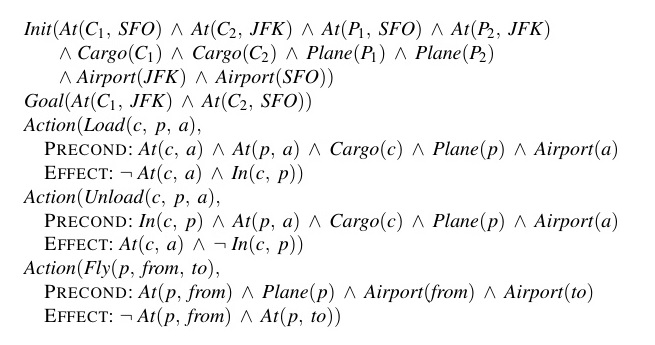
Hình 11.1: Mô tả PDDL cho một vấn đề lập kế hoạch vận chuyển hàng không.
Cần lưu ý thận trọng để đảm bảo rằng các vị từ At được duy trì một cách chính xác. Khi một chiếc máy bay bay từ sân bay này sang sân bay khác, toàn bộ hàng hóa bên trong máy bay sẽ đi theo nó. Trong logic bậc nhất (first-order logic), việc định lượng (quantify) trên tất cả các vật thể nằm bên trong máy bay sẽ rất dễ dàng. Nhưng PDDL không có lượng từ phổ dụng (universal quantifier), do đó chúng ta cần một giải pháp khác.
Cách tiếp cận mà chúng ta sử dụng là quy định rằng một món hàng sẽ không còn At (ở tại) bất kỳ đâu khi nó đang In (bên trong) một chiếc máy bay; món hàng đó chỉ có trạng thái At tại sân bay mới khi nó được dỡ xuống. Vì vậy, At thực sự mang ý nghĩa là "sẵn sàng để sử dụng tại một vị trí cụ thể".
Kế hoạch sau đây là một giải pháp cho vấn đề:
[Load(C1, P1, SFO), Fly(P1, SFO, JFK), Unload(C1, P1, JFK),
Load(C2, P2, JFK), Fly(P2, JFK, SFO), Unload(C2, P2, SFO)]
11.1.2 Ví dụ về miền: Vấn đề lốp dự phòng (The spare tire problem)
Hãy xem xét vấn đề thay một chiếc lốp xe bị xẹp (Hình 11.2). Mục tiêu là phải có một chiếc lốp dự phòng tốt được lắp đúng cách vào trục xe, trong đó trạng thái ban đầu có một chiếc lốp xẹp trên trục xe và một chiếc lốp dự phòng tốt trong cốp xe.
Để giữ cho bài toán đơn giản, phiên bản vấn đề của chúng ta là một phiên bản trừu tượng (abstract), không có các đai ốc bị kẹt hay những rắc rối nào khác. Chỉ có bốn hành động: lấy lốp dự phòng ra khỏi cốp, tháo lốp xẹp ra khỏi trục xe, lắp lốp dự phòng vào trục xe, và để xe không có người trông coi qua đêm. Chúng ta giả định rằng chiếc xe được đỗ trong một khu phố đặc biệt tồi tệ, dẫn đến hiệu ứng của việc để xe qua đêm là các lốp xe sẽ biến mất. Giải pháp cho vấn đề này là: [Remove(Flat, Axle), Remove(Spare, Trunk), PutOn(Spare, Axle)].
Init(Tire(Flat) ∧ Tire(Spare) ∧ At(Flat, Axle) ∧ At(Spare, Trunk))Goal(At(Spare, Axle))Action(Remove(obj, loc),PRECOND: At(obj, loc)EFFECT: ¬At(obj, loc) ∧ At(obj, Ground))
Action(PutOn(t, Axle),PRECOND: Tire(t) ∧ At(t, Ground) ∧ ¬At(Flat, Axle) ∧ ¬At(Spare, Axle)EFFECT: ¬At(t, Ground) ∧ At(t, Axle))
Action(LeaveOvernight,PRECOND:EFFECT: ¬At(Spare, Ground) ∧ ¬At(Spare, Axle) ∧ ¬At(Spare, Trunk)∧ ¬At(Flat, Ground) ∧ ¬At(Flat, Axle) ∧ ¬At(Flat, Trunk))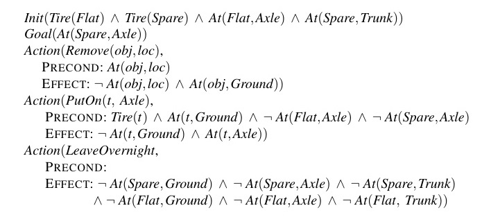
Hình 11.2: Vấn đề lốp dự phòng đơn giản.
11.1.3 Ví dụ về miền: Thế giới khối vuông (The blocks world)
Một trong những miền lập kế hoạch nổi tiếng nhất là thế giới khối vuông (blocks world). Miền này bao gồm một tập hợp các khối hình lập phương đặt trên một chiếc bàn lớn tùy ý. [Chú thích 1: Thế giới khối vuông thường được sử dụng trong nghiên cứu lập kế hoạch đơn giản hơn rất nhiều so với phiên bản của SHRDLU (trang 38)]. Các khối có thể được xếp chồng lên nhau, nhưng chỉ có một khối có thể nằm trực tiếp trên đỉnh của một khối khác. Một cánh tay robot có thể nhấc một khối lên và di chuyển nó đến một vị trí khác, có thể là trên mặt bàn hoặc trên đỉnh của một khối khác. Cánh tay chỉ có thể nhấc một khối tại một thời điểm, vì vậy nó không thể nhấc một khối đang có một khối khác nằm bên trên nó. Một mục tiêu điển hình là đặt khối A lên trên khối B và khối B lên trên khối C (xem Hình 11.3).
(Hình ảnh minh họa hai trạng thái) Trạng thái Bắt đầu (Start State): Khối C nằm trên khối A. Khối A và khối B nằm trên mặt bàn. Trạng thái Mục tiêu (Goal State): Khối A nằm trên khối B. Khối B nằm trên khối C. Khối C nằm trên mặt bàn.
Hình 11.3: Sơ đồ (Diagram) của vấn đề thế giới khối vuông trong Hình 11.4.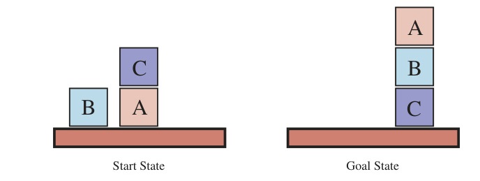
Init(On(A, Table) ∧ On(B, Table) ∧ On(C, A) ∧ Block(A) ∧ Block(B) ∧ Block(C) ∧ Clear(B) ∧ Clear(C) ∧ Clear(Table))Goal(On(A, B) ∧ On(B, C))Action(Move(b, x, y),PRECOND: On(b, x) ∧ Clear(b) ∧ Clear(y) ∧ Block(b) ∧ Block(y) ∧ (b ≠ x) ∧ (b ≠ y) ∧ (x ≠ y),EFFECT: On(b, y) ∧ Clear(x) ∧ ¬On(b, x) ∧ ¬Clear(y))Action(MoveToTable(b, x),PRECOND: On(b, x) ∧ Clear(b) ∧ Block(b) ∧ Block(x),EFFECT: On(b, Table) ∧ Clear(x) ∧ ¬On(b, x))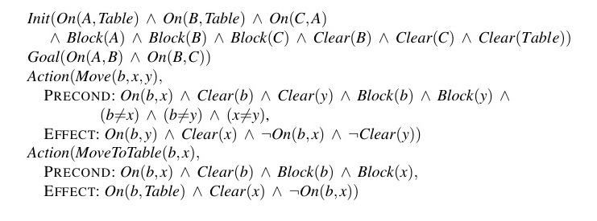
Hình 11.4: Một vấn đề lập kế hoạch trong thế giới khối vuông: xây dựng một tòa tháp ba khối. Một giải pháp là chuỗi
[MoveToTable(C, A), Move(B, Table, C), Move(A, Table, B)].
Chúng ta sử dụng On(b, x) để chỉ ra rằng khối $b$ nằm trên $x$, trong đó $x$ có thể là một khối khác hoặc mặt bàn. Hành động để di chuyển khối $b$ từ đỉnh của $x$ sang đỉnh của $y$ sẽ là Move(b, x, y).
Bây giờ, một trong những điều kiện tiên quyết để di chuyển khối $b$ là không có khối nào khác nằm trên nó. Trong logic bậc nhất, điều này sẽ được biểu diễn là ¬∃x On(x, b) hoặc thay vào đó là ∀x ¬On(x, b). PDDL cơ bản không cho phép các lượng từ, vì vậy thay vào đó chúng ta giới thiệu một vị từ Clear(x) mang giá trị đúng khi không có gì nằm trên $x$. (Mô tả bài toán hoàn chỉnh nằm ở Hình 11.4).
Hành động Move di chuyển một khối $b$ từ $x$ sang $y$ nếu cả $b$ và $y$ đều đang trống (Clear). Sau khi việc di chuyển được thực hiện, $b$ vẫn trống nhưng $y$ thì không. Nỗ lực đầu tiên để viết lược đồ Move là:
Action(Move(b, x, y),
PRECOND: On(b, x) ∧ Clear(b) ∧ Clear(y),
EFFECT: On(b, y) ∧ Clear(x) ∧ ¬On(b, x) ∧ ¬Clear(y)).
Thật không may, cách này không duy trì trạng thái Clear một cách chính xác khi $x$ hoặc $y$ là chiếc bàn (Table). Khi $x$ là Table, hành động này có hiệu ứng tạo ra Clear(Table), nhưng mặt bàn thì không bao giờ được phép trở nên hoàn toàn lấp đầy không gian trống; và khi $y = Table$, nó lại có điều kiện tiên quyết là Clear(Table), nhưng thực tế thì mặt bàn không nhất thiết phải trống rỗng để chúng ta có thể di chuyển một khối lên đó.
Để khắc phục điều này, chúng ta thực hiện hai việc. Thứ nhất, chúng ta giới thiệu thêm một hành động khác để di chuyển khối $b$ từ $x$ xuống mặt bàn:
Action(MoveToTable(b, x),
PRECOND: On(b, x) ∧ Clear(b),
EFFECT: On(b, Table) ∧ Clear(x) ∧ ¬On(b, x)).
Thứ hai, chúng ta diễn giải Clear(x) theo ý nghĩa là "có một không gian trống trên $x$ để chứa một khối". Dưới cách diễn giải này, Clear(Table) sẽ luôn luôn đúng. Vấn đề duy nhất là không có gì ngăn cản bộ lập kế hoạch sử dụng Move(b, x, Table) thay vì MoveToTable(b, x). Chúng ta có thể chấp nhận vấn đề này—nó sẽ dẫn đến một không gian tìm kiếm lớn hơn mức cần thiết, nhưng sẽ không dẫn đến các câu trả lời sai—hoặc chúng ta có thể giới thiệu vị từ Block và thêm Block(b) ∧ Block(y) vào phần điều kiện tiên quyết của hành động Move, như được hiển thị trong Hình 11.4.
11.2 Các thuật toán Lập kế hoạch Cổ điển (Algorithms for Classical Planning)
Mô tả của một vấn đề lập kế hoạch cung cấp một cách rõ ràng để tìm kiếm từ trạng thái ban đầu qua không gian các trạng thái, nhằm tìm kiếm một mục tiêu. Một lợi thế tuyệt vời của việc biểu diễn khai báo (declarative representation) các lược đồ hành động là chúng ta cũng có thể tìm kiếm lùi từ mục tiêu, tìm kiếm trạng thái ban đầu (Hình 11.5 so sánh các tìm kiếm tiến và lùi). Một khả năng thứ ba là dịch mô tả vấn đề thành một tập hợp các câu logic, sau đó chúng ta có thể áp dụng một thuật toán suy diễn logic để tìm ra giải pháp.
11.2.1 Tìm kiếm không gian trạng thái tiến cho lập kế hoạch (Forward state-space search for planning)
Chúng ta có thể giải quyết các vấn đề lập kế hoạch bằng cách áp dụng bất kỳ thuật toán tìm kiếm tự suy (heuristic search algorithms) nào từ Chương 3 hoặc Chương 4. Các trạng thái trong không gian trạng thái tìm kiếm này là các trạng thái cơ sở (ground states), trong đó mọi fluent đều mang giá trị đúng (true) hoặc sai (not). Mục tiêu là một trạng thái có tất cả các fluent khẳng định trong mục tiêu của vấn đề và không có bất kỳ fluent phủ định nào. Các hành động khả thi trong một trạng thái, Actions(s), là các phiên bản khởi tạo cơ sở (grounded instantiations) của các lược đồ hành động—nghĩa là các hành động mà trong đó tất cả các biến đã được thay thế bằng các giá trị hằng số.
Để xác định các hành động khả thi, chúng ta hợp nhất (unify) trạng thái hiện tại với các điều kiện tiên quyết của mỗi lược đồ hành động. Với mỗi phép hợp nhất tạo ra một phép thế (substitution) thành công, chúng ta áp dụng phép thế đó cho lược đồ hành động để tạo ra một hành động cơ sở không chứa biến. (Một yêu cầu của các lược đồ hành động là bất kỳ biến nào trong phần hiệu ứng cũng phải xuất hiện trong phần điều kiện tiên quyết; bằng cách đó, chúng ta được đảm bảo rằng không còn biến nào tồn tại sau phép thế).
Mỗi lược đồ có thể hợp nhất theo nhiều cách. Trong ví dụ về lốp dự phòng (trang 364), hành động Remove có điều kiện tiên quyết là At(obj, loc), điều kiện này khớp với trạng thái ban đầu theo hai cách, dẫn đến hai phép thế {obj/Flat, loc/Axle} và {obj/Spare, loc/Trunk}; việc áp dụng các phép thế này tạo ra hai hành động cơ sở. Nếu một hành động có nhiều literal trong điều kiện tiên quyết, thì mỗi literal đó đều có khả năng được khớp với trạng thái hiện tại theo nhiều cách.
Thoạt nhìn, có vẻ như không gian trạng thái có thể quá lớn đối với nhiều vấn đề. Hãy xem xét một bài toán vận chuyển hàng không với 10 sân bay, trong đó mỗi sân bay ban đầu có 5 máy bay và 20 kiện hàng. Mục tiêu là chuyển tất cả hàng hóa tại sân bay A đến sân bay B. Có một giải pháp 41 bước cho vấn đề này: xếp (load) 20 kiện hàng lên một trong những chiếc máy bay tại A, bay (fly) máy bay đến B và dỡ (unload) 20 kiện hàng xuống.
Việc tìm ra giải pháp tưởng chừng như đơn giản này lại có thể rất khó khăn do hệ số phân nhánh (branching factor) trung bình là vô cùng lớn: mỗi chiếc trong số 50 máy bay có thể bay đến 9 sân bay khác, và mỗi kiện trong số 200 kiện hàng có thể được dỡ xuống (nếu nó đang ở trên máy bay) hoặc xếp lên bất kỳ máy bay nào tại sân bay của nó (nếu nó chưa được xếp). Do đó, ở bất kỳ trạng thái nào, có tối thiểu 450 hành động (khi tất cả các kiện hàng đều ở các sân bay không có máy bay) và tối đa 10.450 hành động (khi tất cả hàng hóa và máy bay đều ở cùng một sân bay). Trung bình, giả sử có khoảng 2000 hành động có thể xảy ra trong mỗi trạng thái, vì vậy đồ thị tìm kiếm lên đến độ sâu của giải pháp 41 bước sẽ có khoảng $2000^{41}$ nút (nodes).
Rõ ràng, ngay cả ví dụ về bài toán tương đối nhỏ này cũng sẽ vô vọng nếu không có một hàm tự suy (heuristic) chính xác. Mặc dù nhiều ứng dụng lập kế hoạch trong thế giới thực đã dựa vào các hàm tự suy đặc thù của miền (domain-specific heuristics), hóa ra (như chúng ta sẽ thấy trong Mục 11.3) rằng các hàm tự suy mạnh, độc lập với miền (domain-independent heuristics) có thể được suy xuất tự động; đó chính là điều làm cho phương pháp tìm kiếm tiến trở nên khả thi.
(Hình ảnh minh họa hai hướng tìm kiếm: Tiến và Lùi)
Hình 11.5: Hai hướng tiếp cận để tìm kiếm một kế hoạch. (a) Tìm kiếm tiến (forward/progression search) qua không gian các trạng thái cơ sở (ground states), bắt đầu từ trạng thái ban đầu và sử dụng các hành động của bài toán để tìm kiếm tiến tới một thành viên thuộc tập hợp các trạng thái mục tiêu. (b) Tìm kiếm lùi (backward/regression search) qua các mô tả trạng thái (state descriptions), bắt đầu từ mục tiêu và sử dụng dạng đảo ngược của các hành động để tìm kiếm lùi về trạng thái ban đầu.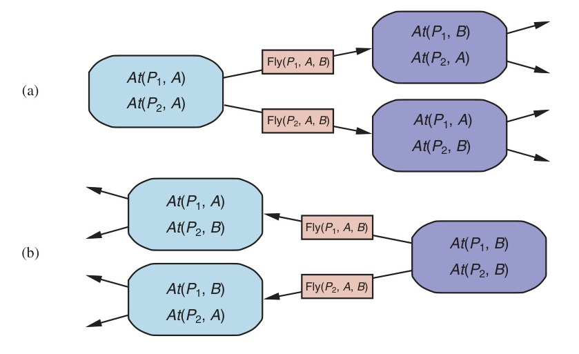
11.2.2 Tìm kiếm lùi cho lập kế hoạch (Backward search for planning)
Trong tìm kiếm lùi (backward search) (còn gọi là tìm kiếm hồi quy - regression search), chúng ta bắt đầu từ mục tiêu và áp dụng các hành động theo hướng lùi cho đến khi tìm thấy một chuỗi các bước đạt tới trạng thái ban đầu. Tại mỗi bước, chúng ta xem xét các hành động liên quan (relevant actions) (ngược lại với tìm kiếm tiến, vốn xem xét các hành động khả thi - applicable). Điều này làm giảm đáng kể hệ số phân nhánh, đặc biệt là trong các miền có nhiều hành động có thể xảy ra.
Một hành động liên quan là hành động có hiệu ứng hợp nhất được với một trong các literal mục tiêu, nhưng không có hiệu ứng nào phủ định bất kỳ phần nào của mục tiêu. Ví dụ, với mục tiêu ¬Poor ∧ Famous, một hành động chỉ có duy nhất hiệu ứng Famous sẽ được coi là có liên quan, nhưng một hành động có hiệu ứng Poor ∧ Famous thì không được coi là liên quan: mặc dù hành động đó có thể được sử dụng tại một thời điểm nào đó trong kế hoạch (để thiết lập Famous), nhưng nó không thể xuất hiện tại điểm này trong kế hoạch vì khi đó Poor sẽ xuất hiện ở trạng thái cuối cùng.
Việc áp dụng một hành động theo hướng lùi có ý nghĩa là gì? Cho trước một mục tiêu $g$ và một hành động $a$, sự hồi quy (regression) từ $g$ qua $a$ cho chúng ta một mô tả trạng thái $g'$ mà các literal khẳng định và phủ định của nó được xác định bởi: $POS(g') = (POS(g) - ADD(a)) \cup POS(Precond(a))$ $NEG(g') = (NEG(g) - DEL(a)) \cup NEG(Precond(a))$ Nghĩa là, các điều kiện tiên quyết phải được thỏa mãn trước đó, nếu không thì hành động không thể được thực thi, nhưng các literal khẳng định/phủ định đã được thêm/xóa bởi hành động đó không nhất thiết phải đúng trước đó.
Các phương trình này khá đơn giản đối với các literal cơ sở, nhưng cần cẩn trọng khi có chứa các biến trong $g$ và $a$. Ví dụ, giả sử mục tiêu là giao một kiện hàng cụ thể đến SFO: At(C2, SFO). Lược đồ hành động Unload có hiệu ứng At(c, a). Khi chúng ta hợp nhất điều đó với mục tiêu, chúng ta có được phép thế {c/C2, a/SFO}; áp dụng phép thế đó cho lược đồ sẽ cho chúng ta một lược đồ mới thể hiện ý tưởng sử dụng bất kỳ máy bay nào đang ở SFO:
Action(Unload(C2, p', SFO),
PRECOND: In(C2, p') ∧ At(p', SFO) ∧ Cargo(C2) ∧ Plane(p') ∧ Airport(SFO)
EFFECT: At(C2, SFO) ∧ ¬In(C2, p'))
Ở đây, chúng ta đã thay thế biến $p$ bằng một biến mới có tên là $p'$. Đây là một ví dụ của việc chuẩn hóa tách biệt (standardizing apart) các tên biến để không có sự xung đột giữa các biến khác nhau tình cờ có cùng tên (xem trang 302). Mô tả trạng thái đã hồi quy cung cấp cho chúng ta một mục tiêu mới:
g' = In(C2, p') ∧ At(p', SFO) ∧ Cargo(C2) ∧ Plane(p') ∧ Airport(SFO)
Lấy một ví dụ khác, hãy xem xét mục tiêu sở hữu một cuốn sách với một số ISBN cụ thể: Own(9780134610993). Giả sử có một nghìn tỷ mã ISBN gồm 13 chữ số và chỉ có một lược đồ hành động duy nhất:
A = Action(Buy(i), PRECOND: ISBN(i), EFFECT: Own(i))
Một tìm kiếm tiến không có hàm tự suy sẽ phải bắt đầu liệt kê ra 10 tỷ hành động Buy cơ sở (ground Buy actions). Nhưng với tìm kiếm lùi, chúng ta sẽ hợp nhất mục tiêu Own(9780134610993) với hiệu ứng Own(i'), tạo ra phép thế $\theta = {i'/9780134610993}$. Sau đó, chúng ta sẽ hồi quy qua hành động $Subst(\theta, A)$ để tạo ra mô tả trạng thái tiền nhiệm ISBN(9780134610993). Đây là một phần của trạng thái ban đầu, vì vậy chúng ta đã có một giải pháp và hoàn thành bài toán, mà chỉ phải xem xét một hành động duy nhất chứ không phải một nghìn tỷ hành động.
Nói một cách hình thức hơn, giả sử một mô tả mục tiêu $g$ chứa một literal mục tiêu $g_i$ và một lược đồ hành động $A$. Nếu $A$ có một literal hiệu ứng $e'_j$ sao cho $Unify(g_i, e'_j) = \theta$ và chúng ta định nghĩa $A' = SUBST(\theta, A)$, và nếu trong $A'$ không có hiệu ứng nào là phủ định của một literal trong $g$, thì $A'$ là một hành động liên quan hướng tới $g$.
Đối với hầu hết các miền vấn đề, tìm kiếm lùi giữ cho hệ số phân nhánh thấp hơn so với tìm kiếm tiến. Tuy nhiên, việc tìm kiếm lùi sử dụng các trạng thái chứa biến (states with variables) thay vì các trạng thái cơ sở (ground states) khiến cho việc đưa ra các hàm tự suy tốt trở nên khó khăn hơn. Đó là lý do chính tại sao phần lớn các hệ thống hiện tại lại ưa chuộng tìm kiếm tiến.
11.2.3 Lập kế hoạch dưới dạng Bài toán Thỏa mãn Boolean (Planning as Boolean satisfiability)
Trong Mục 7.7.4, chúng tôi đã chỉ ra cách một số phép viết lại tiên đề (axiom-rewriting) khéo léo có thể biến vấn đề thế giới Wumpus thành một bài toán thỏa mãn logic mệnh đề (propositional logic satisfiability problem), có thể được chuyển giao cho một bộ giải bài toán thỏa mãn (satisfiability solver) hiệu quả. Các bộ lập kế hoạch dựa trên SAT như SATPLAN hoạt động bằng cách dịch một mô tả vấn đề PDDL sang dạng mệnh đề (propositional form). Quá trình dịch này bao gồm một chuỗi các bước:
Unload(c, p, a) duy nhất, chúng ta sẽ có các mệnh đề hành động riêng biệt cho từng tổ hợp hàng hóa, máy bay và sân bay (ở đây được viết với chỉ số dưới), và cho mỗi bước thời gian (ở đây được viết dưới dạng chỉ số trên).¬(FlyP1SFOJFK^1 ∧ FlyP1SFOBUH^1).FlyP1SFOJFK^1 ⇒ At(P1, SFO) ∧ Plane(P1) ∧ Airport(SFO) ∧ Airport(JFK).On(A, x) ∧ Block(x) trong một thế giới có các vật thể A, B và C, sẽ được thay thế bằng mục tiêu:
(On(A, A) ∧ Block(A)) ∨ (On(A, B) ∧ Block(B)) ∨ (On(A, C) ∧ Block(C))Bản dịch kết quả tạo ra thường lớn hơn rất nhiều so với PDDL gốc, nhưng hiệu quả của các bộ giải SAT hiện đại thường thừa sức bù đắp cho điều này.
11.2.4 Các phương pháp tiếp cận Lập kế hoạch Cổ điển khác (Other classical planning approaches)
Ba phương pháp tiếp cận mà chúng ta đã đề cập ở trên không phải là những phương pháp duy nhất được thử nghiệm trong lịch sử 50 năm của lĩnh vực lập kế hoạch tự động. Chúng tôi mô tả ngắn gọn một số phương pháp khác tại đây.
Một phương pháp tiếp cận được gọi là Graphplan sử dụng một cấu trúc dữ liệu chuyên biệt, một đồ thị lập kế hoạch (planning graph), để mã hóa các ràng buộc về cách các hành động liên quan đến các điều kiện tiên quyết và hiệu ứng của chúng, và những yếu tố nào là loại trừ lẫn nhau (mutually exclusive).
Phép tính tình huống (Situation calculus) là một phương pháp mô tả các vấn đề lập kế hoạch trong logic bậc nhất (first-order logic). Nó sử dụng các tiên đề trạng thái kế tiếp giống như cách SATPLAN thực hiện, nhưng logic bậc nhất cho phép tính linh hoạt cao hơn và các tiên đề súc tích hơn. Nhìn chung, phương pháp này đã đóng góp vào sự hiểu biết lý thuyết của chúng ta về lập kế hoạch, nhưng chưa tạo ra tác động lớn trong các ứng dụng thực tế, có lẽ vì các chương trình chứng minh bậc nhất (first-order provers) chưa phát triển tốt như các chương trình thỏa mãn mệnh đề.
Hoàn toàn có thể mã hóa một bài toán lập kế hoạch có giới hạn (bounded planning problem) (nghĩa là bài toán tìm kiếm một kế hoạch có độ dài $k$) thành một bài toán thỏa mãn ràng buộc (constraint satisfaction problem - CSP). Việc mã hóa này tương tự như mã hóa thành một bài toán SAT (Mục 11.2.3), với một sự đơn giản hóa quan trọng: tại mỗi bước thời gian, chúng ta chỉ cần một biến duy nhất, $Action^t$, với miền giá trị của nó là tập hợp các hành động có thể xảy ra. Chúng ta không còn cần một biến cho mỗi hành động, và chúng ta cũng không cần các tiên đề loại trừ hành động.
Tất cả các phương pháp mà chúng ta đã thấy cho đến nay đều xây dựng các kế hoạch được sắp xếp thứ tự hoàn toàn (totally ordered plans), bao gồm các chuỗi hành động tuyến tính nghiêm ngặt. Nhưng nếu một bài toán vận chuyển hàng không có 30 kiện hàng được xếp lên một máy bay và 50 kiện hàng được xếp lên một máy bay khác, thì việc phải đưa ra một thứ tự tuyến tính cụ thể cho 80 hành động xếp hàng dường như là vô nghĩa.
Một phương pháp thay thế có tên là lập kế hoạch trật tự cục bộ (partial-order planning) biểu diễn một kế hoạch dưới dạng một đồ thị thay vì một chuỗi tuyến tính: mỗi hành động là một nút trong đồ thị, và với mỗi điều kiện tiên quyết của hành động, sẽ có một cạnh nối từ một hành động khác (hoặc từ trạng thái ban đầu) chỉ ra rằng hành động tiền nhiệm (predecessor action) đã thiết lập điều kiện tiên quyết đó. Vì vậy, chúng ta có thể có một kế hoạch trật tự cục bộ cho biết các hành động Remove(Spare, Trunk) và Remove(Flat, Axle) phải diễn ra trước PutOn(Spare, Axle), nhưng không cần chỉ định rõ hành động Remove nào trong hai hành động trên sẽ diễn ra trước. Chúng ta tìm kiếm trong không gian các kế hoạch thay vì không gian các trạng thái thế giới, bằng cách chèn thêm các hành động vào để thỏa mãn các điều kiện.
Trong những năm 1980 và 1990, lập kế hoạch trật tự cục bộ được coi là cách tốt nhất để giải quyết các vấn đề lập kế hoạch có các bài toán con độc lập (independent subproblems). Cho đến năm 2000, các bộ lập kế hoạch tìm kiếm tiến (forward-search planners) đã phát triển được các hàm tự suy xuất sắc, cho phép chúng khám phá một cách hiệu quả các bài toán con độc lập mà vốn dĩ lập kế hoạch trật tự cục bộ được thiết kế để giải quyết. Hơn nữa, SATPLAN đã có thể tận dụng lợi thế của định luật Moore: một quy trình mệnh đề hóa (propositionalization) tưởng chừng lớn đến mức vô vọng vào năm 1980 giờ đây lại trông vô cùng nhỏ bé, bởi vì máy tính ngày nay có bộ nhớ lớn hơn gấp 10.000 lần. Do đó, các bộ lập kế hoạch trật tự cục bộ không còn khả năng cạnh tranh trong các vấn đề lập kế hoạch cổ điển tự động hóa hoàn toàn.
Mặc dù vậy, lập kế hoạch trật tự cục bộ vẫn là một phần quan trọng của lĩnh vực này. Đối với một số nhiệm vụ cụ thể, chẳng hạn như lập lịch trình hoạt động (operations scheduling), lập kế hoạch trật tự cục bộ kết hợp với các hàm tự suy đặc thù của miền là công nghệ được ưu tiên lựa chọn. Nhiều hệ thống trong số này sử dụng các thư viện chứa các kế hoạch cấp cao, như được mô tả trong Mục 11.4.
Lập kế hoạch trật tự cục bộ cũng thường được sử dụng trong các lĩnh vực mà việc con người hiểu được các kế hoạch là rất quan trọng. Ví dụ, các kế hoạch hoạt động cho tàu vũ trụ và xe tự hành trên sao Hỏa được tạo ra bởi các bộ lập kế hoạch trật tự cục bộ, sau đó được kiểm tra bởi các chuyên gia điều hành con người trước khi được tải lên các phương tiện để thực thi. Cách tiếp cận tinh chỉnh kế hoạch (plan refinement) này giúp con người dễ dàng hiểu được những gì mà các thuật toán lập kế hoạch đang thực hiện và để xác minh rằng các kế hoạch là chính xác trước khi chúng được đưa vào thực thi.
11.3 Các hàm tự suy cho Lập kế hoạch (Heuristics for Planning)
Cả tìm kiếm tiến (forward search) và tìm kiếm lùi (backward search) đều không hiệu quả nếu thiếu một hàm tự suy tốt. Hãy nhớ lại từ Chương 3 rằng một hàm tự suy $h(s)$ ước tính khoảng cách từ một trạng thái $s$ đến mục tiêu, và nếu chúng ta có thể suy ra một hàm tự suy chấp nhận được (admissible heuristic) cho khoảng cách này—một hàm không đánh giá quá cao (overestimate)—thì chúng ta có thể sử dụng thuật toán tìm kiếm A* để tìm ra các giải pháp tối ưu.
Theo định nghĩa, không có cách nào để phân tích một trạng thái nguyên tử (atomic state), và do đó, nó đòi hỏi sự khéo léo của một nhà phân tích (thường là con người) để định nghĩa các hàm tự suy đặc thù của miền (domain-specific heuristics) thật tốt cho các bài toán tìm kiếm với các trạng thái nguyên tử. Tuy nhiên, lập kế hoạch sử dụng một biểu diễn phân tích (factored representation) cho các trạng thái và hành động, điều này làm cho việc tự động định nghĩa các hàm tự suy độc lập với miền (domain-independent heuristics) trở nên khả thi.
Hãy nhớ lại rằng một hàm tự suy chấp nhận được có thể được suy ra bằng cách định nghĩa một bài toán nới lỏng (relaxed problem) dễ giải quyết hơn. Chi phí chính xác của một giải pháp cho bài toán dễ hơn này sau đó trở thành hàm tự suy cho bài toán gốc. Một bài toán tìm kiếm có thể xem là một đồ thị trong đó các nút (nodes) là các trạng thái và các cạnh (edges) là các hành động. Bài toán ở đây là tìm một đường dẫn kết nối trạng thái ban đầu với một trạng thái mục tiêu.
Có hai cách chính để chúng ta có thể nới lỏng bài toán này nhằm làm cho nó dễ dàng hơn: bằng cách thêm nhiều cạnh hơn vào đồ thị, làm cho việc tìm kiếm đường dẫn trở nên cực kỳ dễ dàng hơn, hoặc bằng cách gộp nhiều nút lại với nhau, tạo thành một sự trừu tượng hóa (abstraction) của không gian trạng thái với ít trạng thái hơn, và do đó dễ tìm kiếm hơn.
Đầu tiên, chúng ta hãy xem xét các hàm tự suy thêm cạnh vào đồ thị. Có lẽ đơn giản nhất là hàm tự suy bỏ qua điều kiện tiên quyết (ignore-preconditions heuristic), trong đó loại bỏ tất cả các điều kiện tiên quyết khỏi các hành động. Mọi hành động sẽ trở nên khả thi trong mọi trạng thái, và bất kỳ một fluent mục tiêu đơn lẻ nào cũng có thể đạt được chỉ trong một bước (nếu có bất kỳ hành động khả thi nào—nếu không, bài toán là bất khả thi). Điều này gần như ngụ ý rằng số bước cần thiết để giải quyết bài toán nới lỏng chính là số lượng các mục tiêu chưa được thỏa mãn—gần như vậy nhưng không hoàn toàn, bởi vì (1) một hành động nào đó có thể đạt được nhiều mục tiêu cùng lúc và (2) một số hành động có thể hoàn tác (undo) hiệu ứng của các hành động khác.
Đối với nhiều bài toán, một hàm tự suy chính xác có thể đạt được bằng cách xem xét (1) và bỏ qua (2). Đầu tiên, chúng ta nới lỏng các hành động bằng cách loại bỏ tất cả các điều kiện tiên quyết và tất cả các hiệu ứng ngoại trừ những literal nằm trong mục tiêu. Sau đó, chúng ta đếm số lượng hành động tối thiểu cần thiết sao cho hợp (union) của các hiệu ứng của những hành động đó thỏa mãn mục tiêu. Đây là một ví dụ của bài toán phủ tập hợp (set-cover problem).
Có một sự phiền toái nhỏ: bài toán phủ tập hợp là NP-khó (NP-hard). May mắn thay, một thuật toán tham lam (greedy algorithm) đơn giản được đảm bảo sẽ trả về một tập hợp phủ có kích thước nằm trong khoảng hệ số $\log n$ so với tập hợp phủ tối thiểu thực sự, trong đó $n$ là số lượng các literal trong mục tiêu. Thật không may, thuật toán tham lam lại làm mất đi tính đảm bảo của sự chấp nhận được (admissibility).
Cũng có thể chỉ bỏ qua một số điều kiện tiên quyết được chọn lọc của các hành động. Hãy xem xét bài toán trượt gạch (sliding-tile puzzle - như 8-puzzle hoặc 15-puzzle) từ Mục 3.2. Chúng ta có thể mã hóa trò chơi này thành một vấn đề lập kế hoạch liên quan đến các viên gạch bằng một lược đồ duy nhất Slide:
Action(Slide(t, s1, s2),
PRECOND: On(t, s1) ∧ Tile(t) ∧ Blank(s2) ∧ Adjacent(s1, s2)
EFFECT: On(t, s2) ∧ Blank(s1) ∧ ¬On(t, s1) ∧ ¬Blank(s2))
Như chúng ta đã thấy trong Mục 3.6, nếu chúng ta loại bỏ các điều kiện tiên quyết Blank(s2) ∧ Adjacent(s1, s2) thì bất kỳ viên gạch nào cũng có thể di chuyển trong một hành động đến bất kỳ khoảng trống nào, và chúng ta có được hàm tự suy đếm số gạch sai vị trí (number-of-misplaced-tiles heuristic). Nếu chúng ta chỉ loại bỏ điều kiện tiên quyết Blank(s2), thì chúng ta nhận được hàm tự suy khoảng cách Manhattan (Manhattan-distance heuristic). Rất dễ để thấy cách mà các hàm tự suy này có thể được suy ra một cách tự động từ mô tả lược đồ hành động. Sự dễ dàng trong việc thao tác với các lược đồ hành động chính là lợi thế to lớn của biểu diễn phân tích trong các vấn đề lập kế hoạch, so với biểu diễn nguyên tử của các bài toán tìm kiếm.
Một khả năng khác là hàm tự suy bỏ qua danh sách xóa (ignore-delete-lists heuristic). Giả sử trong giây lát rằng tất cả các mục tiêu và điều kiện tiên quyết chỉ chứa các literal khẳng định. [Chú thích 2: Nhiều vấn đề được viết theo quy ước này. Đối với những vấn đề không tuân theo quy ước, hãy thay thế mọi literal phủ định $\neg P$ trong mục tiêu hoặc điều kiện tiên quyết bằng một literal khẳng định mới, $P'$, và sửa đổi trạng thái ban đầu cũng như các hiệu ứng hành động cho phù hợp].
Chúng ta muốn tạo ra một phiên bản nới lỏng của bài toán gốc dễ giải quyết hơn, và nơi độ dài của giải pháp sẽ đóng vai trò như một hàm tự suy tốt. Chúng ta có thể làm điều đó bằng cách loại bỏ các danh sách xóa khỏi tất cả các hành động (tức là, loại bỏ tất cả các literal phủ định khỏi phần hiệu ứng). Điều đó giúp chúng ta có thể tạo ra tiến trình đơn điệu (monotonic progress) hướng tới mục tiêu—không có hành động nào sẽ hoàn tác lại tiến bộ đã đạt được bởi một hành động khác. Hóa ra, việc tìm ra giải pháp tối ưu cho bài toán nới lỏng này vẫn là NP-khó, nhưng một giải pháp xấp xỉ có thể được tìm thấy trong thời gian đa thức (polynomial time) bằng thuật toán leo đồi (hill climbing).
(Hình ảnh 11.6: Hai mô hình không gian trạng thái)
Hình 11.6: Hai không gian trạng thái từ các bài toán lập kế hoạch sử dụng hàm tự suy bỏ qua danh sách xóa (ignore-delete-lists heuristic). Chiều cao phía trên mặt phẳng đáy là điểm số tự suy của một trạng thái; các trạng thái nằm trên mặt phẳng đáy là các mục tiêu. Không có cực tiểu cục bộ (local minima), vì vậy việc tìm kiếm mục tiêu diễn ra rất đơn giản. Nguồn: Hoffmann (2005).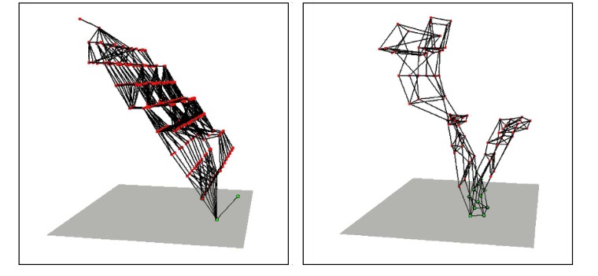
Hình 11.6 minh họa một phần của không gian trạng thái cho hai bài toán lập kế hoạch sử dụng hàm tự suy bỏ qua danh sách xóa. Các dấu chấm đại diện cho các trạng thái và các cạnh đại diện cho hành động, còn chiều cao của mỗi dấu chấm so với mặt phẳng đáy thể hiện giá trị tự suy. Các trạng thái nằm trên mặt phẳng đáy là các giải pháp. Trong cả hai bài toán này, đều có một con đường rộng mở dẫn đến mục tiêu. Không có các ngõ cụt (dead ends), do đó không cần phải quay lui (backtracking); một phương pháp tìm kiếm leo đồi đơn giản sẽ dễ dàng tìm ra một giải pháp cho các bài toán này (mặc dù nó có thể không phải là một giải pháp tối ưu).
11.3.1 Cắt tỉa độc lập với miền (Domain-independent pruning)
Biểu diễn phân tích làm cho một điều trở nên rõ ràng là nhiều trạng thái chỉ là các biến thể của các trạng thái khác. Ví dụ, giả sử chúng ta có một chục khối vuông trên bàn, và mục tiêu là đặt khối A lên trên đỉnh của một tòa tháp ba khối. Bước đầu tiên trong giải pháp là đặt một khối $x$ nào đó lên trên khối $y$ (trong đó $x$, $y$ và $A$ đều khác nhau). Sau đó, đặt $A$ lên trên $x$ là chúng ta hoàn thành. Có 11 lựa chọn cho $x$, và khi đã có $x$, có 10 lựa chọn cho $y$, và do đó có 110 trạng thái để xem xét.
Tuy nhiên, tất cả các trạng thái này đều đối xứng với nhau: việc chọn một trạng thái này thay vì trạng thái khác không tạo ra sự khác biệt nào, và do đó một bộ lập kế hoạch (planner) chỉ nên xem xét một trong số chúng. Đây là quá trình giảm thiểu đối xứng (symmetry reduction): chúng ta cắt tỉa (prune) khỏi quá trình xem xét tất cả các nhánh đối xứng của cây tìm kiếm ngoại trừ một nhánh. Đối với nhiều miền, điều này tạo ra sự khác biệt giữa việc giải quyết vấn đề một cách bất khả thi (intractable) và giải quyết hiệu quả.
Một khả năng khác là thực hiện cắt tỉa tiến (forward pruning), chấp nhận rủi ro rằng chúng ta có thể cắt tỉa mất một giải pháp tối ưu, nhằm mục đích tập trung tìm kiếm vào các nhánh đầy hứa hẹn. Chúng ta có thể định nghĩa một hành động ưu tiên (preferred action) như sau: Đầu tiên, xác định một phiên bản nới lỏng của bài toán, và giải quyết nó để có được một kế hoạch nới lỏng (relaxed plan). Khi đó, một hành động ưu tiên có thể là một bước thuộc kế hoạch nới lỏng đó, hoặc nó là hành động đạt được một điều kiện tiên quyết nào đó của kế hoạch nới lỏng.
Đôi khi, ta có thể giải quyết một vấn đề một cách hiệu quả bằng cách nhận ra rằng các tương tác tiêu cực có thể được loại trừ. Chúng ta nói rằng một bài toán có các mục tiêu con tuần tự hóa được (serializable subgoals) nếu tồn tại một thứ tự của các mục tiêu con sao cho bộ lập kế hoạch có thể đạt được chúng theo thứ tự đó mà không cần phải hoàn tác bất kỳ mục tiêu con nào đã đạt được trước đó.
Ví dụ, trong thế giới khối vuông, nếu mục tiêu là xây dựng một tòa tháp (chẳng hạn, A nằm trên B, B nằm trên C, và C nằm trên mặt Bàn, như trong Hình 11.3 trang 365), thì các mục tiêu con có thể được tuần tự hóa từ dưới lên trên: nếu trước tiên chúng ta đạt được C nằm trên Table, chúng ta sẽ không bao giờ phải hoàn tác nó trong khi đang nỗ lực đạt được các mục tiêu con khác. Một bộ lập kế hoạch sử dụng thủ thuật từ-dưới-lên này có thể giải quyết bất kỳ bài toán nào trong thế giới khối vuông mà không cần quay lui (mặc dù nó có thể không phải lúc nào cũng tìm thấy kế hoạch ngắn nhất).
Lấy một ví dụ khác, nếu có một căn phòng với $n$ công tắc đèn, mỗi công tắc điều khiển một đèn riêng biệt, và mục tiêu là bật tất cả chúng lên, thì chúng ta không cần phải xem xét các hoán vị của thứ tự bật; chúng ta có thể tự ý giới hạn bản thân vào những kế hoạch bật các công tắc theo, ví dụ như, thứ tự tăng dần.
Đối với bộ lập kế hoạch Remote Agent điều khiển tàu vũ trụ Deep Space One của NASA, người ta đã xác định rằng các mệnh đề liên quan đến việc chỉ huy một con tàu vũ trụ là có thể tuần tự hóa được. Điều này có lẽ không quá ngạc nhiên, bởi vì một chiếc tàu vũ trụ được các kỹ sư thiết kế sao cho dễ điều khiển nhất có thể (tùy thuộc vào các ràng buộc khác). Bằng cách tận dụng thứ tự tuần tự hóa của các mục tiêu, bộ lập kế hoạch Remote Agent đã có thể loại bỏ phần lớn không gian tìm kiếm. Điều này có nghĩa là nó đủ nhanh để điều khiển tàu vũ trụ trong thời gian thực, một điều mà trước đây từng được coi là bất khả thi.
11.3.2 Trừu tượng hóa trạng thái trong lập kế hoạch (State abstraction in planning)
Một bài toán nới lỏng để lại cho chúng ta một bài toán lập kế hoạch được đơn giản hóa chỉ để tính toán giá trị của hàm tự suy. Nhiều bài toán lập kế hoạch có $10^{100}$ trạng thái hoặc nhiều hơn, và việc nới lỏng các hành động không làm giảm số lượng các trạng thái, điều đó có nghĩa là việc tính toán hàm tự suy vẫn có thể rất tốn kém. Do đó, bây giờ chúng ta xem xét các phép nới lỏng có khả năng làm giảm số lượng trạng thái bằng cách hình thành một sự trừu tượng hóa trạng thái (state abstraction)—một phép ánh xạ nhiều-thành-một từ các trạng thái trong biểu diễn cơ sở của bài toán sang một biểu diễn trừu tượng.
Hình thức dễ nhất của trừu tượng hóa trạng thái là bỏ qua một số fluent. Ví dụ, hãy xem xét một bài toán vận chuyển hàng không với 10 sân bay, 50 máy bay và 200 kiện hàng. Mỗi chiếc máy bay có thể ở một trong 10 sân bay và mỗi kiện hàng có thể ở trong một chiếc máy bay hoặc đang được dỡ xuống tại một trong các sân bay. Vì vậy, có $10^{50} \times (50+10)^{200} \approx 10^{405}$ trạng thái.
Bây giờ hãy xem xét một bài toán cụ thể trong miền đó, trong đó tình cờ tất cả các kiện hàng chỉ nằm ở 5 sân bay, và tất cả các kiện hàng tại một sân bay nhất định đều có chung một điểm đến. Khi đó, một sự trừu tượng hóa hữu ích cho bài toán là loại bỏ tất cả các fluent At ngoại trừ những fluent liên quan đến một máy bay và một kiện hàng tại mỗi sân bay trong số 5 sân bay đó. Lúc này, chỉ còn $10^5 \times (5+10)^5 \approx 10^{11}$ trạng thái. Một giải pháp trong không gian trạng thái trừu tượng này sẽ ngắn hơn một giải pháp trong không gian gốc (và do đó sẽ là một hàm tự suy chấp nhận được), đồng thời giải pháp trừu tượng rất dễ để mở rộng thành một giải pháp cho bài toán gốc (bằng cách thêm vào các hành động Load và Unload bổ sung).
Một ý tưởng then chốt trong việc định nghĩa các hàm tự suy là sự phân rã (decomposition): chia một bài toán thành các phần, giải quyết từng phần một cách độc lập, và sau đó kết hợp các phần lại với nhau. Giả định độc lập mục tiêu con (subgoal independence assumption) cho rằng chi phí để giải quyết một hội (conjunction) các mục tiêu con được xấp xỉ bằng tổng chi phí để giải quyết từng mục tiêu con một cách độc lập.
Giả định độc lập mục tiêu con có thể lạc quan (optimistic) hoặc bi quan (pessimistic). Nó mang tính lạc quan khi có các tương tác tiêu cực giữa các kế hoạch con (subplans) của mỗi mục tiêu con—ví dụ, khi một hành động trong một kế hoạch con xóa đi một mục tiêu đã đạt được bởi một kế hoạch con khác. Nó mang tính bi quan, và do đó không chấp nhận được (inadmissible), khi các kế hoạch con chứa các hành động dư thừa—ví dụ, hai hành động có thể được thay thế bằng một hành động duy nhất trong kế hoạch được hợp nhất.
Giả sử mục tiêu là một tập hợp các fluent $G$, mà chúng ta chia thành các tập con rời rạc $G_1, \dots, G_n$. Sau đó, chúng ta tìm các kế hoạch tối ưu $P_1, \dots, P_n$ để giải quyết các mục tiêu con tương ứng. Vậy đâu là một ước tính chi phí của kế hoạch để đạt được toàn bộ $G$? Chúng ta có thể coi mỗi $\text{COST}(P_i)$ như một ước tính tự suy, và chúng ta biết rằng nếu chúng ta kết hợp các ước tính bằng cách lấy giá trị lớn nhất của chúng, chúng ta luôn có được một hàm tự suy chấp nhận được. Vì vậy, $\max_i \text{COST}(P_i)$ là chấp nhận được, và đôi khi nó hoàn toàn chính xác: có thể $P_1$ một cách tình cờ đã đạt được tất cả các $G_i$.
Nhưng thông thường thì ước tính này là quá thấp. Liệu thay vào đó chúng ta có thể cộng tổng các chi phí lại không? Đối với nhiều bài toán, đó là một ước tính hợp lý, nhưng nó không được chấp nhận. Trường hợp tốt nhất là khi $G_i$ và $G_j$ hoàn toàn độc lập với nhau, theo nghĩa là các kế hoạch cho cái này không thể làm giảm chi phí các kế hoạch của cái kia. Trong trường hợp đó, ước lượng $\text{COST}(P_i) + \text{COST}(P_j)$ là chấp nhận được, và chính xác hơn so với ước lượng lấy giá trị lớn nhất.
Rõ ràng là có một tiềm năng rất lớn để cắt giảm không gian tìm kiếm thông qua việc hình thành các sự trừu tượng hóa. Bí quyết nằm ở việc chọn đúng các sự trừu tượng hóa và sử dụng chúng theo cách làm cho tổng chi phí—bao gồm việc định nghĩa một sự trừu tượng hóa, thực hiện tìm kiếm trừu tượng và ánh xạ sự trừu tượng hóa đó ngược trở lại bài toán gốc—ít hơn chi phí để giải bài toán gốc. Các kỹ thuật về cơ sở dữ liệu mẫu (pattern databases) từ Mục 3.6.3 có thể hữu ích, bởi vì chi phí tạo ra cơ sở dữ liệu mẫu có thể được khấu hao (amortized) qua nhiều phiên bản bài toán khác nhau.
Một hệ thống tận dụng tốt các hàm tự suy hiệu quả là FF, hay FASTFORWARD (Hoffmann, 2005), một công cụ tìm kiếm không gian trạng thái tiến sử dụng hàm tự suy bỏ qua danh sách xóa, ước tính hàm tự suy này với sự trợ giúp của một đồ thị lập kế hoạch (planning graph). Sau đó, FF sử dụng thuật toán tìm kiếm leo đồi (được sửa đổi để theo dõi tiến trình của kế hoạch) cùng với hàm tự suy để tìm ra một giải pháp. Thuật toán leo đồi của FF là phi tiêu chuẩn: nó tránh các điểm cực đại cục bộ (local maxima) bằng cách chạy một thuật toán tìm kiếm theo chiều rộng (breadth-first search) từ trạng thái hiện tại cho đến khi tìm thấy một trạng thái tốt hơn. Nếu điều này thất bại, FF sẽ chuyển sang sử dụng tìm kiếm ưu tiên tốt nhất tham lam (greedy best-first search) để thay thế.
11.4 Lập kế hoạch Phân cấp (Hierarchical Planning)
Các phương pháp giải quyết vấn đề và lập kế hoạch ở các chương trước đều hoạt động với một tập hợp cố định các hành động nguyên thủy (atomic actions / primitive actions). Các hành động có thể được xâu chuỗi lại với nhau, và các thuật toán tiên tiến nhất có thể tạo ra các giải pháp chứa hàng ngàn hành động. Điều đó là ổn nếu chúng ta đang lên kế hoạch cho một kỳ nghỉ và các hành động ở mức "bay từ San Francisco đến Honolulu," nhưng ở mức độ điều khiển động cơ (motor-control level) kiểu như "uốn cong đầu gối trái 5 độ", chúng ta sẽ cần xâu chuỗi hàng triệu hoặc hàng tỷ hành động chứ không chỉ hàng ngàn.
Việc thu hẹp khoảng cách này đòi hỏi phải lập kế hoạch ở các cấp độ trừu tượng hóa (abstraction) cao hơn. Một kế hoạch cấp cao (high-level plan) cho kỳ nghỉ ở Hawaii có thể là "Đi đến sân bay San Francisco; bắt chuyến bay HA 11 đến Honolulu; tham gia các hoạt động nghỉ mát trong hai tuần; bắt chuyến bay HA 12 trở về San Francisco; đi về nhà." Với một kế hoạch như vậy, hành động "Đi đến sân bay San Francisco" tự bản thân nó có thể được xem như một nhiệm vụ lập kế hoạch, với một giải pháp chẳng hạn như "Chọn dịch vụ gọi xe; đặt xe; đi xe đến sân bay." Đến lượt mình, mỗi hành động trong số này lại có thể được phân rã (decomposed) sâu hơn, cho đến khi chúng ta chạm đến các hành động điều khiển động cơ cấp thấp như việc nhấn một nút bấm.
Trong ví dụ này, việc lập kế hoạch (planning) và hành động (acting) được đan xen (interleaved) vào nhau; ví dụ, một người sẽ trì hoãn việc lập kế hoạch đi bộ từ lề đường đến cổng vào cho đến sau khi đã được thả xuống xe. Do đó, hành động cụ thể đó sẽ duy trì ở mức độ trừu tượng trước khi bước vào giai đoạn thực thi (execution phase). Chúng ta sẽ hoãn cuộc thảo luận về chủ đề này đến Mục 11.5. Ở đây, chúng ta tập trung vào ý tưởng về phân rã phân cấp (hierarchical decomposition), một ý tưởng lan tỏa trong hầu hết mọi nỗ lực nhằm quản lý sự phức tạp. Ví dụ, phần mềm phức tạp được tạo ra từ một hệ thống phân cấp các chương trình con (subroutines) và các lớp (classes); quân đội, chính phủ và các tập đoàn đều có các hệ thống phân cấp tổ chức. Lợi ích chính của cấu trúc phân cấp là ở mỗi cấp của hệ thống, một nhiệm vụ tính toán, nhiệm vụ quân sự hoặc chức năng hành chính được giảm xuống thành một số lượng nhỏ các hoạt động ở cấp độ thấp hơn tiếp theo, do đó chi phí tính toán để tìm ra cách thức đúng đắn sắp xếp các hoạt động đó cho vấn đề hiện tại là rất nhỏ.
11.4.1 Các hành động cấp cao (High-level actions)
Chủ nghĩa hình thức cơ bản mà chúng ta áp dụng để hiểu về phân rã phân cấp xuất phát từ lĩnh vực lập kế hoạch mạng lưới nhiệm vụ phân cấp (hierarchical task network planning hay HTN planning). Cho đến hiện tại, chúng ta giả định khả năng quan sát toàn phần (full observability) và tính tất định (determinism) cùng với một tập hợp các hành động, nay được gọi là các hành động nguyên thủy (primitive actions), với các lược đồ điều kiện tiên quyết-hiệu ứng (precondition-effect schemas) tiêu chuẩn. Khái niệm bổ sung then chốt ở đây là hành động cấp cao (high-level action - HLA) — ví dụ, hành động "Đi đến sân bay San Francisco". Mỗi HLA có một hoặc nhiều tinh chỉnh (refinements) khả thi thành một chuỗi các hành động, mỗi hành động trong chuỗi có thể là một HLA hoặc một hành động nguyên thủy.
Ví dụ, hành động "Đi đến sân bay San Francisco", được biểu diễn chính thức là Go(Home, SFO), có thể có hai tinh chỉnh khả thi, như được trình bày trong Hình 11.7. Cùng hình ảnh này cũng cho thấy một tinh chỉnh đệ quy (recursive refinement) để điều hướng trong thế giới máy hút bụi (vacuum world): để đi đến một đích đến, hãy bước một bước, và sau đó đi đến đích.
Những ví dụ này cho thấy các hành động cấp cao và các tinh chỉnh của chúng chứa đựng kiến thức về cách thức để thực hiện mọi việc. Lấy ví dụ, các tinh chỉnh cho Go(Home, SFO) nói rằng để đến sân bay, bạn có thể tự lái xe (drive) hoặc bắt dịch vụ gọi xe (taxi); việc mua sữa, ngồi xuống, hay di chuyển quân mã đến vị trí e4 là những hành động không được xem xét.
Một tinh chỉnh HLA chỉ chứa các hành động nguyên thủy được gọi là một bản triển khai (implementation) của HLA đó. Trong một thế giới dạng lưới (grid world), các chuỗi [Right, Right, Down] và [Down, Right, Right] đều triển khai cho HLA Navigate(,). Một bản triển khai của một kế hoạch cấp cao (một chuỗi các HLA) là việc ghép nối các bản triển khai của mỗi HLA trong chuỗi. Dựa trên các định nghĩa điều kiện tiên quyết–hiệu ứng của mỗi hành động nguyên thủy, việc xác định xem liệu một bản triển khai cụ thể của một kế hoạch cấp cao có đạt được mục tiêu hay không là điều khá đơn giản.
Khi đó, chúng ta có thể nói rằng một kế hoạch cấp cao đạt được mục tiêu từ một trạng thái cho trước nếu có ít nhất một bản triển khai của nó đạt được mục tiêu từ trạng thái đó. Cụm từ "ít nhất một" trong định nghĩa này là tối quan trọng—không phải tất cả các bản triển khai đều cần phải đạt được mục tiêu, bởi vì tác tử (agent) có quyền quyết định chọn bản triển khai nào nó sẽ thực thi. Do vậy, tập hợp các bản triển khai khả thi trong lập kế hoạch HTN—mà mỗi bản có thể mang lại một kết quả khác nhau—không giống với tập hợp các kết quả khả thi trong lập kế hoạch không tất định (nondeterministic planning). Ở đó, chúng ta đã yêu cầu một kế hoạch phải hoạt động đúng trong mọi kết quả vì tác tử không có quyền chọn kết quả; điều đó là do tự nhiên quyết định.
Trường hợp đơn giản nhất là một HLA có chính xác một bản triển khai. Trong trường hợp đó, chúng ta có thể tính toán các điều kiện tiên quyết và hiệu ứng của HLA từ các điều kiện và hiệu ứng của bản triển khai đó (xem Bài tập 11.HLAU) và sau đó xử lý HLA hoàn toàn giống như thể chính nó là một hành động nguyên thủy.
Refinement(Go(Home,SFO),STEPS: [Drive(Home,SFOLongTermParking),Shuttle(SFOLongTermParking,SFO)] )
Refinement(Go(Home,SFO),STEPS: [Taxi(Home,SFO)] )
Refinement(Navigate([a,b], [x,y]),PRECOND: a=x ∧ b=ySTEPS: [ ] )
Refinement(Navigate([a,b], [x,y]),PRECOND: Connected([a,b], [a−1,b])STEPS: [Left,Navigate([a−1,b], [x,y])] )
Refinement(Navigate([a,b], [x,y]),PRECOND: Connected([a,b], [a+1,b])STEPS: [Right,Navigate([a+1,b], [x,y])] )...Hình 11.7: Các định nghĩa về các tinh chỉnh khả thi cho hai hành động cấp cao: đi đến sân bay San Francisco và điều hướng trong thế giới máy hút bụi. Trong trường hợp sau, hãy chú ý đến bản chất đệ quy của các tinh chỉnh và việc sử dụng các điều kiện tiên quyết.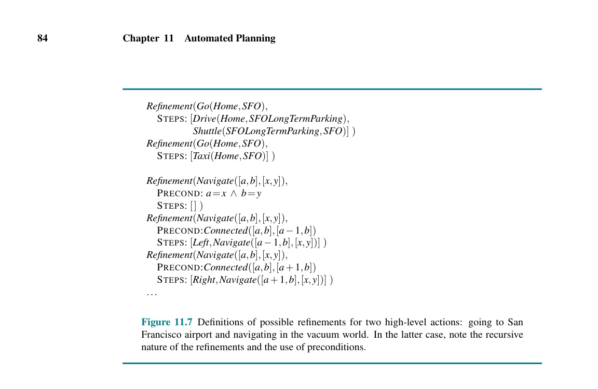
Có thể chỉ ra rằng bộ sưu tập các HLA phù hợp có thể làm cho độ phức tạp thời gian (time complexity) của tìm kiếm mù (blind search) giảm từ mức hàm mũ theo độ sâu giải pháp xuống còn mức tuyến tính (linear) theo độ sâu giải pháp, mặc dù việc thiết kế một bộ sưu tập HLA như vậy bản thân nó có thể là một nhiệm vụ không hề đơn giản. Khi các HLA có nhiều bản triển khai khả thi, sẽ có hai tùy chọn: một là tìm kiếm giữa các bản triển khai để tìm ra một bản hoạt động được, như trong Mục 11.4.2; tùy chọn còn lại là suy luận trực tiếp về các HLA—bất chấp việc có nhiều bản triển khai—như được giải thích trong Mục 11.4.3. Phương pháp thứ hai cho phép suy xuất ra các kế hoạch trừu tượng có thể chứng minh là chính xác (provably correct abstract plans), mà không cần xem xét đến các bản triển khai của chúng.
11.4.2 Tìm kiếm các giải pháp nguyên thủy (Searching for primitive solutions)
Lập kế hoạch HTN thường được diễn đạt với một hành động "cấp cao nhất" (top level) duy nhất gọi là Act, trong đó mục đích là tìm ra một bản triển khai của Act để đạt được mục tiêu. Cách tiếp cận này hoàn toàn mang tính tổng quát. Ví dụ, các vấn đề lập kế hoạch cổ điển (classical planning) có thể được định nghĩa như sau: đối với mỗi hành động nguyên thủy $a_i$, cung cấp một tinh chỉnh của Act với các bước là [a_i, Act]. Điều này tạo ra một định nghĩa đệ quy cho Act cho phép chúng ta bổ sung các hành động. Nhưng chúng ta cần một cách thức nào đó để dừng việc đệ quy lại; chúng ta thực hiện điều đó bằng cách cung cấp thêm một tinh chỉnh nữa cho Act, một tinh chỉnh có một danh sách trống các bước và có một điều kiện tiên quyết bằng với mục tiêu của bài toán. Điều này ngụ ý rằng nếu mục tiêu đã đạt được, thì bản triển khai đúng là không làm gì cả.
Cách tiếp cận này dẫn đến một thuật toán đơn giản: lặp đi lặp lại việc chọn một HLA trong kế hoạch hiện tại và thay thế nó bằng một trong các tinh chỉnh của nó, cho đến khi kế hoạch đạt được mục tiêu. Một bản triển khai khả thi dựa trên tìm kiếm cây theo chiều rộng (breadth-first tree search) được hiển thị trong Hình 11.8. Các kế hoạch được xem xét theo thứ tự độ sâu lồng nhau của các tinh chỉnh, thay vì theo số lượng các bước nguyên thủy. Việc thiết kế một phiên bản tìm kiếm đồ thị (graph-search) của thuật toán cũng như các phiên bản tìm kiếm theo chiều sâu (depth-first) và sâu dần (iterative deepening) là hoàn toàn tương đối đơn giản.
function HIERARCHICAL-SEARCH(problem, hierarchy) returns a solution or failurefrontier ← a FIFO queue with [Act] as the only elementwhile true doif IS-EMPTY(frontier) then return failureplan ← POP(frontier) // chọn kế hoạch nông nhất (shallowest plan) trong frontierhla ← the first HLA in plan, or null if none // HLA đầu tiên trong kế hoạch, hoặc rỗng nếu không cóprefix, suffix ← the action subsequences before and after hla in plan // các chuỗi con hành động trước và sau hla trong kế hoạchoutcome ← RESULT(problem.INITIAL, prefix)if hla is null then // vậy kế hoạch là nguyên thủy và outcome là kết quả của nóif problem.IS-GOAL(outcome) then return planelse for each sequence in REFINEMENTS(hla, outcome, hierarchy) doadd APPEND(prefix, sequence, suffix) to frontier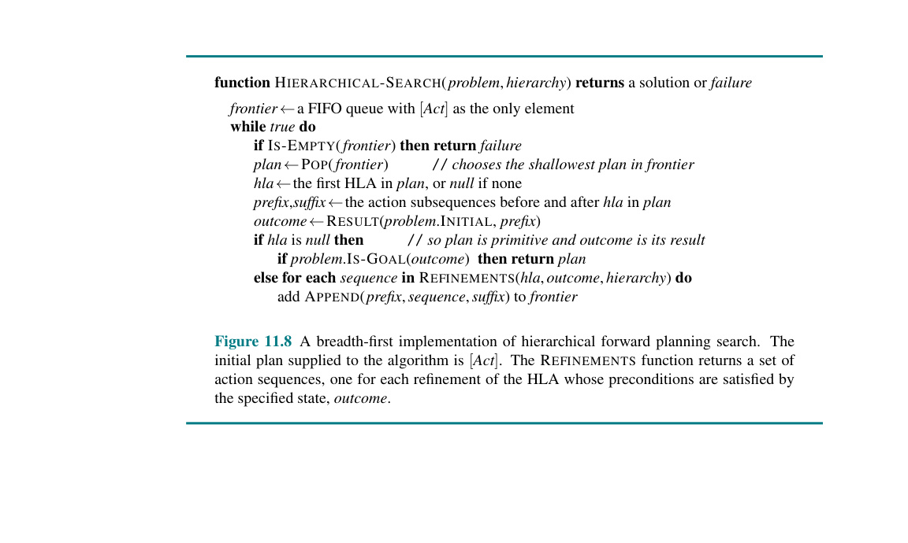
Hình 11.8: Một bản triển khai theo chiều rộng của thuật toán tìm kiếm lập kế hoạch tiến phân cấp. Kế hoạch ban đầu được cung cấp cho thuật toán là
[Act]. HàmREFINEMENTStrả về một tập hợp các chuỗi hành động, trong đó mỗi chuỗi tương ứng với một tinh chỉnh của HLA mà các điều kiện tiên quyết của nó được thỏa mãn bởi trạng thái được chỉ định,outcome(kết quả).
Về bản chất, hình thức tìm kiếm phân cấp này khám phá không gian của các chuỗi tuân thủ các kiến thức có trong thư viện HLA về cách mọi việc cần được thực hiện. Một lượng lớn kiến thức có thể được mã hóa, không chỉ trong các chuỗi hành động được chỉ định ở mỗi tinh chỉnh mà còn trong các điều kiện tiên quyết đối với các tinh chỉnh đó. Đối với một số miền, các bộ lập kế hoạch HTN đã có thể tạo ra các kế hoạch khổng lồ với rất ít việc tìm kiếm. Ví dụ, O-PLAN (Bell và Tate, 1985), một hệ thống kết hợp lập kế hoạch HTN với lập lịch trình (scheduling), đã được sử dụng để phát triển các kế hoạch sản xuất cho Hitachi. Một vấn đề điển hình liên quan đến một dây chuyền sản xuất gồm 350 sản phẩm khác nhau, 35 máy lắp ráp và hơn 2000 thao tác khác nhau. Bộ lập kế hoạch tạo ra một lịch trình 30 ngày với ba ca làm việc 8 giờ mỗi ngày, bao gồm hàng chục triệu bước. Một khía cạnh quan trọng khác của các kế hoạch HTN là, theo định nghĩa, chúng có cấu trúc phân cấp; thường thì điều này khiến chúng trở nên dễ hiểu đối với con người.
Những lợi ích tính toán của tìm kiếm phân cấp có thể được thấy rõ bằng cách xem xét một trường hợp lý tưởng. Giả sử rằng một vấn đề lập kế hoạch có một giải pháp với $d$ hành động nguyên thủy. Đối với một bộ lập kế hoạch tiến, không phân cấp (nonhierarchical, forward state-space planner) với $b$ hành động được phép tại mỗi trạng thái, chi phí là $O(b^d)$, như đã giải thích ở Chương 3. Đối với một bộ lập kế hoạch HTN, hãy giả sử một cấu trúc tinh chỉnh rất đều đặn: mỗi hành động phi nguyên thủy (nonprimitive action) có $r$ tinh chỉnh khả thi, mỗi tinh chỉnh phân rã thành $k$ hành động ở cấp độ thấp hơn tiếp theo. Chúng ta muốn biết có bao nhiêu cây tinh chỉnh (refinement trees) khác nhau mang cấu trúc này. Bây giờ, nếu có $d$ hành động ở cấp độ nguyên thủy, thì số lượng các cấp độ bên dưới thư mục gốc (root) là $\log_k d$, do đó số lượng các nút tinh chỉnh nội bộ (internal refinement nodes) là $1 + k + k^2 + \dots + k^{\log_k d - 1} = (d - 1)/(k - 1)$. Mỗi nút nội bộ có $r$ tinh chỉnh khả thi, vì vậy có $r^{(d-1)/(k-1)}$ cây phân rã khả thi có thể được cấu trúc.
Xem xét công thức này, chúng ta thấy rằng việc giữ $r$ ở mức nhỏ và $k$ ở mức lớn có thể đem lại khoản tiết kiệm chi phí khổng lồ: chúng ta đang lấy căn bậc $k$ của chi phí không phân cấp, nếu $b$ và $r$ có thể so sánh được với nhau. $r$ nhỏ và $k$ lớn đồng nghĩa với việc có một thư viện các HLA với một số lượng nhỏ các tinh chỉnh, trong đó mỗi tinh chỉnh sinh ra một chuỗi hành động dài. Điều này không phải lúc nào cũng khả thi: các chuỗi hành động dài có thể sử dụng xuyên suốt một loạt các bài toán đa dạng là cực kỳ hiếm.
Chìa khóa cho lập kế hoạch HTN là một thư viện kế hoạch (plan library) chứa các phương pháp đã biết để triển khai các hành động cấp cao, phức tạp. Một cách để xây dựng thư viện là học các phương pháp từ kinh nghiệm giải quyết vấn đề. Sau trải nghiệm gian khổ khi xây dựng một kế hoạch từ đầu (from scratch), tác tử có thể lưu kế hoạch đó vào thư viện như một phương pháp để triển khai hành động cấp cao được định nghĩa bởi nhiệm vụ. Bằng cách này, tác tử có thể trở nên ngày càng năng lực hơn theo thời gian khi các phương pháp mới được xây dựng dựa trên nền tảng của các phương pháp cũ. Một khía cạnh quan trọng của quá trình học tập này là khả năng tổng quát hóa (generalize) các phương pháp được xây dựng, loại bỏ chi tiết đặc thù cho phiên bản bài toán (ví dụ: tên của người thợ xây hoặc địa chỉ của mảnh đất) và chỉ giữ lại những yếu tố then chốt của kế hoạch. Đối với chúng ta, dường như khó có thể hình dung được rằng con người có thể có năng lực như hiện tại nếu không có một cơ chế nào đó giống như vậy.
11.4.3 Tìm kiếm các giải pháp trừu tượng (Searching for abstract solutions)
Thuật toán tìm kiếm phân cấp ở phần trước tiến hành tinh chỉnh các hành động cấp cao (HLA) cho đến tận các chuỗi hành động nguyên thủy (primitive action sequences) để xác định xem một kế hoạch có khả thi hay không. Điều này đi ngược lại với lẽ thường: đáng lẽ ra chúng ta phải có khả năng xác định được rằng một kế hoạch cấp cao (high-level plan) gồm hai HLA [Drive(Home, SFOLongTermParking), Shuttle(SFOLongTermParking, SFO)] sẽ đưa ta đến sân bay mà không cần phải xác định một tuyến đường chính xác, không cần chọn điểm đỗ xe, v.v. Giải pháp là viết các mô tả điều kiện tiên quyết-hiệu ứng (precondition-effect descriptions) cho các HLA, giống hệt như cách chúng ta làm với các hành động nguyên thủy. Từ các mô tả này, việc chứng minh một kế hoạch cấp cao đạt được mục tiêu sẽ trở nên dễ dàng. Có thể nói, đây chính là "chén thánh" (holy grail) của lập kế hoạch phân cấp (hierarchical planning), bởi vì nếu chúng ta có thể suy xuất ra một kế hoạch cấp cao được chứng minh là chắc chắn đạt được mục tiêu, hoạt động trong một không gian tìm kiếm nhỏ gồm các hành động cấp cao, thì chúng ta có thể cam kết thực hiện kế hoạch đó và chỉ tập trung vào việc tinh chỉnh từng bước của kế hoạch. Điều này mang lại sự giảm trừ theo cấp số nhân (exponential reduction) mà chúng ta đang tìm kiếm.
Để điều này hoạt động, phải đảm bảo rằng mọi kế hoạch cấp cao "tuyên bố" đạt được mục tiêu (nhờ vào các mô tả của các bước trong kế hoạch) thực tế phải đạt được mục tiêu theo nghĩa đã định nghĩa trước đó: nó phải có ít nhất một bản triển khai (implementation) thực sự đạt được mục tiêu. Thuộc tính này được gọi là thuộc tính tinh chỉnh hướng xuống (downward refinement property) đối với các mô tả HLA.
Việc viết các mô tả HLA thỏa mãn thuộc tính tinh chỉnh hướng xuống về nguyên tắc là dễ dàng: miễn là các mô tả là đúng (true), thì bất kỳ kế hoạch cấp cao nào tuyên bố đạt được mục tiêu thì trên thực tế đều phải làm được như vậy—nếu không, các mô tả đó đang đưa ra những tuyên bố sai lệch về việc các HLA thực sự làm gì. Chúng ta đã thấy cách viết các mô tả đúng cho các HLA có chính xác một bản triển khai; tuy nhiên, vấn đề sẽ phát sinh khi HLA có nhiều bản triển khai. Làm thế nào chúng ta có thể mô tả các hiệu ứng của một hành động có thể được triển khai theo nhiều cách khác nhau?
Một câu trả lời an toàn (ít nhất là đối với các bài toán mà tất cả các điều kiện tiên quyết và mục tiêu đều là khẳng định) là chỉ bao gồm các hiệu ứng khẳng định đạt được bởi mọi bản triển khai của HLA và các hiệu ứng phủ định của bất kỳ bản triển khai nào. Khi đó, thuộc tính tinh chỉnh hướng xuống sẽ được thỏa mãn. Tuy nhiên đáng tiếc là, ngữ nghĩa (semantics) này cho các HLA lại quá bảo thủ.
Hãy xem xét lại HLA Go(Home, SFO), hành động này có hai tinh chỉnh, và để tiện tranh luận, giả sử có một thế giới đơn giản trong đó người ta luôn có thể lái xe đến sân bay và đỗ xe, nhưng việc đi taxi đòi hỏi một điều kiện tiên quyết là Cash (Tiền mặt). Trong trường hợp đó, Go(Home, SFO) không phải lúc nào cũng đưa bạn đến sân bay. Cụ thể, nó thất bại nếu Cash mang giá trị sai, và vì vậy chúng ta không thể đưa At(Agent, SFO) vào như một hiệu ứng của HLA. Điều này không hề hợp lý; nếu tác tử (agent) không có Cash, nó vẫn có thể tự lái xe. Việc yêu cầu một hiệu ứng phải đúng đối với mọi bản triển khai tương đương với việc giả định rằng một ai đó khác—một đối thủ (adversary)—sẽ là người chọn bản triển khai. Cách xử lý này coi các kết quả đa dạng của HLA giống hệt như thể HLA là một hành động không tất định (nondeterministic action). Trong khi đối với trường hợp của chúng ta, chính bản thân tác tử mới là người chọn bản triển khai.
Cộng đồng ngôn ngữ lập trình đã đặt ra thuật ngữ tính không tất định ma quỷ (demonic nondeterminism) cho trường hợp một đối thủ đưa ra các lựa chọn, đối lập với tính không tất định thiên thần (angelic nondeterminism), nơi chính tác tử là người tự đưa ra các lựa chọn. Chúng ta mượn thuật ngữ này để định nghĩa ngữ nghĩa thiên thần (angelic semantics) cho các mô tả HLA.
Khái niệm cơ bản cần thiết để hiểu ngữ nghĩa thiên thần là tập hợp có thể tiếp cận (reachable set) của một HLA: cho một trạng thái $s$, tập hợp có thể tiếp cận của một HLA $h$, viết là $REACH(s, h)$, là tập hợp các trạng thái có thể tiếp cận được bởi bất kỳ bản triển khai nào của HLA. Ý tưởng then chốt là tác tử có thể chọn xem nó sẽ kết thúc ở phần tử nào của tập hợp có thể tiếp cận khi nó thực thi HLA; do đó, một HLA có nhiều tinh chỉnh sẽ "mạnh mẽ" hơn so với cùng một HLA có ít tinh chỉnh. Chúng ta cũng có thể định nghĩa tập hợp có thể tiếp cận của một chuỗi các HLA. Ví dụ, tập hợp có thể tiếp cận của một chuỗi [h1, h2] là hợp (union) của tất cả các tập hợp có thể tiếp cận thu được bằng cách áp dụng $h_2$ trong từng trạng thái thuộc tập hợp có thể tiếp cận của $h_1$:
$REACH(s, [h1, h2]) = \bigcup_{s' \in REACH(s, h1)} REACH(s', h2)$
Dựa trên các định nghĩa này, một kế hoạch cấp cao—một chuỗi các HLA—đạt được mục tiêu nếu tập hợp có thể tiếp cận của nó giao (intersects) với tập hợp các trạng thái mục tiêu. (Hãy so sánh điều này với điều kiện khắt khe hơn nhiều của ngữ nghĩa ma quỷ, nơi mọi thành viên của tập hợp có thể tiếp cận đều phải là một trạng thái mục tiêu). Ngược lại, nếu tập hợp có thể tiếp cận không giao với mục tiêu, thì kế hoạch đó chắc chắn không hoạt động. Hình 11.9 minh họa những ý tưởng này.
(Hình ảnh minh họa các tập hợp có thể tiếp cận)
Hình 11.9: Các ví dụ sơ đồ về các tập hợp có thể tiếp cận (reachable sets). Tập hợp các trạng thái mục tiêu được tô màu tím. Các mũi tên màu đen và màu đỏ biểu thị các bản triển khai khả thi lần lượt của $h_1$ và $h_2$. (a) Tập hợp có thể tiếp cận của một HLA $h_1$ trong một trạng thái $s$. (b) Tập hợp có thể tiếp cận cho chuỗi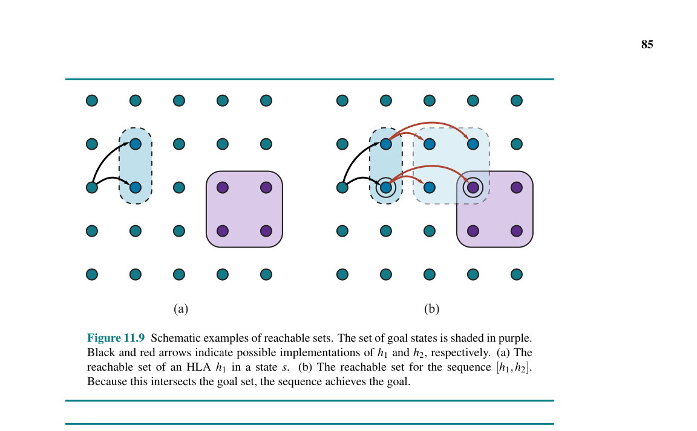
[h1, h2]. Vì tập hợp này giao với tập hợp mục tiêu, chuỗi hành động này đạt được mục tiêu.
Khái niệm về các tập hợp có thể tiếp cận mang lại một thuật toán đơn giản: tìm kiếm giữa các kế hoạch cấp cao, tìm kiếm một kế hoạch có tập hợp có thể tiếp cận giao với mục tiêu; một khi điều đó xảy ra, thuật toán có thể cam kết theo đuổi kế hoạch trừu tượng đó, biết rằng nó hoạt động, và tập trung vào việc tinh chỉnh kế hoạch sâu hơn.
Chúng ta sẽ quay lại các vấn đề về thuật toán sau; hiện tại hãy xem xét cách thức để biểu diễn các hiệu ứng của một HLA—tức là tập hợp có thể tiếp cận cho mỗi trạng thái ban đầu khả thi. Một hành động nguyên thủy có thể thiết lập một fluent thành đúng hoặc sai hoặc giữ nguyên nó. Một HLA dưới ngữ nghĩa thiên thần có thể làm nhiều hơn thế: nó có thể kiểm soát giá trị của một fluent, thiết lập nó thành đúng hoặc sai tùy thuộc vào bản triển khai nào được chọn. Do đó, một HLA có thể có 9 tác động khác nhau lên một fluent: nếu biến bắt đầu là đúng, nó có thể luôn giữ nó đúng, luôn làm nó sai, hoặc có quyền lựa chọn; nếu fluent bắt đầu là sai, nó có thể luôn giữ nó sai, luôn làm nó đúng, hoặc có quyền lựa chọn; và ba lựa chọn cho cả hai trường hợp này có thể được kết hợp một cách tùy ý, tạo thành 9.
Về mặt ký hiệu, điều này hơi mang tính thử thách. Chúng ta sẽ sử dụng ngôn ngữ của danh sách thêm (add lists) và danh sách xóa (delete lists) cùng với ký hiệu ~ (dấu ngã) để mang ý nghĩa "có khả năng, nếu tác tử chọn như vậy" (possibly, if the agent so chooses). Do đó, hiệu ứng +~A có nghĩa là "có khả năng thêm A" (possibly add A), tức là để nguyên A không đổi hoặc làm cho nó đúng. Tương tự, -~A có nghĩa là "có khả năng xóa A" và ±~A có nghĩa là "có khả năng thêm hoặc xóa A".
Ví dụ, HLA Go(Home, SFO), với hai tinh chỉnh được hiển thị trong Hình 11.7, có khả năng xóa Cash (nếu tác tử quyết định đi taxi), vì vậy nó nên có hiệu ứng -~Cash. Qua đây, chúng ta thấy rằng các mô tả của các HLA có thể được suy xuất từ các mô tả về các tinh chỉnh của chúng. Bây giờ, giả sử chúng ta có các lược đồ sau cho các HLA $h_1$ và $h_2$:
Action(h1, PRECOND: ¬A, EFFECT: A ∧ -~B)
Action(h2, PRECOND: ¬B, EFFECT: +~A ∧ ±~C)
Nghĩa là, $h_1$ thêm A và có khả năng xóa B, trong khi $h_2$ có khả năng thêm A và có toàn quyền kiểm soát đối với C. Bây giờ, nếu chỉ có B là đúng trong trạng thái ban đầu và mục tiêu là A ∧ C thì chuỗi [h1, h2] sẽ đạt được mục tiêu: chúng ta chọn một bản triển khai của $h_1$ để làm cho B thành sai, sau đó chọn một bản triển khai của $h_2$ để giữ cho A đúng và làm cho C đúng.
Các cuộc thảo luận trước đó giả định rằng các hiệu ứng của một HLA—tập hợp có thể tiếp cận cho bất kỳ trạng thái ban đầu nào—có thể được mô tả một cách chính xác bằng cách mô tả hiệu ứng trên từng fluent. Sẽ rất tuyệt nếu điều này luôn luôn đúng, nhưng trong nhiều trường hợp, chúng ta chỉ có thể mô tả xấp xỉ các hiệu ứng bởi vì một HLA có thể có vô số bản triển khai và có thể tạo ra các tập hợp có thể tiếp cận có đường viền ngoằn ngoèo tùy ý (arbitrarily wiggly reachable sets)—khá giống với vấn đề trạng thái niềm tin ngoằn ngoèo được minh họa trong Hình 7.21 ở trang 261.
Ví dụ, chúng ta đã nói rằng Go(Home, SFO) có khả năng xóa Cash; nó cũng có khả năng thêm At(Car, SFOLongTermParking); nhưng nó không thể làm cả hai—thực tế, nó phải làm chính xác một trong hai. Cũng giống như với các trạng thái niềm tin, chúng ta có thể cần phải viết các mô tả xấp xỉ. Chúng ta sẽ sử dụng hai loại xấp xỉ: một mô tả lạc quan (optimistic description) $REACH^+(s, h)$ của một HLA $h$ có thể phóng đại mức độ của tập hợp có thể tiếp cận, trong khi một mô tả bi quan (pessimistic description) $REACH^-(s, h)$ có thể đánh giá thấp (thu hẹp) tập hợp có thể tiếp cận. Do đó, chúng ta có:
$REACH^-(s, h) \subseteq REACH(s, h) \subseteq REACH^+(s, h)$
Với các mô tả xấp xỉ, quá trình kiểm tra xem một kế hoạch có đạt được mục tiêu hay không cần được sửa đổi đôi chút. Nếu tập hợp có thể tiếp cận lạc quan của kế hoạch không giao với mục tiêu, thì kế hoạch đó không hoạt động; nếu tập hợp có thể tiếp cận bi quan giao với mục tiêu, thì kế hoạch đó hoạt động (Hình 11.10(a)). Với các mô tả chính xác, một kế hoạch hoặc hoạt động hoặc không, nhưng với các mô tả xấp xỉ, có một vùng trung gian: nếu tập hợp lạc quan giao với mục tiêu nhưng tập hợp bi quan thì không, thì chúng ta không thể xác định liệu kế hoạch đó có hoạt động hay không (Hình 11.10(b)). Khi tình huống này phát sinh, sự không chắc chắn có thể được giải quyết bằng cách tinh chỉnh kế hoạch thêm nữa. Đây là một tình huống rất phổ biến trong tư duy con người. Ví dụ, trong việc lập kế hoạch cho kỳ nghỉ hai tuần ở Hawaii đã đề cập ở trên, một người có thể đề xuất dành hai ngày trên mỗi hòn đảo trong số bảy hòn đảo. Sự cẩn trọng sẽ chỉ ra rằng kế hoạch đầy tham vọng này cần được tinh chỉnh bằng cách bổ sung các chi tiết về phương tiện di chuyển giữa các hòn đảo.
(Hình ảnh minh họa giao điểm của tập hợp xấp xỉ)
Hình 11.10: Đạt được mục tiêu đối với các kế hoạch cấp cao với các mô tả xấp xỉ. Tập hợp các trạng thái mục tiêu được tô màu tím. Đối với mỗi kế hoạch, các tập hợp có thể tiếp cận bi quan (đường liền nét, màu xanh lam nhạt) và lạc quan (đường nét đứt, màu xanh lá nhạt) được hiển thị. (a) Kế hoạch được biểu thị bằng mũi tên màu đen chắc chắn đạt được mục tiêu, trong khi kế hoạch được biểu thị bằng mũi tên màu đỏ chắc chắn không. (b) Một kế hoạch có khả năng đạt được mục tiêu (tập hợp có thể tiếp cận lạc quan giao với mục tiêu) nhưng không nhất thiết phải đạt được mục tiêu (tập hợp có thể tiếp cận bi quan không giao với mục tiêu). Kế hoạch này cần được tinh chỉnh thêm để xác định xem nó có thực sự đạt được mục tiêu hay không.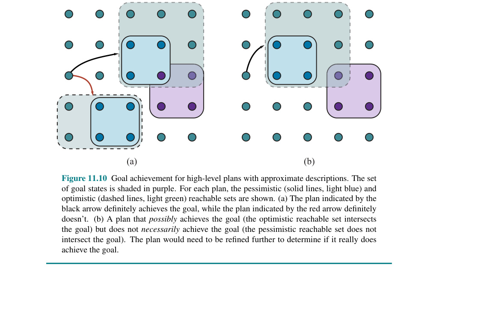
Một thuật toán cho lập kế hoạch phân cấp với các mô tả thiên thần xấp xỉ được trình bày trong Hình 11.11. Để đơn giản, chúng ta vẫn giữ nguyên sơ đồ tổng thể giống như được sử dụng trước đó trong Hình 11.8, tức là một tìm kiếm theo chiều rộng (breadth-first search) trong không gian các tinh chỉnh. Như vừa giải thích, thuật toán có thể phát hiện các kế hoạch sẽ hoạt động và không hoạt động bằng cách kiểm tra các phần giao nhau của các tập hợp có thể tiếp cận lạc quan và bi quan với mục tiêu.
Khi tìm thấy một kế hoạch trừu tượng khả thi, thuật toán sẽ phân rã bài toán gốc thành các bài toán con (subproblems), một bài toán con tương ứng cho mỗi bước của kế hoạch. Trạng thái ban đầu và mục tiêu cho mỗi bài toán con được thu thập bằng cách hồi quy (regressing) một trạng thái mục tiêu chắc-chắn-tiếp-cận-được (guaranteed-reachable goal state) thông qua các lược đồ hành động cho từng bước của kế hoạch. Hình 11.9(b) minh họa ý tưởng cơ bản: trạng thái được khoanh tròn bên phải là trạng thái mục tiêu chắc-chắn-tiếp-cận-được, và trạng thái được khoanh tròn bên trái là mục tiêu trung gian thu được bằng cách hồi quy mục tiêu thông qua hành động cuối cùng.
function ANGELIC-SEARCH(problem, hierarchy, initialPlan) returns a solution or failfrontier ← a FIFO queue with initialPlan as the only elementwhile true doif IS-EMPTY?(frontier) then return failplan ← POP(frontier) // chọn nút nông nhất trong frontierif REACH+(problem.INITIAL, plan) intersects problem.GOAL thenif plan is primitive then return plan // REACH+ là chính xác đối với các kế hoạch nguyên thủyguaranteed ← REACH-(problem.INITIAL, plan) ∩ problem.GOALif guaranteed ≠ {} and MAKING-PROGRESS(plan, initialPlan) thenfinalState ← any element of guaranteedreturn DECOMPOSE(hierarchy, problem.INITIAL, plan, finalState)hla ← some HLA in planprefix, suffix ← the action subsequences before and after hla in planoutcome ← RESULT(problem.INITIAL, prefix)for each sequence in REFINEMENTS(hla, outcome, hierarchy) doadd APPEND(prefix, sequence, suffix) to frontier
function DECOMPOSE(hierarchy, s0, plan, sf) returns a solutionsolution ← an empty planwhile plan is not empty doaction ← REMOVE-LAST(plan)si ← a state in REACH-(s0, plan) such that sf ∈ REACH-(si, action)problem ← a problem with INITIAL = si and GOAL = sfsolution ← APPEND(ANGELIC-SEARCH(problem, hierarchy, action), solution)sf ← sireturn solution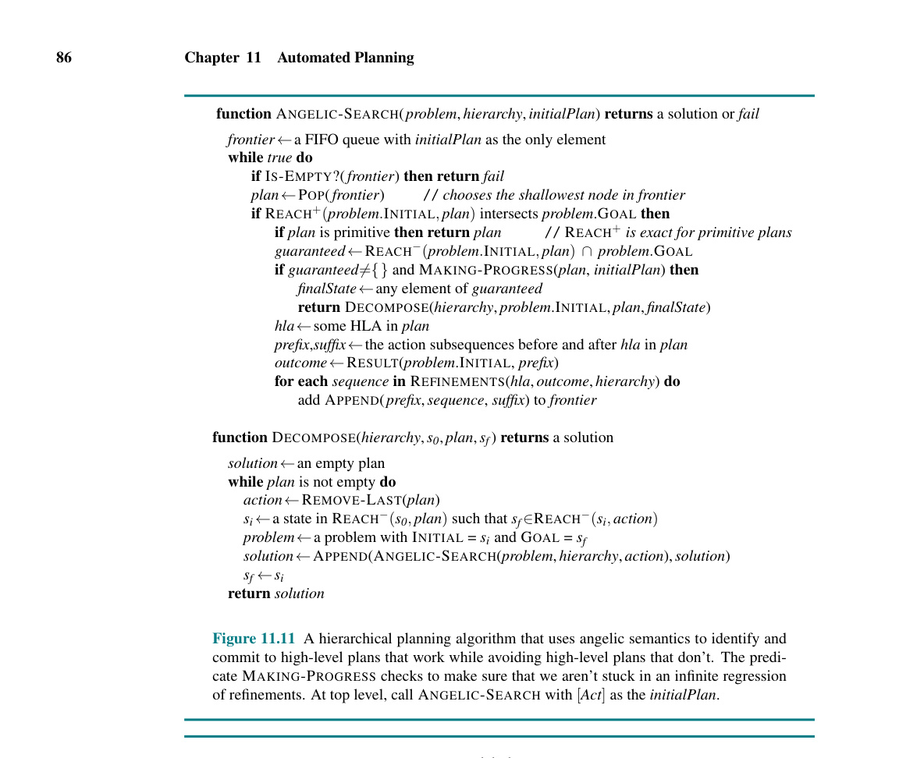
Hình 11.11: Một thuật toán lập kế hoạch phân cấp sử dụng ngữ nghĩa thiên thần để xác định và cam kết với các kế hoạch cấp cao hoạt động được, đồng thời tránh các kế hoạch cấp cao không hoạt động. Vị từ
MAKING-PROGRESS(Tạo Tiến độ) kiểm tra để đảm bảo rằng chúng ta không bị kẹt trong một vòng lặp hồi quy vô hạn của các tinh chỉnh. Ở cấp độ cao nhất, hãy gọiANGELIC-SEARCHvới[Act]làminitialPlan.
Khả năng cam kết với hoặc loại bỏ các kế hoạch cấp cao có thể mang lại cho ANGELIC-SEARCH một lợi thế tính toán đáng kể so với HIERARCHICAL-SEARCH, bản thân nó lại có lợi thế lớn so với BREADTH-FIRST-SEARCH cơ bản cũ kỹ. Ví dụ, hãy xem xét việc dọn dẹp một thế giới máy hút bụi lớn bao gồm một hệ thống các căn phòng nối với nhau bằng các hành lang hẹp, nơi mỗi căn phòng là một hình chữ nhật $w \times h$ các ô vuông. Việc có một HLA cho điều hướng Navigate và một HLA khác để dọn dẹp toàn bộ phòng CleanWholeRoom là hoàn toàn hợp lý. Vì có 5 hành động nguyên thủy, nên chi phí cho thuật toán tìm kiếm theo chiều rộng tăng trưởng thành $5^d$, trong đó $d$ là độ dài của giải pháp ngắn nhất; thuật toán thậm chí không thể quản lý nổi hai căn phòng có kích thước $3 \times 3$. Thuật toán HIERARCHICAL-SEARCH hiệu quả hơn, nhưng vẫn gặp phải sự tăng trưởng theo cấp số nhân vì nó phải thử mọi cách thức dọn dẹp tuân thủ theo hệ thống phân cấp. Ngược lại, thuật toán ANGELIC-SEARCH mở rộng quy mô xấp xỉ tuyến tính theo số lượng ô vuông—nó cam kết tuân theo một chuỗi cấp cao hiệu quả về các bước dọn phòng và điều hướng, đồng thời cắt tỉa đi các tùy chọn khác.
Việc dọn dẹp một dãy các căn phòng bằng cách dọn dẹp lần lượt từng căn phòng không phải là thứ gì quá cao siêu: con người thấy dễ dàng vì cấu trúc phân cấp của nhiệm vụ. Khi chúng ta xem xét sự chật vật của con người khi phải giải các câu đố nhỏ như 8-puzzle, có vẻ như khả năng giải quyết các vấn đề phức tạp của con người không bắt nguồn từ việc xem xét các tổ hợp (combinatorics), mà đúng hơn là từ kỹ năng trừu tượng hóa và phân rã các bài toán để loại bỏ sự bùng nổ tổ hợp đó.
Cách tiếp cận thiên thần có thể được mở rộng để tìm ra các giải pháp có chi phí thấp nhất (least-cost solutions) bằng cách khái quát hóa khái niệm về tập hợp có thể tiếp cận. Thay vì một trạng thái là có thể tiếp cận hay không, mỗi trạng thái sẽ có một chi phí cho cách hiệu quả nhất để đạt được nó. (Chi phí là vô cực đối với các trạng thái không thể tiếp cận). Các mô tả lạc quan và bi quan sẽ giới hạn các mức chi phí này. Bằng cách này, tìm kiếm thiên thần có thể tìm ra các kế hoạch trừu tượng tối ưu (provably optimal abstract plans) mà không cần phải xem xét các bản triển khai của chúng.
Cách tiếp cận tương tự có thể được sử dụng để có được các thuật toán tìm kiếm nhìn trước phân cấp (hierarchical look-ahead search) trực tuyến hiệu quả. Theo một khía cạnh nào đó, các thuật toán như vậy phản ánh các khía cạnh trong tư duy của con người đối với các nhiệm vụ như lập kế hoạch cho một kỳ nghỉ ở Hawaii—việc xem xét các lựa chọn thay thế ban đầu được thực hiện ở mức độ trừu tượng trên các khoảng thời gian dài; một số phần của kế hoạch được để ở trạng thái khá trừu tượng cho đến tận thời điểm thực thi, chẳng hạn như làm thế nào để tận hưởng hai ngày lười biếng trên đảo Moloka'i, trong khi các phần khác được lên kế hoạch chi tiết, chẳng hạn như các chuyến bay cần thực hiện và chỗ ở cần đặt chỗ—bởi vì nếu không có những tinh chỉnh sau này, sẽ không có gì đảm bảo rằng kế hoạch là khả thi.
11.5 Lập kế hoạch và Hành động trong Môi trường Không tất định (Planning and Acting in Nondeterministic Domains)
Trong mục này, chúng ta sẽ mở rộng lập kế hoạch để xử lý các môi trường có thể quan sát một phần (partially observable), không tất định (nondeterministic) và chưa biết (unknown). Các khái niệm cơ bản phản ánh những khái niệm trong Chương 4, nhưng có những khác biệt phát sinh từ việc sử dụng các biểu diễn phân tích (factored representations) thay vì các biểu diễn nguyên tử (atomic representations). Điều này ảnh hưởng đến cách chúng ta biểu diễn khả năng hành động và quan sát của tác tử, cũng như cách chúng ta biểu diễn các trạng thái niềm tin (belief states)—tập hợp các trạng thái vật lý khả thi mà tác tử có thể đang ở trong đó—đối với các môi trường có thể quan sát một phần. Chúng ta cũng có thể tận dụng nhiều phương pháp độc lập với miền (domain-independent methods) đã được đưa ra trong Mục 11.3 để tính toán các hàm tự suy tìm kiếm (search heuristics).
Chúng ta sẽ đề cập đến lập kế hoạch không cần cảm biến (sensorless planning) (hay còn gọi là lập kế hoạch tuân thủ - conformant planning) cho các môi trường không có quan sát; lập kế hoạch dự phòng (contingency planning) cho các môi trường có thể quan sát một phần và không tất định; và lập kế hoạch trực tuyến (online planning) cùng với lập kế hoạch lại (replanning) cho các môi trường chưa biết. Điều này sẽ cho phép chúng ta giải quyết các vấn đề có quy mô lớn trong thế giới thực.
Hãy xem xét vấn đề sau: cho trước một cái ghế và một cái bàn, mục tiêu là làm cho chúng đồng bộ với nhau—nghĩa là có cùng màu sắc. Trong trạng thái ban đầu, chúng ta có hai lon sơn, nhưng màu sắc của sơn và đồ nội thất đều chưa được biết. Ban đầu, chỉ có cái bàn là nằm trong tầm nhìn (field of view) của tác tử:
Init(Object(Table) ∧ Object(Chair) ∧ Can(C1) ∧ Can(C2) ∧ InView(Table))Goal(Color(Chair, c) ∧ Color(Table, c))
Có hai hành động: mở nắp một lon sơn và sơn một vật thể bằng cách sử dụng sơn từ một lon đã mở.
Action(RemoveLid(can),PRECOND: Can(can)EFFECT: Open(can))
Action(Paint(x, can),PRECOND: Object(x) ∧ Can(can) ∧ Color(can, c) ∧ Open(can)EFFECT: Color(x, c))
Các lược đồ hành động (action schemas) khá đơn giản, ngoại trừ một điểm: các điều kiện tiên quyết (preconditions) và hiệu ứng (effects) lúc này có thể chứa các biến không thuộc danh sách biến của hành động. Nghĩa là, Paint(x, can) không đề cập đến biến c, vốn đại diện cho màu của sơn trong lon. Trong trường hợp có thể quan sát toàn phần (fully observable), điều này không được phép—chúng ta sẽ phải đặt tên cho hành động là Paint(x, can, c). Nhưng trong trường hợp có thể quan sát một phần, chúng ta có thể biết hoặc không biết màu sắc bên trong lon là gì.
Để giải quyết một vấn đề có thể quan sát một phần, tác tử sẽ phải suy luận về các nhận thức (percepts) mà nó sẽ thu được khi thực thi kế hoạch. Nhận thức sẽ được cung cấp bởi các cảm biến (sensors) của tác tử khi nó thực sự hành động, nhưng khi đang lập kế hoạch, nó sẽ cần một mô hình của các cảm biến đó. Trong Chương 4, mô hình này được cho bởi một hàm, PERCEPT(s). Đối với việc lập kế hoạch, chúng ta mở rộng PDDL bằng một loại lược đồ mới, lược đồ nhận thức (percept schema):
Percept(Color(x, c), PRECOND: Object(x) ∧ InView(x))Percept(Color(can, c), PRECOND: Can(can) ∧ InView(can) ∧ Open(can))
Lược đồ đầu tiên chỉ ra rằng bất cứ khi nào một vật thể nằm trong tầm nhìn, tác tử sẽ nhận thức được màu sắc của vật thể (nghĩa là, đối với vật thể x, tác tử sẽ biết được giá trị chân lý của Color(x, c) cho tất cả các c). Lược đồ thứ hai chỉ ra rằng nếu một lon sơn đang mở nằm trong tầm nhìn, thì tác tử sẽ nhận thức được màu sắc của sơn trong lon. Bởi vì không có các sự kiện ngoại sinh (exogenous events) trong thế giới này, màu sắc của một vật thể sẽ giữ nguyên, ngay cả khi nó không được nhận thức, cho đến khi tác tử thực hiện một hành động để thay đổi màu sắc của vật thể đó. Tất nhiên, tác tử sẽ cần một hành động để đưa các vật thể (từng cái một) vào tầm nhìn:
Action(LookAt(x),PRECOND: InView(y) ∧ (x ≠ y)EFFECT: InView(x) ∧ ¬InView(y))
Đối với một môi trường có thể quan sát toàn phần, chúng ta sẽ có một lược đồ Percept không có điều kiện tiên quyết cho mỗi fluent. Mặt khác, một tác tử không có cảm biến (sensorless agent) thì hoàn toàn không có bất kỳ lược đồ Percept nào. Lưu ý rằng ngay cả một tác tử không cảm biến cũng có thể giải quyết được bài toán sơn màu. Một giải pháp là mở một lon sơn bất kỳ và sơn nó lên cả cái ghế và cái bàn, qua đó ép buộc chúng phải có cùng màu (mặc dù tác tử không biết màu đó là gì).
Một tác tử lập kế hoạch dự phòng (contingent planning agent) có cảm biến có thể tạo ra một kế hoạch tốt hơn. Đầu tiên, nhìn vào cái bàn và cái ghế để biết màu sắc của chúng; nếu chúng đã giống nhau rồi thì kế hoạch hoàn tất. Nếu không, hãy nhìn vào các lon sơn; nếu sơn trong một lon có cùng màu với một món đồ nội thất, thì hãy dùng sơn đó để sơn món đồ còn lại. Nếu không, sơn cả hai món đồ bằng màu bất kỳ.
Cuối cùng, một tác tử lập kế hoạch trực tuyến (online planning agent) ban đầu có thể tạo ra một kế hoạch dự phòng với ít nhánh hơn—có lẽ bỏ qua khả năng không có lon sơn nào khớp với bất kỳ đồ nội thất nào—và giải quyết các vấn đề khi chúng phát sinh bằng cách lập kế hoạch lại (replanning). Nó cũng có thể xử lý tính không chính xác của các lược đồ hành động của mình. Trong khi một bộ lập kế hoạch dự phòng (contingent planner) đơn thuần giả định rằng các hiệu ứng của một hành động luôn thành công—rằng việc sơn cái ghế sẽ hoàn thành công việc—thì một tác tử lập kế hoạch lại sẽ kiểm tra kết quả và đưa ra một kế hoạch bổ sung để khắc phục bất kỳ thất bại bất ngờ nào, chẳng hạn như một khu vực chưa được sơn hoặc màu gốc vẫn còn lộ ra.
Trong thế giới thực, các tác tử sử dụng kết hợp nhiều phương pháp. Các nhà sản xuất ô tô bán lốp dự phòng và túi khí, vốn là những hiện thân vật lý của các nhánh kế hoạch dự phòng được thiết kế để xử lý các sự cố thủng lốp hay va chạm. Mặt khác, hầu hết những người lái xe ô tô không bao giờ nghĩ đến những khả năng này; khi một vấn đề phát sinh, họ phản ứng giống như những tác tử lập kế hoạch lại. Nhìn chung, các tác tử chỉ lập kế hoạch cho các tình huống dự phòng có hậu quả nghiêm trọng và có xác suất xảy ra không hề nhỏ. Do đó, một người lái xe đang cân nhắc một chuyến đi qua sa mạc Sahara nên lập các kế hoạch dự phòng rõ ràng cho sự cố hỏng hóc, trong khi một chuyến đi đến siêu thị lại ít cần đến việc lập kế hoạch trước. Tiếp theo, chúng ta sẽ xem xét chi tiết từng phương pháp trong số ba phương pháp này.
11.5.1 Lập kế hoạch không cần cảm biến (Sensorless planning)
Mục 4.4.1 (trang 144) đã giới thiệu ý tưởng cơ bản về việc tìm kiếm trong không không gian trạng thái niềm tin (belief-state space) để tìm giải pháp cho các vấn đề không có cảm biến. Việc chuyển đổi một bài toán lập kế hoạch không cần cảm biến thành một bài toán lập kế hoạch trạng thái niềm tin diễn ra theo cách rất giống như trong Mục 4.4.1; điểm khác biệt chính là mô hình chuyển tiếp vật lý cơ sở (underlying physical transition model) được biểu diễn bằng một tập hợp các lược đồ hành động, và trạng thái niềm tin có thể được biểu diễn bằng một công thức logic thay vì một tập hợp các trạng thái được liệt kê tường minh. Chúng ta giả định rằng vấn đề lập kế hoạch cơ sở là tất định (deterministic).
Trạng thái niềm tin ban đầu cho bài toán sơn màu không cần cảm biến có thể bỏ qua các fluent InView bởi vì tác tử không có cảm biến. Hơn nữa, chúng ta xem các sự kiện không thay đổi Object(Table) ∧ Object(Chair) ∧ Can(C1) ∧ Can(C2) là điều hiển nhiên vì chúng luôn đúng trong mọi trạng thái niềm tin. Tác tử không biết màu sắc của các lon sơn hay các vật thể, hoặc không biết các lon sơn đang mở hay đang đóng, nhưng nó biết rằng các vật thể và các lon sơn đều có màu sắc: ∀x ∃c Color(x, c). Sau khi Skolem hóa (Skolemizing - xem Mục 9.5.1), chúng ta thu được trạng thái niềm tin ban đầu:
b0 = Color(x, C(x))
Trong lập kế hoạch cổ điển (classical planning), nơi giả định thế giới đóng (closed-world assumption) được áp dụng, chúng ta sẽ giả định rằng bất kỳ fluent nào không được đề cập trong một trạng thái đều mang giá trị sai, nhưng trong lập kế hoạch không cần cảm biến (và có thể quan sát một phần), chúng ta phải chuyển sang một giả định thế giới mở (open-world assumption), trong đó các trạng thái chứa cả fluent khẳng định và phủ định, và nếu một fluent không xuất hiện, thì giá trị của nó là chưa biết (unknown). Do đó, trạng thái niềm tin tương ứng chính xác với tập hợp các thế giới khả thi thỏa mãn công thức đó. Với trạng thái niềm tin ban đầu này, chuỗi hành động sau đây là một giải pháp:
[RemoveLid(Can1), Paint(Chair, Can1), Paint(Table, Can1)]
Bây giờ, chúng tôi chỉ ra cách phát triển (progress) trạng thái niềm tin qua chuỗi hành động để cho thấy rằng trạng thái niềm tin cuối cùng thỏa mãn mục tiêu.
Đầu tiên, lưu ý rằng trong một trạng thái niềm tin $b$ cho trước, tác tử có thể xem xét bất kỳ hành động nào mà các điều kiện tiên quyết của nó được thỏa mãn bởi $b$. (Các hành động khác không thể được sử dụng vì mô hình chuyển tiếp không định nghĩa các hiệu ứng của các hành động có thể có các điều kiện tiên quyết không được thỏa mãn). Theo Phương trình (4.4) (trang 145), công thức tổng quát để cập nhật trạng thái niềm tin $b$ cho trước một hành động khả thi $a$ trong một thế giới tất định như sau:
$b' = RESULT(b, a) = {s' : s' = RESULTP(s, a) \text{ and } s \in b}$
Trong đó RESULTP định nghĩa mô hình chuyển tiếp vật lý (physical transition model). Tạm thời, chúng ta giả định rằng trạng thái niềm tin ban đầu luôn là một hội của các literal (conjunction of literals), tức là một công thức 1-CNF. Để xây dựng trạng thái niềm tin mới $b'$, chúng ta phải xem xét điều gì xảy ra với mỗi literal $\ell$ trong từng trạng thái vật lý $s$ thuộc $b$ khi hành động $a$ được áp dụng. Đối với các literal mà giá trị chân lý (truth value) của nó đã được biết trong $b$, giá trị chân lý trong $b'$ được tính toán từ giá trị hiện tại cùng với danh sách thêm (add list) và danh sách xóa (delete list) của hành động. (Ví dụ, nếu $\ell$ nằm trong danh sách xóa của hành động, thì $\neg\ell$ được thêm vào $b'$). Còn đối với một literal mà giá trị chân lý của nó chưa được biết trong $b$ thì sao? Có ba trường hợp:
Do đó, chúng ta thấy rằng việc tính toán $b'$ gần như hoàn toàn giống với trường hợp có thể quan sát được, vốn đã được chỉ định bởi Phương trình (11.1) ở trang 363:
$b' = RESULT(b, a) = (b - DEL(a)) \cup ADD(a)$
Chúng ta không thể hoàn toàn sử dụng ngữ nghĩa tập hợp (set semantics) bởi vì (1) chúng ta phải đảm bảo rằng $b'$ không chứa cả $\ell$ và $\neg\ell$, và (2) các nguyên tử (atoms) có thể chứa các biến chưa được liên kết (unbound variables). Nhưng nó vẫn đúng trong trường hợp RESULT(b, a) được tính bằng cách bắt đầu với $b$, thiết lập bất kỳ nguyên tử nào xuất hiện trong DEL(a) thành sai, và thiết lập bất kỳ nguyên tử nào xuất hiện trong ADD(a) thành đúng. Ví dụ, nếu chúng ta áp dụng RemoveLid(Can1) vào trạng thái niềm tin ban đầu $b_0$, chúng ta thu được:
b1 = Color(x, C(x)) ∧ Open(Can1)
Khi chúng ta áp dụng hành động Paint(Chair, Can1), điều kiện tiên quyết Color(Can1, c) được thỏa mãn bởi literal Color(x, C(x)) với sự liên kết (binding) {x/Can1, c/C(Can1)} và trạng thái niềm tin mới là:
b2 = Color(x, C(x)) ∧ Open(Can1) ∧ Color(Chair, C(Can1))
Cuối cùng, chúng ta áp dụng hành động Paint(Table, Can1) để thu được:
b3 = Color(x, C(x)) ∧ Open(Can1) ∧ Color(Chair, C(Can1)) ∧ Color(Table, C(Can1))
Trạng thái niềm tin cuối cùng thỏa mãn mục tiêu, Color(Table, c) ∧ Color(Chair, c), với biến c được liên kết với C(Can1).
Phân tích trước đó về quy tắc cập nhật đã cho thấy một sự thật rất quan trọng: họ các trạng thái niềm tin được định nghĩa là các hội của các literal thì đóng (closed) dưới các bản cập nhật được định nghĩa bởi các lược đồ hành động PDDL. Nghĩa là, nếu trạng thái niềm tin bắt đầu như một hội của các literal, thì bất kỳ sự cập nhật nào cũng sẽ sinh ra một hội của các literal. Điều đó có nghĩa là trong một thế giới có $n$ fluent, bất kỳ trạng thái niềm tin nào cũng có thể được biểu diễn bằng một hội có kích thước $O(n)$. Đây là một kết quả rất đáng mừng, xét đến việc có $2^n$ trạng thái trong thế giới. Nó cho biết chúng ta có thể biểu diễn một cách súc tích tất cả các tập con của $2^n$ trạng thái đó mà chúng ta sẽ cần. Hơn nữa, quá trình kiểm tra các trạng thái niềm tin xem chúng là tập con hay tập cha của các trạng thái niềm tin đã được ghé thăm trước đó cũng rất dễ dàng, ít nhất là trong trường hợp mệnh đề (propositional case).
Tuy nhiên, có một nhược điểm trong viễn cảnh tươi đẹp này là nó chỉ hoạt động đối với các lược đồ hành động có cùng một hiệu ứng cho tất cả các trạng thái mà điều kiện tiên quyết của chúng được thỏa mãn. Chính đặc tính này cho phép việc bảo tồn biểu diễn trạng thái niềm tin 1-CNF. Ngay khi hiệu ứng có thể phụ thuộc vào trạng thái, các sự phụ thuộc sẽ được đưa vào giữa các fluent, và đặc tính 1-CNF sẽ bị mất.
Lấy ví dụ, hãy xem xét thế giới máy hút bụi đơn giản được định nghĩa trong Mục 3.2.1. Đặt các fluent là AtL và AtR cho vị trí của robot, và CleanL và CleanR cho trạng thái của các ô vuông. Theo định nghĩa của bài toán, hành động hút bụi (Suck) không có điều kiện tiên quyết—nó luôn có thể được thực hiện. Sự khó khăn ở đây là hiệu ứng của nó phụ thuộc vào vị trí của robot: khi robot ở vị trí AtL, kết quả là CleanL, nhưng khi nó ở vị trí AtR, kết quả là CleanR. Đối với những hành động như vậy, các lược đồ hành động của chúng ta sẽ cần thêm một thành phần mới: hiệu ứng có điều kiện (conditional effect). Chúng có cú pháp là “when condition: effect” (khi [điều kiện]: [hiệu ứng]), trong đó condition là một công thức logic để đối chiếu với trạng thái hiện tại, và effect là một công thức mô tả trạng thái kết quả. Đối với thế giới máy hút bụi:
Action(Suck, EFFECT: when AtL: CleanL ∧ when AtR: CleanR)
Khi áp dụng vào trạng thái niềm tin ban đầu là True (Đúng), trạng thái niềm tin kết quả sẽ là (AtL ∧ CleanL) ∨ (AtR ∧ CleanR), trạng thái này không còn nằm ở dạng 1-CNF nữa. (Sự chuyển tiếp này có thể được nhìn thấy trong Hình 4.14 ở trang 147). Nói chung, các hiệu ứng có điều kiện có thể tạo ra các sự phụ thuộc tùy ý giữa các fluent trong một trạng thái niềm tin, dẫn đến các trạng thái niềm tin có kích thước hàm mũ (exponential size) trong trường hợp xấu nhất.
Điều quan trọng là phải hiểu sự khác biệt giữa điều kiện tiên quyết và hiệu ứng có điều kiện. Tất cả các hiệu ứng có điều kiện mà các điều kiện của chúng được thỏa mãn sẽ được áp dụng các hiệu ứng đó để tạo ra trạng thái niềm tin kết quả; nếu không có điều kiện nào được thỏa mãn, thì trạng thái kết quả không thay đổi. Mặt khác, nếu một điều kiện tiên quyết không được thỏa mãn, thì hành động đó không khả thi (inapplicable) và trạng thái kết quả không được định nghĩa. Theo quan điểm của việc lập kế hoạch không cần cảm biến, việc có các hiệu ứng có điều kiện sẽ tốt hơn là có một hành động không khả thi. Ví dụ, chúng ta có thể chia hành động Suck thành hai hành động có hiệu ứng vô điều kiện (unconditional effects) như sau:
Action(SuckL, PRECOND: AtL; EFFECT: CleanL)Action(SuckR, PRECOND: AtR; EFFECT: CleanR)
Lúc này chúng ta chỉ có các lược đồ vô điều kiện, do đó các trạng thái niềm tin đều duy trì ở dạng 1-CNF; tuy nhiên không may là, chúng ta không thể xác định khả năng áp dụng của SuckL và SuckR trong trạng thái niềm tin ban đầu. Vậy nên có vẻ là điều không thể tránh khỏi khi các vấn đề phức tạp (nontrivial problems) sẽ kéo theo các trạng thái niềm tin ngoằn ngoèo (wiggly belief states), giống hệt như những gì đã gặp phải khi chúng ta xem xét bài toán ước lượng trạng thái cho thế giới Wumpus (xem Hình 7.21 ở trang 261). Giải pháp được đề xuất khi đó là sử dụng một phép xấp xỉ bảo thủ (conservative approximation) đối với trạng thái niềm tin chính xác; ví dụ, trạng thái niềm tin có thể duy trì ở dạng 1-CNF nếu nó chứa tất cả các literal mà giá trị chân lý của chúng có thể được xác định và xử lý tất cả các literal khác như là chưa biết. Mặc dù phương pháp này là hợp lý (sound), theo nghĩa là nó không bao giờ tạo ra một kế hoạch sai, nhưng nó không hoàn chỉnh (incomplete) bởi vì nó có thể không tìm thấy giải pháp cho các vấn đề nhất thiết phải bao gồm các tương tác giữa các literal. Đưa ra một ví dụ đơn giản, nếu mục tiêu là để robot ở trên một ô vuông sạch sẽ, thì hành động [Suck] là một giải pháp, nhưng một tác tử không có cảm biến khăng khăng đòi sử dụng các trạng thái niềm tin 1-CNF sẽ không tìm thấy nó.
Có lẽ một giải pháp tốt hơn là tìm kiếm các chuỗi hành động giữ cho trạng thái niềm tin càng đơn giản càng tốt. Trong thế giới máy hút bụi không cảm biến, chuỗi hành động [Right, Suck, Left, Suck] tạo ra chuỗi trạng thái niềm tin sau:
b0 = Trueb1 = AtRb2 = AtR ∧ CleanRb3 = AtL ∧ CleanRb4 = AtL ∧ CleanR ∧ CleanL
Nói cách khác, tác tử có thể giải quyết vấn đề trong khi vẫn duy trì một trạng thái niềm tin 1-CNF, mặc dù một số chuỗi hành động (ví dụ: những chuỗi bắt đầu bằng hành động Suck) đi ra ngoài khuôn khổ 1-CNF. Bài học tổng quát này không hề xa lạ với con người: chúng ta luôn thực hiện những hành động nhỏ (kiểm tra thời gian, vỗ túi để chắc chắn rằng chúng ta mang chìa khóa ô tô, đọc biển báo tên đường khi đang điều hướng qua một thành phố) để loại bỏ sự không chắc chắn và giữ cho trạng thái niềm tin của mình ở mức có thể quản lý được.
Có một phương pháp tiếp cận khác, hoàn toàn khác biệt đối với bài toán các trạng thái niềm tin ngoằn ngoèo không thể quản lý được: đừng bận tâm đến việc tính toán chúng. Giả sử trạng thái niềm tin ban đầu là $b_0$ và chúng ta muốn biết trạng thái niềm tin là kết quả từ chuỗi hành động $[a_1, \dots, a_m]$. Thay vì tính toán nó một cách tường minh, hãy chỉ biểu diễn nó dưới dạng "$b_0$ sau đó là $[a_1, \dots, a_m]$". Đây là một cách biểu diễn trạng thái niềm tin lười biếng (lazy) nhưng không mơ hồ, và nó khá súc tích—$O(n+m)$ trong đó $n$ là kích thước của trạng thái niềm tin ban đầu (được giả định là ở dạng 1-CNF) và $m$ là độ dài tối đa của một chuỗi hành động. Tuy nhiên, với tư cách là một đại diện trạng thái niềm tin, nó chịu một nhược điểm: việc xác định xem mục tiêu có được thỏa mãn hay không, hay một hành động có khả thi hay không, có thể đòi hỏi rất nhiều sự tính toán.
Việc tính toán có thể được triển khai dưới dạng một phép kiểm tra kéo theo (entailment test): nếu $A_m$ biểu diễn tập hợp các tiên đề trạng thái kế tiếp (successor-state axioms) cần thiết để định nghĩa các sự kiện xảy ra của các hành động $a_1, \dots, a_m$—như đã giải thích cho SATPLAN trong Mục 11.2.3—và $G_m$ khẳng định rằng mục tiêu là đúng sau $m$ bước, thì kế hoạch đó đạt được mục tiêu nếu $b_0 \land A_m \models G_m$—nghĩa là, nếu $b_0 \land A_m \land \neg G_m$ là không thể thỏa mãn (unsatisfiable). Dưới sự hỗ trợ của một bộ giải SAT hiện đại (modern SAT solver), có thể thực hiện việc này nhanh hơn nhiều so với việc tính toán toàn bộ trạng thái niềm tin. Ví dụ, nếu không có hành động nào trong chuỗi có một fluent mục tiêu cụ thể nằm trong danh sách thêm của nó, bộ giải sẽ phát hiện ra điều này ngay lập tức. Việc lưu vào bộ nhớ đệm (caching) các kết quả cục bộ về trạng thái niềm tin—chẳng hạn như, các fluent đã biết là đúng hoặc sai—cũng giúp đơn giản hóa các tính toán tiếp theo.
Mảnh ghép cuối cùng của bức tranh lập kế hoạch không cần cảm biến là một hàm tự suy (heuristic function) để định hướng việc tìm kiếm. Ý nghĩa của hàm tự suy này giống như trong lập kế hoạch cổ điển: một ước tính (có thể là chấp nhận được) về chi phí để đạt được mục tiêu từ trạng thái niềm tin đã cho. Đối với các trạng thái niềm tin, chúng ta có thêm một thực tế: việc giải quyết bất kỳ tập con nào của một trạng thái niềm tin cũng nhất thiết phải dễ hơn so với việc giải quyết chính trạng thái niềm tin đó:
Nếu $b_1 \subseteq b_2$ thì $h^(b_1) \le h^(b_2)$
Do đó, bất kỳ hàm tự suy chấp nhận được nào được tính toán cho một tập con cũng được xem là chấp nhận được đối với chính trạng thái niềm tin. Các ứng cử viên rõ ràng nhất là các tập con chỉ có một phần tử (singleton subsets), tức là, các trạng thái vật lý cá biệt (individual physical states). Chúng ta có thể lấy một tập hợp ngẫu nhiên các trạng thái $s_1, \dots, s_N$ nằm trong trạng thái niềm tin $b$, áp dụng bất kỳ hàm tự suy chấp nhận được $h$ nào, và trả về:
$H(b) = \max{h(s_1), \dots, h(s_N)}$
làm ước lượng tự suy cho việc giải quyết $b$. Chúng ta cũng có thể sử dụng các hàm tự suy không chấp nhận được (inadmissible heuristics) chẳng hạn như hàm tự suy bỏ qua danh sách xóa (trang 372), vốn có vẻ hoạt động khá tốt trong thực tế.
11.5.2 Lập kế hoạch dự phòng (Contingent planning)
Chúng ta đã thấy trong Chương 4 rằng lập kế hoạch dự phòng (contingency planning)—việc tạo ra các kế hoạch có phân nhánh có điều kiện dựa trên các nhận thức (percepts)—là phương pháp phù hợp cho các môi trường có thể quan sát một phần (partial observability), không tất định (nondeterminism), hoặc cả hai. Đối với bài toán sơn màu có thể quan sát một phần với các lược đồ nhận thức (percept schemas) được đưa ra trước đó, một giải pháp có điều kiện khả thi như sau:
[LookAt(Table), LookAt(Chair),if Color(Table, c) ∧ Color(Chair, c) then NoOpelse [RemoveLid(Can1), LookAt(Can1), RemoveLid(Can2), LookAt(Can2),if Color(Table, c) ∧ Color(can, c) then Paint(Chair, can)else if Color(Chair, c) ∧ Color(can, c) then Paint(Table, can)else [Paint(Chair, Can1), Paint(Table, Can1)]]]
Các biến trong kế hoạch này nên được coi là được định lượng tồn tại (existentially quantified); dòng thứ hai nói rằng nếu tồn tại một màu c nào đó là màu của cái bàn và cái ghế, thì tác tử không cần phải làm gì cả để đạt được mục tiêu. Khi thực thi kế hoạch này, một tác tử lập kế hoạch dự phòng (contingent-planning agent) có thể duy trì trạng thái niềm tin (belief state) của nó dưới dạng một công thức logic và đánh giá từng điều kiện phân nhánh bằng cách xác định xem liệu trạng thái niềm tin đó có kéo theo (entails) công thức điều kiện hay dạng phủ định của nó. (Thuật toán lập kế hoạch dự phòng có trách nhiệm đảm bảo rằng tác tử sẽ không bao giờ rơi vào một trạng thái niềm tin mà ở đó giá trị chân lý của công thức điều kiện là chưa được biết).
Lưu ý rằng với các điều kiện bậc nhất (first-order conditions), công thức có thể được thỏa mãn theo nhiều cách; ví dụ, điều kiện Color(Table, c) ∧ Color(can, c) có thể được thỏa mãn bởi {can/Can1} và bởi {can/Can2} nếu cả hai lon sơn đều có cùng màu với cái bàn. Trong trường hợp đó, tác tử có thể chọn bất kỳ phép thế thỏa mãn (satisfying substitution) nào để áp dụng cho phần còn lại của kế hoạch.
Như được trình bày trong Mục 4.4.2, việc tính toán trạng thái niềm tin mới $\hat{b}$ sau một hành động $a$ và nhận thức theo sau nó được thực hiện qua hai giai đoạn. Giai đoạn đầu tiên tính toán trạng thái niềm tin sau hành động, giống hệt như đối với tác tử không có cảm biến (sensorless agent): $\hat{b} = (b - DEL(a)) \cup ADD(a)$ trong đó, như trước đây, chúng ta đã giả định một trạng thái niềm tin được biểu diễn như một hội các literal (conjunction of literals).
Giai đoạn thứ hai thì phức tạp hơn một chút. Giả sử rằng các literal nhận thức $p_1, \dots, p_k$ được nhận. Có thể người ta sẽ nghĩ rằng chúng ta chỉ cần thêm chúng vào trạng thái niềm tin; tuy nhiên trên thực tế, chúng ta cũng có thể suy luận rằng các điều kiện tiên quyết cho việc cảm biến (preconditions for sensing) đã được thỏa mãn. Bây giờ, nếu một nhận thức $p$ có chính xác một lược đồ nhận thức (percept schema), Percept(p, PRECOND: c), trong đó $c$ là một hội của các literal, thì các literal đó có thể được đưa vào trạng thái niềm tin cùng với $p$.
Mặt khác, nếu $p$ có nhiều hơn một lược đồ nhận thức mà các điều kiện tiên quyết của chúng có thể đúng theo trạng thái niềm tin được dự đoán $\hat{b}$, thì chúng ta phải thêm vào phép tuyển (disjunction) của các điều kiện tiên quyết đó. Rõ ràng, điều này đưa trạng thái niềm tin ra khỏi định dạng 1-CNF và làm nảy sinh các phức tạp tương tự như với các hiệu ứng có điều kiện (conditional effects), với các lớp giải pháp gần như tương tự.
Có được một cơ chế để tính toán các trạng thái niềm tin chính xác hoặc xấp xỉ, chúng ta có thể tạo ra các kế hoạch dự phòng bằng một bản mở rộng của thuật toán tìm kiếm tiến AND-OR (AND-OR forward search) trên các trạng thái niềm tin đã được sử dụng trong Mục 4.4. Các hành động có hiệu ứng không tất định (nondeterministic effects)—được định nghĩa đơn giản bằng cách sử dụng một phép tuyển trong phần EFFECT của lược đồ hành động—có thể được xử lý với những thay đổi nhỏ trong phép tính cập nhật trạng thái niềm tin và không cần thay đổi thuật toán tìm kiếm. [Chú thích 3: Nếu yêu cầu các giải pháp có tính chu trình (cyclic solutions) cho một bài toán không tất định, tìm kiếm AND-OR phải được tổng quát hóa thành một phiên bản có vòng lặp như thuật toán LAO* (Hansen và Zilberstein, 2001)].
Đối với hàm tự suy (heuristic function), nhiều phương pháp được đề xuất cho lập kế hoạch không cần cảm biến (sensorless planning) cũng có thể áp dụng trong trường hợp có thể quan sát một phần và không tất định.
11.5.3 Lập kế hoạch trực tuyến (Online planning)
Hãy tưởng tượng bạn đang xem một robot hàn điểm (spot-welding robot) trong một nhà máy ô tô. Các chuyển động nhanh chóng và chính xác của robot được lặp đi lặp lại khi mỗi chiếc xe đi qua dây chuyền. Mặc dù rất ấn tượng về mặt kỹ thuật, robot này có lẽ hoàn toàn không có vẻ gì là thông minh bởi vì chuyển động của nó là một chuỗi cố định, được lập trình sẵn; rõ ràng robot không "biết nó đang làm gì" theo bất kỳ ý nghĩa đúng đắn nào.
Bây giờ giả sử rằng một cánh cửa được gắn lỏng lẻo bị rơi khỏi xe ngay khi robot chuẩn bị thực hiện một mối hàn điểm. Robot nhanh chóng thay thế bộ phận hàn bằng một bộ gắp (gripper), nhặt cánh cửa lên, kiểm tra các vết xước, gắn lại nó vào ô tô, gửi email cho người giám sát xưởng, chuyển lại sang bộ phận hàn và tiếp tục công việc của mình. Đột nhiên, hành vi của robot dường như có mục đích (purposive) chứ không phải là học vẹt (rote); chúng ta cho rằng điều này không phải là kết quả từ một kế hoạch dự phòng khổng lồ, được tính toán trước mà là từ một quá trình lập kế hoạch lại trực tuyến (online replanning)—điều này có nghĩa là robot thực sự cần phải biết những gì nó đang cố gắng thực hiện.
Việc lập kế hoạch lại đòi hỏi phải có một hình thức giám sát thực thi (execution monitoring) nào đó để xác định nhu cầu cho một kế hoạch mới. Một nhu cầu như vậy phát sinh khi một tác tử lập kế hoạch dự phòng cảm thấy mệt mỏi với việc lập kế hoạch cho mọi tình huống bất ngờ dù là nhỏ nhất, chẳng hạn như liệu bầu trời có thể sập xuống đầu nó hay không. [Chú thích 4: Vào năm 1954, bà Hodges ở Alabama đã bị một mảnh thiên thạch đâm xuyên qua mái nhà rơi trúng. Năm 1992, một mảnh thiên thạch Mbale đã rơi trúng đầu một cậu bé nhỏ; may mắn thay, sự rơi của nó đã bị chậm lại bởi lá chuối (Jenniskens và cộng sự, 1994). Và vào năm 2009, một cậu bé người Đức cho biết đã bị một mảnh thiên thạch to bằng hạt đậu rơi trúng tay. Không có thương tích nghiêm trọng nào xảy ra từ bất kỳ sự cố nào trong số này, cho thấy rằng nhu cầu lập kế hoạch trước để đối phó với những tình huống như vậy đôi khi bị phóng đại].
Điều này có nghĩa là kế hoạch dự phòng bị bỏ ngỏ ở một dạng không hoàn chỉnh. Ví dụ, một số nhánh của một kế hoạch dự phòng được xây dựng một phần có thể đơn giản chỉ ghi Replan (Lập kế hoạch lại); nếu gặp phải một nhánh như vậy trong quá trình thực thi, tác tử sẽ quay trở lại chế độ lập kế hoạch. Như chúng tôi đã đề cập trước đó, quyết định về việc nên giải quyết bao nhiêu phần của vấn đề từ trước và chừa lại bao nhiêu phần cho việc lập kế hoạch lại là một quyết định liên quan đến sự đánh đổi (tradeoffs) giữa các sự kiện có thể xảy ra với các mức chi phí và xác suất xuất hiện khác nhau. Chắc chắn không ai muốn xe mình bị hỏng giữa sa mạc Sahara rồi mới bắt đầu nghĩ đến việc chuẩn bị đủ nước uống.
Lập kế hoạch lại có thể là cần thiết nếu mô hình của tác tử về thế giới bị sai lệch. Mô hình cho một hành động có thể có một điều kiện tiên quyết bị thiếu (missing precondition)—ví dụ, tác tử có thể không biết rằng việc mở nắp lon sơn thường đòi hỏi một chiếc tuốc nơ vít. Mô hình có thể có một hiệu ứng bị thiếu (missing effect)—việc sơn một vật thể cũng có thể làm văng sơn ra sàn nhà. Hoặc mô hình có thể có một fluent bị thiếu (missing fluent) hoàn toàn vắng mặt trong cấu trúc biểu diễn—ví dụ, mô hình được đưa ra trước đó không có khái niệm nào về lượng sơn trong lon, về cách các hành động ảnh hưởng đến lượng sơn này, hoặc về việc lượng sơn cần phải lớn hơn không.
Mô hình cũng có thể thiếu các điều khoản dự phòng cho các sự kiện ngoại sinh (exogenous events) chẳng hạn như có người vô tình đá đổ lon sơn. Các sự kiện ngoại sinh cũng có thể bao gồm những thay đổi trong mục tiêu, chẳng hạn như bổ sung thêm yêu cầu rằng bàn và ghế không được sơn màu đen. Không có khả năng giám sát và lập kế hoạch lại, hành vi của một tác tử có thể sẽ rất mong manh (fragile) nếu nó dựa vào sự đúng đắn tuyệt đối của mô hình của mình.
Tác tử trực tuyến có sự lựa chọn giữa (ít nhất) ba phương pháp tiếp cận khác nhau để giám sát môi trường trong quá trình thực thi kế hoạch: * Giám sát hành động (Action monitoring): trước khi thực thi một hành động, tác tử xác minh rằng tất cả các điều kiện tiên quyết vẫn còn đúng. * Giám sát kế hoạch (Plan monitoring): trước khi thực thi một hành động, tác tử xác minh rằng phần kế hoạch còn lại vẫn sẽ thành công. * Giám sát mục tiêu (Goal monitoring): trước khi thực thi một hành động, tác tử kiểm tra xem liệu có một tập hợp các mục tiêu tốt hơn mà nó có thể cố gắng đạt được hay không.
Trong Hình 11.12, chúng ta thấy một sơ đồ về giám sát hành động. Tác tử theo dõi cả kế hoạch ban đầu của nó, toàn bộ kế hoạch (whole plan), và phần kế hoạch chưa được thực thi, được ký hiệu là kế hoạch (plan). Sau khi thực thi một vài bước đầu tiên của kế hoạch, tác tử kỳ vọng sẽ ở trạng thái $E$. Nhưng tác tử quan sát thấy rằng nó thực tế đang ở trạng thái $O$. Lúc này, nó cần sửa chữa (repair) kế hoạch bằng cách tìm một điểm $P$ nào đó trên kế hoạch ban đầu mà nó có thể quay trở lại. (Cũng có thể $P$ chính là trạng thái mục tiêu, $G$). Tác tử cố gắng giảm thiểu tổng chi phí của kế hoạch: phần sửa chữa (từ $O$ đến $P$) cộng với phần tiếp tục (từ $P$ đến $G$).
(Hình ảnh 11.12: Sơ đồ lập kế hoạch lại) Trạng thái $S$ $\rightarrow$ Trạng thái kỳ vọng $E$ $\rightarrow$ Trạng thái mục tiêu $G$ (Kế hoạch ban đầu) Trạng thái $S$ $\rightarrow$ Trạng thái thực tế $O$ Trạng thái thực tế $O$ $\rightarrow$ Trạng thái $P$ (Sửa chữa - repair) Trạng thái $P$ $\rightarrow$ Trạng thái mục tiêu $G$ (Tiếp tục - continuation)
Hình 11.12: Ban đầu, chuỗi "toàn bộ kế hoạch" (whole plan) được kỳ vọng sẽ đưa tác tử từ $S$ đến $G$. Tác tử thực thi các bước của kế hoạch cho đến khi nó kỳ vọng sẽ ở trạng thái $E$, nhưng lại quan sát thấy rằng nó thực tế đang ở trạng thái $O$. Tác tử sau đó lập kế hoạch lại (replans) cho phần sửa chữa (repair) cộng với phần tiếp tục (continuation) tối thiểu để đạt được $G$.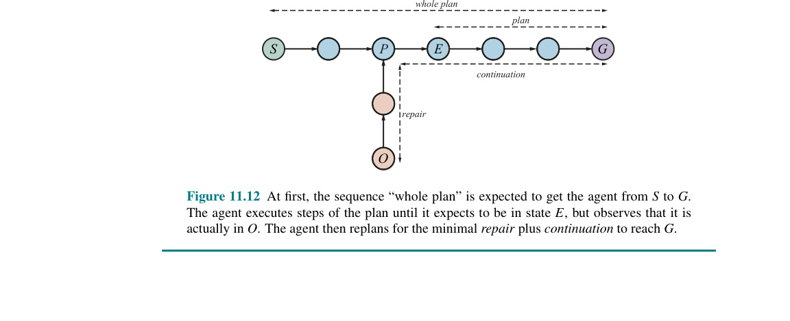
Bây giờ hãy quay lại với bài toán ví dụ về việc có được một cái ghế và cái bàn cùng màu. Giả sử tác tử đưa ra kế hoạch sau:
[LookAt(Table), LookAt(Chair),if Color(Table, c) ∧ Color(Chair, c) then NoOpelse [RemoveLid(Can1), LookAt(Can1),if Color(Table, c) ∧ Color(Can1, c) then Paint(Chair, Can1)else REPLAN]]
Bây giờ tác tử đã sẵn sàng để thực thi kế hoạch. Tác tử quan sát thấy rằng cái bàn và lon sơn màu trắng, còn cái ghế thì màu đen. Sau đó, nó thực thi hành động Paint(Chair, Can1). Tại thời điểm này, một bộ lập kế hoạch cổ điển (classical planner) sẽ tuyên bố chiến thắng; kế hoạch đã được thực thi. Nhưng một tác tử giám sát thực thi trực tuyến (online execution monitoring agent) cần phải kiểm tra xem hành động đó có thành công hay không.
Giả sử tác tử nhận thức được rằng cái ghế có màu xám lốm đốm (mottled gray) bởi vì lớp sơn đen bên dưới vẫn bị lộ ra. Tác tử sau đó cần phải tìm ra một vị trí phục hồi (recovery position) trong kế hoạch để nhắm đến và một chuỗi hành động sửa chữa để đạt được vị trí đó. Tác tử nhận thấy rằng trạng thái hiện tại giống hệt với điều kiện tiên quyết trước khi thực hiện hành động Paint(Chair, Can1), vì vậy tác tử chọn chuỗi trống (empty sequence) cho việc sửa chữa và thiết lập kế hoạch của nó chính là chuỗi [Paint] mà nó vừa mới thử. Khi kế hoạch mới này đã sẵn sàng, quá trình giám sát thực thi được tiếp tục và hành động Paint được thử lại. Hành vi này sẽ lặp lại cho đến khi cái ghế được nhận thức là đã được sơn phủ hoàn toàn.
Nhưng lưu ý rằng vòng lặp này được tạo ra bởi một quá trình lập kế hoạch–thực thi–lập kế hoạch lại (plan-execute-replan), chứ không phải bởi một vòng lặp rõ ràng trong kế hoạch. Đồng thời cũng lưu ý rằng kế hoạch ban đầu không cần phải bao phủ mọi tình huống dự phòng. Nếu tác tử đạt đến bước được đánh dấu REPLAN, nó có thể tạo ra một kế hoạch mới vào thời điểm đó (có thể liên quan đến Can2).
Giám sát hành động là một phương pháp đơn giản của giám sát thực thi, nhưng đôi khi nó có thể dẫn đến những hành vi kém thông minh. Ví dụ, giả sử không có sơn đen hay sơn trắng, và tác tử xây dựng một kế hoạch để giải quyết bài toán sơn màu bằng cách sơn cả ghế và bàn màu đỏ. Giả sử rằng chỉ có đủ sơn đỏ cho cái ghế. Với giám sát hành động, tác tử sẽ tiếp tục tiến hành và sơn cái ghế màu đỏ, sau đó nhận ra rằng nó đã hết sơn và không thể sơn cái bàn, tại thời điểm đó nó sẽ lập kế hoạch lại cho việc sửa chữa—có lẽ là sơn cả ghế và bàn màu xanh lá cây. Một tác tử giám sát kế hoạch (plan-monitoring agent) có thể phát hiện sự thất bại bất cứ khi nào trạng thái hiện tại là nguyên nhân khiến phần kế hoạch còn lại không còn hoạt động được nữa. Do đó, nó sẽ không lãng phí thời gian để sơn cái ghế màu đỏ.
Giám sát kế hoạch đạt được điều này bằng cách kiểm tra các điều kiện tiên quyết cho sự thành công của toàn bộ kế hoạch còn lại—tức là, các điều kiện tiên quyết của mỗi bước trong kế hoạch, ngoại trừ những điều kiện tiên quyết được đạt được bởi một bước khác trong phần kế hoạch còn lại đó. Giám sát kế hoạch sẽ cắt bỏ việc thực thi một kế hoạch đã định sẵn là sẽ thất bại (doomed plan) càng sớm càng tốt, thay vì tiếp tục cho đến khi sự thất bại đó thực sự xảy ra. [Chú thích 5: Giám sát kế hoạch có nghĩa là cuối cùng, sau 374 trang sách, chúng ta đã có một tác tử thông minh hơn một con bọ hung (xem trang 59). Một tác tử giám sát kế hoạch sẽ nhận thấy rằng viên phân đã biến mất khỏi tầm tay của nó và sẽ lập kế hoạch lại để lấy một viên phân khác và lấp vào cái lỗ của nó].
Giám sát kế hoạch cũng cho phép sự tình cờ (serendipity)—thành công ngẫu nhiên. Nếu có ai đó đi ngang qua và sơn cái bàn màu đỏ cùng lúc với việc tác tử đang sơn cái ghế màu đỏ, thì các điều kiện tiên quyết cuối cùng của kế hoạch đã được thỏa mãn (mục tiêu đã đạt được), và tác tử có thể về nhà sớm.
Việc sửa đổi một thuật toán lập kế hoạch sao cho mỗi hành động trong kế hoạch được chú thích (annotated) với các điều kiện tiên quyết của nó là một việc rất đơn giản, qua đó cho phép thực hiện giám sát hành động. Sẽ phức tạp hơn một chút để kích hoạt giám sát kế hoạch. Các bộ lập kế hoạch trật tự cục bộ (partial-order planners) có lợi thế là chúng đã xây dựng sẵn các cấu trúc chứa đựng các mối quan hệ cần thiết cho việc giám sát kế hoạch. Việc bổ sung cho các bộ lập kế hoạch không gian trạng thái (state-space planners) các chú thích cần thiết có thể được thực hiện bằng cách ghi chép lại cẩn thận (careful bookkeeping) khi các fluent mục tiêu được hồi quy (regressed) ngược trở lại qua kế hoạch.
Bây giờ chúng ta đã mô tả một phương pháp cho việc giám sát và lập kế hoạch lại, chúng ta cần đặt câu hỏi, "Nó có hoạt động không?". Đây là một câu hỏi phức tạp một cách đáng ngạc nhiên. Nếu ý của chúng ta là, "Chúng ta có thể đảm bảo rằng tác tử sẽ luôn luôn đạt được mục tiêu không?" thì câu trả lời là không, bởi vì tác tử có thể vô tình đi vào một ngõ cụt (dead end) mà từ đó không có cách nào sửa chữa được. Ví dụ, tác tử máy hút bụi có thể có một mô hình bị lỗi về chính bản thân nó và không biết rằng pin của nó có thể cạn kiệt. Một khi pin cạn, nó sẽ không thể sửa chữa bất kỳ kế hoạch nào. Nếu chúng ta loại trừ các ngõ cụt—giả định rằng tồn tại một kế hoạch để đạt được mục tiêu từ bất kỳ trạng thái nào trong môi trường—và giả định rằng môi trường thực sự không tất định (nondeterministic), theo nghĩa là một kế hoạch như vậy luôn luôn có một cơ hội thành công nào đó ở bất kỳ nỗ lực thực thi nào, thì tác tử cuối cùng sẽ đạt được mục tiêu.
Rắc rối xảy ra khi một hành động có vẻ như không tất định (seemingly-nondeterministic action) lại thực tế không phải là ngẫu nhiên, mà thay vào đó phụ thuộc vào một điều kiện tiên quyết nào đó mà tác tử không hề biết tới. Ví dụ, đôi khi một lon sơn có thể bị rỗng, do đó việc lấy sơn từ lon đó sẽ không mang lại hiệu ứng nào. Dù cho có thử lại bao nhiêu lần đi chăng nữa cũng sẽ không thay đổi được điều này. [Chú thích 6: Sự lặp đi lặp lại vô ích của một quá trình sửa chữa kế hoạch chính xác là hành vi được thể hiện bởi con ong vò vẽ sphex (trang 59)].
Một giải pháp là lựa chọn một cách ngẫu nhiên từ trong tập hợp các kế hoạch sửa chữa khả thi, thay vì thử cùng một kế hoạch mỗi lần. Trong trường hợp này, kế hoạch sửa chữa bằng cách mở một lon sơn khác có thể sẽ hoạt động. Một phương pháp tiếp cận tốt hơn là học một mô hình tốt hơn. Mỗi lần dự đoán thất bại (prediction failure) là một cơ hội để học hỏi; một tác tử nên có khả năng sửa đổi mô hình của nó về thế giới sao cho phù hợp với các nhận thức của mình. Kể từ đó trở đi, bộ lập kế hoạch lại sẽ có khả năng đưa ra một giải pháp sửa chữa giải quyết tận gốc rễ vấn đề (root problem), thay vì dựa vào vận may để chọn một phương pháp sửa chữa tốt.
11.6 Thời gian, Lịch trình và Tài nguyên (Time, Schedules, and Resources)
Lập kế hoạch cổ điển (classical planning) đề cập đến việc phải làm gì, theo trình tự nào, nhưng không đề cập đến thời gian: một hành động mất bao lâu và khi nào nó xảy ra. Ví dụ, trong miền sân bay, chúng ta có thể tạo ra một kế hoạch cho biết máy bay nào đi đâu, chở theo thứ gì, nhưng không thể chỉ định thời gian khởi hành và thời gian đến. Đây chính là chủ đề của việc lập lịch trình (scheduling).
Thế giới thực cũng áp đặt các ràng buộc về tài nguyên (resource constraints): một hãng hàng không có số lượng nhân viên hữu hạn, và những nhân viên đang ở trên một chuyến bay này thì không thể ở trên một chuyến bay khác cùng một lúc. Mục này sẽ giới thiệu các kỹ thuật để lập kế hoạch và lập lịch trình cho các bài toán có các ràng buộc về tài nguyên.
Cách tiếp cận mà chúng ta sử dụng là "lập kế hoạch trước, xếp lịch sau" (plan first, schedule later): chia toàn bộ bài toán thành một giai đoạn lập kế hoạch (planning phase) trong đó các hành động được chọn lọc, với một số ràng buộc về trình tự, để đáp ứng các mục tiêu của bài toán; và một giai đoạn lập lịch trình (scheduling phase) diễn ra sau đó, trong đó thông tin về thời gian được thêm vào kế hoạch để đảm bảo rằng nó đáp ứng các ràng buộc về tài nguyên và thời hạn (deadline). Phương pháp này rất phổ biến trong các môi trường sản xuất và hậu cần trong thế giới thực, nơi giai đoạn lập kế hoạch đôi khi được tự động hóa, và đôi khi được thực hiện bởi các chuyên gia con người.
11.6.1 Biểu diễn các ràng buộc về thời gian và tài nguyên (Representing temporal and resource constraints)
Một bài toán lập lịch trình job-shop (job-shop scheduling problem) điển hình (xem Mục 5.1.2) bao gồm một tập hợp các công việc (jobs), mỗi công việc có một tập hợp các hành động với các ràng buộc về trình tự giữa chúng. Mỗi hành động có một thời lượng (duration) và một tập hợp các ràng buộc tài nguyên cần thiết cho hành động đó. Một ràng buộc sẽ chỉ định loại tài nguyên (ví dụ: bu lông, cờ lê, hoặc phi công), số lượng tài nguyên đó được yêu cầu, và liệu tài nguyên đó là loại có thể tiêu hao (consumable) (ví dụ: bu lông không còn để sử dụng nữa sau khi đã dùng) hay có thể tái sử dụng (reusable) (ví dụ: một phi công bị chiếm dụng trong suốt chuyến bay nhưng sẽ sẵn sàng trở lại khi chuyến bay kết thúc). Các hành động cũng có thể tạo ra tài nguyên (ví dụ: các hành động sản xuất và tái cung cấp).
Một giải pháp cho bài toán lập lịch trình job-shop phải chỉ định thời gian bắt đầu cho từng hành động và phải thỏa mãn tất cả các ràng buộc về trình tự thời gian cũng như các ràng buộc về tài nguyên. Tương tự như các bài toán tìm kiếm và lập kế hoạch, các giải pháp có thể được đánh giá dựa trên một hàm chi phí (cost function); hàm này có thể khá phức tạp, với các chi phí tài nguyên phi tuyến tính (nonlinear resource costs), chi phí trễ hạn phụ thuộc vào thời gian (time-dependent delay costs), v.v.. Để đơn giản, chúng ta giả định rằng hàm chi phí chỉ là tổng thời lượng của toàn bộ kế hoạch, hay còn gọi là tổng thời gian hoàn thành (makespan).
Hình 11.13 trình bày một ví dụ đơn giản: một bài toán liên quan đến việc lắp ráp hai chiếc ô tô. Bài toán này bao gồm hai công việc, mỗi công việc có dạng [AddEngine, AddWheels, Inspect]. Câu lệnh Resources khai báo rằng có bốn loại tài nguyên, và cung cấp số lượng khả dụng của mỗi loại tại thời điểm bắt đầu: 1 cần cẩu nâng động cơ (engine hoist), 1 trạm lắp bánh xe (wheel station), 2 thanh tra viên (inspectors), và 500 đai ốc (lug nuts). Các lược đồ hành động (action schemas) cung cấp thời lượng và nhu cầu tài nguyên của từng hành động. Các đai ốc bị tiêu hao khi bánh xe được lắp vào ô tô, trong khi các tài nguyên khác được "mượn" ở đầu hành động và được "trả lại" khi hành động kết thúc.
Jobs({AddEngine1 ≺ AddWheels1 ≺ Inspect1}, {AddEngine2 ≺ AddWheels2 ≺ Inspect2})Resources(EngineHoists(1), WheelStations(1), Inspectors(2), LugNuts(500))
Action(AddEngine1, DURATION:30, USE:EngineHoists(1))Action(AddEngine2, DURATION:60, USE:EngineHoists(1))Action(AddWheels1, DURATION:30, CONSUME:LugNuts(20), USE:WheelStations(1))Action(AddWheels2, DURATION:15, CONSUME:LugNuts(20), USE:WheelStations(1))Action(Inspecti, DURATION:10, USE:Inspectors(1))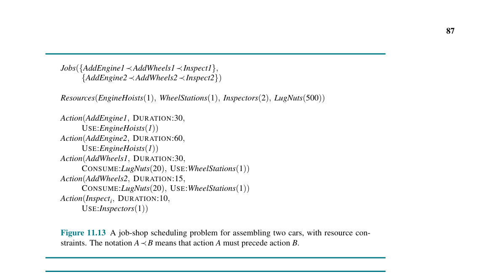
Hình 11.13: Một bài toán lập lịch trình job-shop cho việc lắp ráp hai chiếc ô tô, với các ràng buộc về tài nguyên. Ký hiệu
A ≺ Bcó nghĩa là hành động A phải diễn ra trước hành động B.
Việc biểu diễn tài nguyên dưới dạng các số lượng (numerical quantities), chẳng hạn như Inspectors(2), thay vì dưới dạng các thực thể được đặt tên cụ thể, chẳng hạn như Inspector(I1) và Inspector(I2), là một ví dụ của kỹ thuật được gọi là tổng hợp (aggregation): nhóm các vật thể riêng lẻ thành các số lượng khi tất cả các vật thể đó không thể phân biệt được với nhau (indistinguishable).
Trong bài toán lắp ráp của chúng ta, việc thanh tra viên nào kiểm tra chiếc xe không quan trọng, vì vậy không cần phải phân biệt họ. Việc tổng hợp là rất cần thiết để giảm thiểu độ phức tạp (reducing complexity). Hãy xem xét điều gì sẽ xảy ra khi một lịch trình được đề xuất có 10 hành động Inspect diễn ra đồng thời nhưng chỉ có 9 thanh tra viên. Với các thanh tra viên được biểu diễn dưới dạng số lượng, sự thất bại này sẽ bị phát hiện ngay lập tức và thuật toán sẽ quay lui (backtracks) để thử một lịch trình khác. Còn nếu thanh tra viên được biểu diễn dưới dạng các cá nhân, thuật toán sẽ phải thử qua tất cả $9!$ cách phân công các thanh tra viên cho các hành động trước khi nhận ra rằng không có cách nào trong số đó hoạt động được.
11.6.2 Giải quyết các bài toán lập lịch trình (Solving scheduling problems)
Chúng ta bắt đầu bằng việc xem xét bài toán lập lịch trình thời gian đơn thuần, tạm thời bỏ qua các ràng buộc về tài nguyên. Để giảm thiểu tổng thời gian hoàn thành (makespan), chúng ta phải tìm thời gian bắt đầu sớm nhất cho tất cả các hành động sao cho nhất quán với các ràng buộc trình tự được cung cấp trong bài toán. Rất hữu ích khi xem các ràng buộc trình tự này như một đồ thị có hướng (directed graph) liên kết các hành động, như được thể hiện trong Hình 11.14.
Chúng ta có thể áp dụng phương pháp đường găng (critical path method - CPM) vào đồ thị này để xác định thời gian bắt đầu và kết thúc khả thi của mỗi hành động. Một đường dẫn (path) đi qua một đồ thị đại diện cho một kế hoạch trật tự cục bộ (partial-order plan) là một chuỗi hành động được sắp xếp tuyến tính bắt đầu từ Start (Bắt đầu) và kết thúc ở Finish (Kết thúc). (Ví dụ, có hai đường dẫn trong kế hoạch trật tự cục bộ ở Hình 11.14).
Đường găng (critical path) là đường dẫn có tổng thời lượng dài nhất; đường dẫn này "găng" (critical) bởi vì nó quyết định thời lượng của toàn bộ kế hoạch—việc rút ngắn các đường dẫn khác không làm rút ngắn toàn bộ kế hoạch, nhưng việc trì hoãn thời gian bắt đầu của bất kỳ hành động nào trên đường găng sẽ làm chậm trễ cả kế hoạch.
Các hành động không nằm trên đường găng có một khoảng thời gian trống mà trong đó chúng có thể được thực thi. Khoảng thời gian này được xác định bởi thời gian bắt đầu sớm nhất có thể (ES - earliest possible start time), và thời gian bắt đầu muộn nhất có thể (LS - latest possible start time). Khoảng cách $LS - ES$ được gọi là thời gian trễ (slack) của một hành động.
Chúng ta có thể thấy trong Hình 11.14 rằng toàn bộ kế hoạch sẽ mất 85 phút, rằng mỗi hành động trong công việc phía trên có 15 phút thời gian trễ, và rằng mỗi hành động trên đường găng có thời gian trễ bằng 0 (theo đúng định nghĩa). Tập hợp các thời điểm ES và LS cho tất cả các hành động tạo thành một lịch trình (schedule) cho bài toán.
Các công thức sau đây định nghĩa ES và LS, qua đó cấu thành một thuật toán quy hoạch động (dynamic-programming algorithm) để tính toán chúng. A và B là các hành động, và A ≺ B có nghĩa là A diễn ra trước B:
$ES(Start) = 0$ $ES(B) = \max_{A \prec B} ES(A) + Duration(A)$ $LS(Finish) = ES(Finish)$ $LS(A) = \min_{B \succ A} LS(B) - Duration(A)$
Ý tưởng ở đây là chúng ta bắt đầu bằng cách gán $ES(Start)$ bằng 0. Sau đó, ngay khi chúng ta có một hành động B mà tất cả các hành động diễn ra ngay trước nó đều đã được gán các giá trị ES, chúng ta sẽ thiết lập $ES(B)$ là giá trị lớn nhất trong số các thời gian kết thúc sớm nhất của các hành động diễn ra ngay trước đó, trong đó thời gian kết thúc sớm nhất của một hành động được định nghĩa là thời gian bắt đầu sớm nhất cộng với thời lượng. Quá trình này lặp lại cho đến khi mọi hành động đều được gán một giá trị ES. Các giá trị LS được tính toán theo cách tương tự, bằng cách làm việc ngược trở lại (working backward) từ hành động Finish.
Độ phức tạp của thuật toán đường găng chỉ là $O(Nb)$, trong đó $N$ là số lượng hành động và $b$ là hệ số phân nhánh lớn nhất đi vào hoặc đi ra từ một hành động. (Để thấy điều này, lưu ý rằng các phép tính toán LS và ES được thực hiện một lần cho mỗi hành động, và mỗi phép tính lặp qua tối đa $b$ hành động khác). Do đó, việc tìm ra một lịch trình có thời lượng tối thiểu, với một cấu trúc trật tự cục bộ (partial ordering) trên các hành động và không có các ràng buộc tài nguyên, là khá dễ dàng.
(Hình ảnh minh họa Hình 11.14)
Hình 11.14: Phía trên: một biểu diễn của các ràng buộc thời gian cho bài toán lập lịch trình job-shop từ Hình 11.13. Thời lượng của mỗi hành động được cho ở dưới cùng của mỗi hình chữ nhật. Khi giải bài toán, chúng ta tính toán thời gian bắt đầu sớm nhất và muộn nhất dưới dạng cặp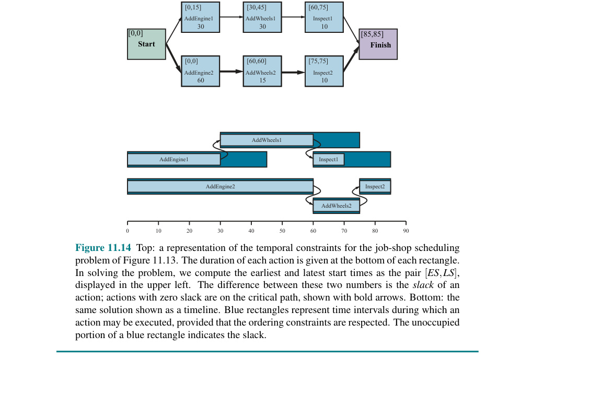
[ES, LS], được hiển thị ở góc trên bên trái. Chênh lệch giữa hai con số này là thời gian trễ (slack) của một hành động; các hành động có thời gian trễ bằng 0 nằm trên đường găng (critical path), được thể hiện bằng các mũi tên in đậm. Phía dưới: cùng một giải pháp được hiển thị dưới dạng dòng thời gian (timeline). Các hình chữ nhật màu xanh lam đại diện cho các khoảng thời gian mà một hành động có thể được thực thi, với điều kiện là các ràng buộc về trình tự phải được tôn trọng. Phần không bị lấp đầy của hình chữ nhật màu xanh lam biểu thị cho thời gian trễ.
Về mặt toán học, các bài toán đường găng rất dễ giải quyết vì chúng được định nghĩa như một hội (conjunction) của các bất phương trình tuyến tính (linear inequalities) dựa trên thời gian bắt đầu và thời gian kết thúc. Tuy nhiên, khi chúng ta đưa vào các ràng buộc tài nguyên, các ràng buộc lên thời gian bắt đầu và kết thúc sẽ trở nên phức tạp hơn. Ví dụ, các hành động AddEngine (thêm động cơ), vốn cùng bắt đầu tại một thời điểm trong Hình 11.14, đều yêu cầu cùng một cần cẩu EngineHoist nên không thể được tiến hành trùng lặp nhau (overlap). Ràng buộc "không thể trùng lặp" này là một phép tuyển (disjunction) của hai bất phương trình tuyến tính, một cho mỗi phương án sắp xếp trình tự khả thi. Việc đưa các phép tuyển này vào khiến cho lập lịch trình có ràng buộc tài nguyên trở thành bài toán NP-khó (NP-hard).
Hình 11.15 cho thấy giải pháp có thời gian hoàn thành nhanh nhất, 115 phút. Kết quả này dài hơn 30 phút so với mức 85 phút cần thiết cho một lịch trình không có các ràng buộc tài nguyên. Lưu ý rằng không có bất kỳ thời điểm nào yêu cầu cả hai thanh tra viên cùng làm việc, do đó chúng ta có thể ngay lập tức điều chuyển một trong hai thanh tra viên của mình đến một vị trí làm việc năng suất hơn.
(Hình ảnh minh họa Hình 11.15)
Hình 11.15: Một giải pháp cho bài toán lập lịch trình job-shop từ Hình 11.13, có tính đến các ràng buộc tài nguyên. Lề bên trái liệt kê ba loại tài nguyên có thể tái sử dụng, và các hành động được hiển thị căn chỉnh theo chiều ngang với các tài nguyên mà chúng sử dụng. Có hai lịch trình khả thi, tùy thuộc vào việc công đoạn lắp ráp nào sử dụng cần cẩu nâng động cơ trước; chúng tôi đã hiển thị giải pháp có thời lượng ngắn nhất, mất 115 phút.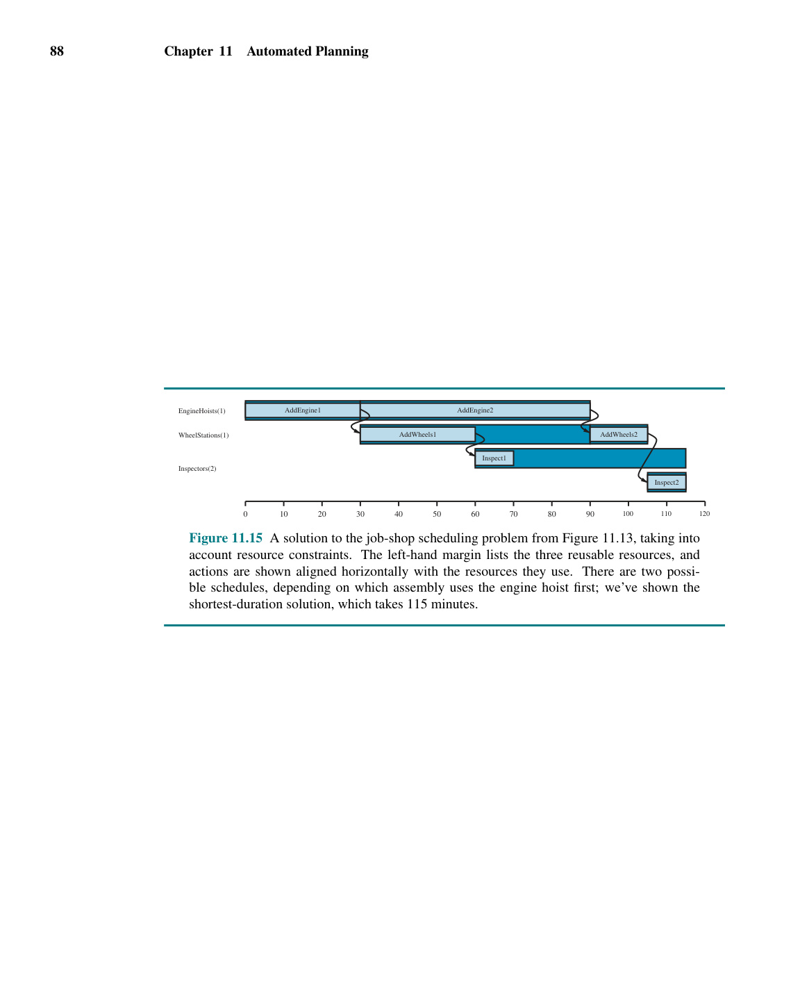
Đã có một lịch sử dài các nghiên cứu về lập lịch trình tối ưu (optimal scheduling). Một bài toán thách thức (challenge problem) được đưa ra vào năm 1963—tìm lịch trình tối ưu cho một bài toán chỉ liên quan đến 10 cỗ máy và 10 công việc với 100 hành động cho mỗi công việc—đã không có lời giải trong suốt 23 năm (Lawler và cộng sự, 1993). Nhiều phương pháp đã được thử nghiệm, bao gồm nhánh và cận (branch-and-bound), luyện kim mô phỏng (simulated annealing), tìm kiếm tabu (tabu search), và bài toán thỏa mãn ràng buộc (constraint satisfaction).
Một cách tiếp cận phổ biến là sử dụng hàm tự suy thời gian trễ tối thiểu (minimum slack heuristic): trong mỗi vòng lặp, xếp lịch để bắt đầu sớm nhất có thể cho bất kỳ hành động nào chưa được lên lịch mà tất cả các hành động tiền nhiệm (predecessors) của nó đã được lên lịch và có thời gian trễ ít nhất; sau đó cập nhật lại thời gian ES và LS cho từng hành động bị ảnh hưởng và lặp lại quá trình. Hàm tự suy tham lam (greedy heuristic) này khá giống với hàm tự suy giá trị còn lại tối thiểu (minimum-remaining-values heuristic - MRV) trong các bài toán thỏa mãn ràng buộc. Nó thường hoạt động tốt trong thực tế, nhưng đối với bài toán lắp ráp của chúng ta, nó lại đưa ra một giải pháp dài 130 phút, chứ không phải giải pháp 115 phút như trong Hình 11.15.
Cho đến thời điểm này, chúng ta đã giả định rằng tập hợp các hành động và các ràng buộc về trình tự là cố định (fixed). Dưới những giả định này, mọi bài toán lập lịch trình đều có thể được giải quyết bằng một chuỗi hành động không trùng lặp (nonoverlapping sequence) giúp tránh được mọi xung đột tài nguyên, miễn là bản thân mỗi hành động là khả thi. Tuy nhiên, nếu một bài toán lập lịch trình tỏ ra rất khó, thì việc giải nó theo cách này có thể không phải là một ý tưởng hay—sẽ tốt hơn nếu chúng ta xem xét lại các hành động và các ràng buộc, phòng trường hợp điều đó dẫn đến một bài toán lập lịch trình dễ dàng hơn nhiều. Vì vậy, việc tích hợp lập kế hoạch và lập lịch trình lại với nhau là rất có ý nghĩa, thông qua việc tính đến các thời lượng và sự trùng lặp ngay trong quá trình xây dựng một kế hoạch. Một vài thuật toán lập kế hoạch trong Mục 11.2 có thể được mở rộng để xử lý các loại thông tin này.
11.7 Phân tích các phương pháp Lập kế hoạch (Analysis of Planning Approaches)
Lập kế hoạch kết hợp hai lĩnh vực chính của Trí tuệ Nhân tạo (AI) mà chúng ta đã đề cập cho đến nay: tìm kiếm (search) và logic. Một bộ lập kế hoạch (planner) có thể được xem như một chương trình tìm kiếm một giải pháp hoặc như một chương trình chứng minh (một cách có tính xây dựng) sự tồn tại của một giải pháp. Sự giao thoa ý tưởng từ hai lĩnh vực này đã cho phép các bộ lập kế hoạch mở rộng quy mô từ các bài toán đồ chơi (toy problems) nơi số lượng hành động và trạng thái bị giới hạn ở khoảng một tá, lên các ứng dụng công nghiệp trong thế giới thực với hàng triệu trạng thái và hàng ngàn hành động.
Lập kế hoạch trước hết là một bài toán thực hành về việc kiểm soát sự bùng nổ tổ hợp (combinatorial explosion). Nếu có $n$ mệnh đề trong một miền, thì sẽ có $2^n$ trạng thái. Để chống lại sự bi quan đó, việc xác định các bài toán con độc lập (independent subproblems) có thể là một vũ khí đắc lực. Trong trường hợp tốt nhất — bài toán có khả năng phân rã hoàn toàn (full decomposability) — chúng ta sẽ đạt được sự tăng tốc theo cấp số nhân.
Tuy nhiên, khả năng phân rã có thể bị phá vỡ bởi các tương tác tiêu cực giữa các hành động. SATPLAN có thể mã hóa các mối quan hệ logic giữa các bài toán con. Phương pháp tìm kiếm tiến (forward search) giải quyết vấn đề này một cách tự suy (heuristically) bằng cách cố gắng tìm ra các mẫu hình (các tập con của các mệnh đề) bao hàm các bài toán con độc lập. Vì cách tiếp cận này mang tính tự suy (heuristic), nó vẫn có thể hoạt động ngay cả khi các bài toán con không hoàn toàn độc lập.
Đáng tiếc là, chúng ta vẫn chưa có một sự hiểu biết rõ ràng về việc kỹ thuật nào hoạt động tốt nhất trên loại bài toán nào. Rất có khả năng là các kỹ thuật mới sẽ xuất hiện, có thể cung cấp một sự tổng hợp giữa các biểu diễn phân cấp và bậc nhất có tính biểu đạt cao (highly expressive first-order and hierarchical representations) với các biểu diễn mệnh đề và biểu diễn phân tích hiệu quả cao (highly efficient factored and propositional representations) đang thống trị ngày nay.
Chúng ta đang chứng kiến các ví dụ về các hệ thống lập kế hoạch danh mục (portfolio planning systems), nơi một tập hợp các thuật toán có sẵn được áp dụng cho bất kỳ bài toán cho trước nào. Điều này có thể được thực hiện một cách có chọn lọc (hệ thống phân loại mỗi bài toán mới để chọn ra thuật toán tốt nhất cho nó), hoặc song song (tất cả các thuật toán chạy đồng thời, mỗi thuật toán trên một CPU khác nhau), hoặc bằng cách đan xen (interleaving) các thuật toán theo một lịch trình.
TÓM TẮT CHƯƠNG (Summary)
Trong chương này, chúng tôi đã mô tả biểu diễn PDDL cho cả các vấn đề lập kế hoạch cổ điển và mở rộng, đồng thời trình bày một số hướng tiếp cận thuật toán để tìm kiếm giải pháp. Các điểm cần ghi nhớ:
Ghi chú Thư mục và Lịch sử (Bibliographical and Historical Notes)
Lập kế hoạch AI bắt nguồn từ các cuộc điều tra về tìm kiếm không gian trạng thái (state-space search), chứng minh định lý (theorem proving), và lý thuyết điều khiển (control theory). STRIPS (Fikes và Nilsson, 1971, 1993), hệ thống lập kế hoạch lớn đầu tiên, được thiết kế làm bộ lập kế hoạch cho robot Shakey tại viện SRI. Phiên bản đầu tiên của chương trình chạy trên một máy tính chỉ có bộ nhớ 192 KB. Cấu trúc điều khiển tổng thể của nó được mô phỏng theo GPS (General Problem Solver - Bộ giải Quyết định Tổng quát) (Newell và Simon, 1961), một hệ thống tìm kiếm không gian trạng thái sử dụng phân tích phương tiện-mục đích (means–ends analysis).
Ngôn ngữ biểu diễn STRIPS đã phát triển thành Ngôn ngữ Mô tả Hành động (Action Description Language - ADL) (Pednault, 1986), và sau đó là Ngôn ngữ Định nghĩa Miền Lập kế hoạch (Problem Domain Description Language - PDDL) (Ghallab và cộng sự, 1998), ngôn ngữ đã được sử dụng cho Cuộc thi Lập kế hoạch Quốc tế (International Planning Competition) kể từ năm 1998. Phiên bản gần đây nhất là PDDL 3.1 (Kovacs, 2011).
Các bộ lập kế hoạch vào đầu những năm 1970 đã phân rã các bài toán bằng cách tính toán một kế hoạch con (subplan) cho từng mục tiêu con (subgoal) và sau đó xâu chuỗi các kế hoạch con lại với nhau theo một trật tự nào đó. Hướng tiếp cận này, được Sacerdoti (1975) gọi là lập kế hoạch tuyến tính (linear planning), đã sớm bị phát hiện là không hoàn chỉnh. Nó không thể giải quyết một số bài toán rất đơn giản, chẳng hạn như sự dị thường Sussman (Sussman anomaly) (xem Bài tập 11.SUSS), được Allen Brown phát hiện trong quá trình thử nghiệm với hệ thống HACKER (Sussman, 1975). Một bộ lập kế hoạch hoàn chỉnh phải cho phép đan xen (interleaving) các hành động từ các kế hoạch con khác nhau vào trong một chuỗi duy nhất. Hệ thống WARPLAN của Warren (1974) đã đạt được điều đó, và minh họa cách ngôn ngữ lập trình logic Prolog có thể tạo ra các chương trình súc tích; WARPLAN chỉ có 100 dòng mã code.
Lập kế hoạch trật tự cục bộ (Partial-order planning) đã thống trị 20 năm nghiên cứu tiếp theo, với các công trình lý thuyết mô tả việc phát hiện các xung đột (Tate, 1975a) và bảo vệ các điều kiện đã đạt được (Sussman, 1975), cùng các bản triển khai bao gồm NOAH (Sacerdoti, 1977) và NONLIN (Tate, 1977). Điều đó dẫn đến các mô hình hình thức (Chapman, 1987; McAllester và Rosenblitt, 1991) cho phép phân tích lý thuyết về các thuật toán và các bài toán lập kế hoạch khác nhau, và dẫn đến một hệ thống được phân phối rộng rãi, UCPOP (Penberthy và Weld, 1992).
Drew McDermott nghi ngờ rằng sự chú trọng vào lập kế hoạch trật tự cục bộ đang chèn ép các kỹ thuật khác có lẽ nên được xem xét lại khi mà máy tính lúc bấy giờ đã có bộ nhớ gấp 100 lần so với thời của Shakey. Hệ thống UNPOP của ông (McDermott, 1996) là một chương trình lập kế hoạch không gian trạng thái sử dụng hàm tự suy bỏ qua danh sách xóa (ignore-delete-list heuristic). HSP (Heuristic Search Planner) (Bonet và Geffner, 1999; Haslum, 2006) đã làm cho tìm kiếm không gian trạng thái trở nên thực tế đối với các bài toán lập kế hoạch lớn. Bộ lập kế hoạch FF (Fast Forward) (Hoffmann, 2001; Hoffmann và Nebel, 2001; Hoffmann, 2005) và biến thể FASTDOWNWARD (Helmert, 2006) đã giành chiến thắng trong các cuộc thi lập kế hoạch quốc tế vào những năm 2000.
Tìm kiếm hai chiều (Bidirectional search) (xem Mục 3.4.5) cũng được biết là bị ảnh hưởng bởi việc thiếu hụt các hàm tự suy, nhưng đã đạt được một số thành công bằng cách sử dụng tìm kiếm lùi để tạo ra một vành đai (perimeter) xung quanh mục tiêu, và sau đó tinh chỉnh một hàm tự suy để tìm kiếm tiến về phía vành đai đó (Torralba và cộng sự, 2016). Bộ lập kế hoạch tìm kiếm hai chiều SYMBA* (Torralba và cộng sự, 2016) đã giành chiến thắng trong cuộc thi năm 2016.
Các nhà nghiên cứu đã chuyển sang PDDL và mô hình lập kế hoạch để họ có thể sử dụng các hàm tự suy độc lập với miền (domain independent heuristics). Hoffmann (2005) phân tích không gian tìm kiếm của hàm tự suy bỏ qua danh sách xóa. Edelkamp (2009) và Haslum và cộng sự (2007) mô tả cách xây dựng các cơ sở dữ liệu mẫu (pattern databases) cho các hàm tự suy lập kế hoạch. Felner và cộng sự (2004) đưa ra những kết quả đáng khích lệ khi sử dụng các cơ sở dữ liệu mẫu cho các câu đố trượt gạch (sliding-tile puzzles), vốn có thể được coi là một miền lập kế hoạch, nhưng Hoffmann và cộng sự (2006) chỉ ra một số hạn chế của việc trừu tượng hóa (abstraction) đối với các bài toán lập kế hoạch cổ điển. Rintanen (2012) thảo luận về các hàm tự suy lựa chọn biến đặc thù cho lập kế hoạch (planning-specific variable-selection heuristics) đối với việc giải quyết bài toán SAT.
Helmert và cộng sự (2011) mô tả hệ thống Fast Downward Stone Soup (FDSS), một bộ lập kế hoạch danh mục (portfolio planner) mà, cũng giống như trong câu chuyện ngụ ngôn về súp đá (stone soup), mời gọi chúng ta ném vào càng nhiều thuật toán lập kế hoạch càng tốt. Hệ thống duy trì một tập hợp các bài toán huấn luyện, và đối với mỗi bài toán cùng mỗi thuật toán, nó ghi lại thời gian chạy và chi phí kế hoạch kết quả của giải pháp cho bài toán đó. Sau đó, khi đối mặt với một bài toán mới, nó sử dụng kinh nghiệm trong quá khứ để quyết định xem sẽ thử (các) thuật toán nào, với giới hạn thời gian ra sao, và chọn lấy giải pháp có chi phí tối thiểu. FDSS là hệ thống chiến thắng trong Cuộc thi Lập kế hoạch Quốc tế năm 2018 (Seipp và Röger, 2018). Seipp và cộng sự (2015) mô tả một phương pháp học máy (machine learning) để tự động học một danh mục tốt, khi được cung cấp một bài toán mới. Vallati và cộng sự (2015) cung cấp một cái nhìn tổng quan về lập kế hoạch danh mục. Ý tưởng về các danh mục thuật toán cho các bài toán tìm kiếm tổ hợp (combinatorial search problems) bắt nguồn từ Gomes và Selman (2001).
Sistla và Godefroid (2004) đề cập đến việc giảm thiểu đối xứng (symmetry reduction), và Godefroid (1990) đề cập đến các hàm tự suy cho trật tự cục bộ (partial ordering). Richter và Helmert (2009) chứng minh những lợi ích về mặt hiệu suất của việc cắt tỉa tiến (forward pruning) bằng cách sử dụng các hành động ưu tiên (preferred actions).
Blum và Furst (1997) đã hồi sinh lĩnh vực lập kế hoạch với hệ thống Graphplan của họ, hệ thống này nhanh hơn nhiều bậc so với các bộ lập kế hoạch trật tự cục bộ cùng thời. Bryce và Kambhampati (2007) đưa ra cái nhìn tổng quan về đồ thị lập kế hoạch (planning graphs). Việc sử dụng phép tính tình huống (situation calculus) cho lập kế hoạch được giới thiệu bởi John McCarthy (1963) và được tinh chỉnh bởi Ray Reiter (2001).
Kautz và cộng sự (1996) đã điều tra nhiều cách khác nhau để mệnh đề hóa các lược đồ hành động (propositionalize action schemas), và phát hiện ra rằng các dạng thức nhỏ gọn nhất không nhất thiết dẫn đến thời gian giải quyết nhanh nhất. Một phân tích có hệ thống đã được thực hiện bởi Ernst và cộng sự (1997), những người cũng đã phát triển một "trình biên dịch" tự động (automatic "compiler") để tạo ra các biểu diễn mệnh đề từ các bài toán PDDL. Bộ lập kế hoạch BLACKBOX, kết hợp các ý tưởng từ Graphplan và SATPLAN, được phát triển bởi Kautz và Selman (1998). Các bộ lập kế hoạch dựa trên thỏa mãn ràng buộc (constraint satisfaction) bao gồm CPLAN (van Beek và Chen, 1999) và GP-CSP (Do và Kambhampati, 2003).
Cũng có sự quan tâm đến việc biểu diễn một kế hoạch dưới dạng một biểu đồ quyết định nhị phân (binary decision diagram - BDD), một cấu trúc dữ liệu nhỏ gọn cho các biểu thức Boolean được nghiên cứu rộng rãi trong cộng đồng xác minh phần cứng (Clarke và Grumberg, 1987; McMillan, 1993). Có nhiều kỹ thuật để chứng minh các thuộc tính của biểu đồ quyết định nhị phân, bao gồm cả thuộc tính là một giải pháp cho một bài toán lập kế hoạch. Cimatti và cộng sự (1998) trình bày một bộ lập kế hoạch dựa trên phương pháp tiếp cận này. Các biểu diễn khác cũng đã được sử dụng, chẳng hạn như quy hoạch nguyên (integer programming) (Vossen và cộng sự, 2001).
Có một số so sánh thú vị về các phương pháp tiếp cận khác nhau đối với lập kế hoạch. Helmert (2001) phân tích một vài lớp bài toán lập kế hoạch, và chỉ ra rằng các phương pháp tiếp cận dựa trên ràng buộc (constraint-based) chẳng hạn như Graphplan và SATPLAN là tốt nhất cho các miền NP-khó (NP-hard), trong khi các phương pháp dựa trên tìm kiếm (search-based) lại hoạt động tốt hơn trong các miền nơi có thể tìm thấy các giải pháp khả thi mà không cần quay lui (backtracking). Graphplan và SATPLAN gặp khó khăn trong các miền có nhiều vật thể bởi vì điều đó đồng nghĩa với việc chúng phải tạo ra nhiều hành động. Trong một số trường hợp, vấn đề có thể được trì hoãn hoặc tránh được bằng cách tạo ra các hành động được mệnh đề hóa một cách linh hoạt (dynamically), chỉ khi cần thiết, thay vì khởi tạo (instantiating) tất cả chúng trước khi quá trình tìm kiếm bắt đầu.
Cơ chế đầu tiên cho lập kế hoạch phân cấp (hierarchical planning) là một tiện ích trong chương trình STRIPS dùng để học macrops—"các toán tử vĩ mô" (macro-operators) bao gồm một chuỗi các bước nguyên thủy (Fikes và cộng sự, 1972). Hệ thống ABSTRIPS (Sacerdoti, 1974) đã giới thiệu ý tưởng về một hệ thống phân cấp trừu tượng (abstraction hierarchy), trong đó lập kế hoạch ở các cấp độ cao hơn được phép bỏ qua các điều kiện tiên quyết cấp thấp của các hành động nhằm suy xuất ra cấu trúc tổng quát của một kế hoạch khả thi. Luận án Tiến sĩ của Austin Tate (1975b) và công trình của Earl Sacerdoti (1977) đã phát triển những ý tưởng cơ bản của lập kế hoạch HTN. Erol, Hendler, và Nau (1994, 1996) trình bày một bộ lập kế hoạch phân rã phân cấp hoàn chỉnh cũng như một loạt các kết quả về độ phức tạp đối với các bộ lập kế hoạch HTN thuần túy. Cách trình bày của chúng tôi về các hành động cấp cao (HLAs) và ngữ nghĩa thiên thần (angelic semantics) là dựa theo Marthi và cộng sự (2007, 2008).
Một trong những mục tiêu của lập kế hoạch phân cấp là tái sử dụng kinh nghiệm lập kế hoạch trước đó dưới dạng các kế hoạch được tổng quát hóa (generalized plans). Kỹ thuật học tập dựa trên giải thích (explanation-based learning) đã được sử dụng như một phương tiện để tổng quát hóa các kế hoạch được tính toán trước đó trong các hệ thống như SOAR (Laird và cộng sự, 1986) và PRODIGY (Carbonell và cộng sự, 1989). Một hướng tiếp cận thay thế là lưu trữ các kế hoạch đã được tính toán trước đó dưới dạng nguyên thủy của chúng và sau đó tái sử dụng chúng để giải quyết các bài toán mới, tương tự bằng phép loại suy (analogy) với bài toán ban đầu. Đây là hướng tiếp cận được áp dụng bởi lĩnh vực được gọi là lập kế hoạch dựa trên tình huống (case-based planning) (Carbonell, 1983; Alterman, 1988). Kambhampati (1994) lập luận rằng lập kế hoạch dựa trên tình huống nên được phân tích như một dạng của lập kế hoạch tinh chỉnh (refinement planning) và cung cấp một nền tảng hình thức cho lập kế hoạch trật tự cục bộ dựa trên tình huống.
Các bộ lập kế hoạch thời kỳ đầu thiếu vắng các câu lệnh điều kiện và vòng lặp, nhưng một số có thể sử dụng phép ép buộc (coercion) để hình thành các kế hoạch tuân thủ (conformant plans). Hệ thống NOAH của Sacerdoti đã giải quyết bài toán "chìa khóa và những chiếc hộp" (trong đó bộ lập kế hoạch biết rất ít về trạng thái ban đầu) bằng cách sử dụng phép ép buộc. Mason (1993) lập luận rằng việc cảm biến (sensing) thường có thể và nên được bỏ qua trong lập kế hoạch cho robot, đồng thời mô tả một kế hoạch không cần cảm biến (sensorless plan) có thể di chuyển một công cụ vào một vị trí cụ thể trên bàn bằng một chuỗi các hành động nghiêng (tilting actions), bất kể vị trí ban đầu của nó là gì.
Goldman và Boddy (1996) đã giới thiệu thuật ngữ lập kế hoạch tuân thủ (conformant planning), lưu ý rằng các kế hoạch không cần cảm biến thường rất hiệu quả ngay cả khi tác tử có các cảm biến. Bộ lập kế hoạch tuân thủ đạt hiệu quả vừa phải đầu tiên là Conformant Graphplan (CGP) của Smith và Weld (1998). Ferraris và Giunchiglia (2000) cùng Rintanen (1999) đã độc lập phát triển các bộ lập kế hoạch tuân thủ dựa trên SATPLAN. Bonet và Geffner (2000) mô tả một bộ lập kế hoạch tuân thủ dựa trên tìm kiếm tự suy trong không gian các trạng thái niềm tin (belief states), dựa trên các ý tưởng lần đầu tiên được phát triển vào những năm 1960 cho các quá trình quyết định Markov có thể quan sát một phần (partially observable Markov decision processes - POMDPs) (xem Chương 16).
Hiện nay, có ba phương pháp tiếp cận chính đối với lập kế hoạch tuân thủ. Hai phương pháp đầu tiên sử dụng tìm kiếm tự suy trong không gian trạng thái niềm tin: HSCP (Bertoli và cộng sự, 2001a) sử dụng biểu đồ quyết định nhị phân (BDDs) để biểu diễn các trạng thái niềm tin, trong khi Hoffmann và Brafman (2006) áp dụng hướng tiếp cận lười biếng (lazy) là tính toán các phép thử điều kiện tiên quyết và mục tiêu theo nhu cầu (on demand) bằng một bộ giải SAT. Hướng tiếp cận thứ ba, chủ yếu được bảo vệ bởi Jussi Rintanen (2007), xây dựng toàn bộ bài toán lập kế hoạch không cần cảm biến dưới dạng một công thức Boolean có lượng từ (quantified Boolean formula - QBF) và giải quyết nó bằng cách sử dụng một bộ giải QBF đa dụng. Các bộ lập kế hoạch tuân thủ hiện tại nhanh hơn năm bậc (five orders of magnitude) so với CGP. Bộ lập kế hoạch chiến thắng tại hạng mục lập kế hoạch tuân thủ năm 2006 tại Cuộc thi Lập kế hoạch Quốc tế là T0 (Palacios và Geffner, 2007), hệ thống này sử dụng tìm kiếm tự suy trong không gian trạng thái niềm tin trong khi vẫn giữ cho biểu diễn trạng thái niềm tin đơn giản bằng cách định nghĩa các literal dẫn xuất (derived literals) bao trùm các hiệu ứng có điều kiện. Bryce và Kambhampati (2007) thảo luận về cách một đồ thị lập kế hoạch có thể được khái quát hóa để tạo ra các hàm tự suy tốt cho lập kế hoạch tuân thủ và dự phòng.
Hướng tiếp cận lập kế hoạch dự phòng (contingent-planning) được mô tả trong chương này dựa trên Hoffmann và Brafman (2005), và bị ảnh hưởng bởi các thuật toán tìm kiếm hiệu quả cho các đồ thị AND–OR có chu trình (cyclic AND–OR graphs) được phát triển bởi Jimenez và Torras (2000) cũng như Hansen và Zilberstein (2001). Bài toán lập kế hoạch dự phòng đã nhận được nhiều sự chú ý hơn sau khi công bố bài báo mang tính ảnh hưởng của Drew McDermott (1978a), Planning and Acting. Bertoli và cộng sự (2001b) mô tả MBP (Model-Based Planner), hệ thống sử dụng biểu đồ quyết định nhị phân để thực hiện lập kế hoạch tuân thủ và dự phòng. Một số tác giả sử dụng "lập kế hoạch có điều kiện" (conditional planning) và "lập kế hoạch dự phòng" (contingent planning) như các từ đồng nghĩa; những người khác đưa ra sự phân biệt rằng "có điều kiện" đề cập đến các hành động với các hiệu ứng không tất định, và "dự phòng" có nghĩa là sử dụng cảm biến để vượt qua khả năng quan sát một phần.
Nhìn lại, giờ đây có thể thấy các thuật toán lập kế hoạch cổ điển (classical planning) chính đã dẫn đến các phiên bản mở rộng cho các miền không chắc chắn như thế nào. Tìm kiếm tiến tự suy fast-forward qua không gian trạng thái đã dẫn đến tìm kiếm tiến trong không gian niềm tin (Bonet và Geffner, 2000; Hoffmann và Brafman, 2005); SATPLAN dẫn đến SATPLAN ngẫu nhiên (stochastic SATPLAN) (Majercik và Littman, 2003) và dẫn đến lập kế hoạch với logic Boolean có lượng từ (Rintanen, 2007); lập kế hoạch trật tự cục bộ dẫn đến UWL (Etzioni và cộng sự, 1992) và CNLP (Peot và Smith, 1992); Graphplan dẫn đến Sensory Graphplan hay SGP (Weld và cộng sự, 1998).
Bộ lập kế hoạch trực tuyến đầu tiên với giám sát thực thi (execution monitoring) là PLANEX (Fikes và cộng sự, 1972), hoạt động cùng với bộ lập kế hoạch STRIPS để điều khiển robot Shakey. SIPE (System for Interactive Planning and Execution monitoring) (Wilkins, 1988) là bộ lập kế hoạch đầu tiên giải quyết một cách có hệ thống vấn đề lập kế hoạch lại (replanning). Nó đã được sử dụng trong các dự án trình diễn ở nhiều miền, bao gồm lập kế hoạch cho các hoạt động trên boong đáp của tàu sân bay, lập lịch trình job-shop cho một nhà máy bia của Úc, và lập kế hoạch xây dựng các tòa nhà nhiều tầng (Kartam và Levitt, 1990).
Vào giữa những năm 1980, sự bi quan về thời gian chạy chậm của các hệ thống lập kế hoạch đã dẫn đến đề xuất về các tác tử phản xạ (reflex agents) được gọi là các hệ thống lập kế hoạch phản xạ (reactive planning systems) (Brooks, 1986; Agre và Chapman, 1987). "Các kế hoạch phổ dụng" (Universal plans) (Schoppers, 1989) được phát triển như một phương pháp bảng tra cứu (lookup-table method) cho lập kế hoạch phản xạ, nhưng hóa ra lại là một sự tái khám phá về ý tưởng của các chính sách (policies) vốn đã được sử dụng từ lâu trong các quá trình quyết định Markov (xem Chương 16). Koenig (2001) khảo sát các kỹ thuật lập kế hoạch trực tuyến, dưới tên gọi Tìm kiếm lấy Tác tử làm Trung tâm (Agent-Centered Search).
Lập kế hoạch với các ràng buộc về thời gian lần đầu tiên được xử lý bởi DEVISER (Vere, 1983). Việc biểu diễn thời gian trong các kế hoạch đã được giải quyết bởi Allen (1984) và bởi Dean và cộng sự (1990) trong hệ thống FORBIN. NONLIN+ (Tate và Whiter, 1984) và SIPE (Wilkins, 1990) có thể suy luận về việc phân bổ các tài nguyên giới hạn (limited resources) cho các bước kế hoạch khác nhau. O-PLAN (Bell và Tate, 1985) đã được áp dụng cho các bài toán về tài nguyên như lập kế hoạch mua sắm phần mềm tại Price Waterhouse và lập kế hoạch lắp ráp trục sau tại hãng xe Jaguar. Hai bộ lập kế hoạch SAPA (Do và Kambhampati, 2001) và T4 (Haslum và Geffner, 2001) đều sử dụng tìm kiếm tiến không gian trạng thái với các hàm tự suy tinh vi để xử lý các hành động có thời lượng và tài nguyên. Một lựa chọn thay thế là sử dụng các ngôn ngữ hành động có tính biểu đạt cao (highly expressive action languages), nhưng hướng dẫn chúng bằng các hàm tự suy đặc thù của miền do con người viết ra, như đã được thực hiện bởi ASPEN (Fukunaga và cộng sự, 1997), HSTS (Jonsson và cộng sự, 2000), và IxTeT (Ghallab và Laruelle, 1994).
Một số hệ thống lai giữa lập kế hoạch và lịch trình (hybrid planning-and-scheduling systems) đã được triển khai: ISIS (Fox và cộng sự, 1982; Fox, 1990) đã được sử dụng cho lập lịch trình job-shop tại Westinghouse, GARI (Descotte và Latombe, 1985) lập kế hoạch gia công và chế tạo các bộ phận cơ khí, FORBIN được sử dụng để kiểm soát nhà máy, và NONLIN+ được sử dụng cho lập kế hoạch hậu cần hải quân. Chúng tôi đã chọn cách trình bày lập kế hoạch và lịch trình như hai bài toán riêng biệt; Cushing và cộng sự (2007) chỉ ra rằng điều này có thể dẫn đến tính không hoàn chỉnh (incompleteness) đối với các bài toán nhất định.
Có một lịch sử lâu đời về lập lịch trình trong hàng không vũ trụ (aerospace). T-SCHED (Drabble, 1990) đã được sử dụng để lập lịch trình cho các chuỗi lệnh nhiệm vụ của vệ tinh UOSAT-II. OPTIMUM-AIV (Aarup và cộng sự, 1994) và PLAN-ERS1 (Fuchs và cộng sự, 1990), cả hai đều dựa trên O-PLAN, đã được sử dụng để lắp ráp tàu vũ trụ và lập kế hoạch quan sát tương ứng tại Cơ quan Vũ trụ Châu Âu. SPIKE (Johnston và Adorf, 1992) được sử dụng cho lập kế hoạch quan sát tại NASA đối với Kính viễn vọng Không gian Hubble, trong khi Hệ thống Lập lịch trình Xử lý Mặt đất cho Tàu con thoi (Space Shuttle Ground Processing Scheduling System) (Deale và cộng sự, 1994) thực hiện lập lịch trình job-shop cho tối đa 16.000 ca làm việc của công nhân. Remote Agent (Muscettola và cộng sự, 1998) trở thành bộ lập kế hoạch-lịch trình tự trị (autonomous planner–scheduler) đầu tiên điều khiển một tàu vũ trụ, khi nó bay trên tàu thăm dò Deep Space One vào năm 1999. Các ứng dụng không gian đã thúc đẩy sự phát triển của các thuật toán phân bổ tài nguyên; xem Laborie (2003) và Muscettola (2002). Các tài liệu về lập lịch trình được trình bày trong một bài báo khảo sát kinh điển (Lawler và cộng sự, 1993), một cuốn sách (Pinedo, 2008), và một cẩm nang có biên tập (Blazewicz và cộng sự, 2007).
Độ phức tạp tính toán (computational complexity) của lập kế hoạch đã được phân tích bởi một số tác giả (Bylander, 1994; Ghallab và cộng sự, 2004; Rintanen, 2016). Có hai nhiệm vụ chính: PlanSAT là câu hỏi về việc liệu có tồn tại bất kỳ kế hoạch nào giải quyết được một bài toán lập kế hoạch hay không. Bounded PlanSAT hỏi liệu có giải pháp nào có độ dài $k$ hoặc ngắn hơn không; điều này có thể được sử dụng để tìm ra một kế hoạch tối ưu. Cả hai đều có thể quyết định được (decidable) đối với lập kế hoạch cổ điển (bởi vì số lượng trạng thái là hữu hạn). Nhưng nếu chúng ta thêm các ký hiệu hàm (function symbols) vào ngôn ngữ, thì số lượng trạng thái trở nên vô hạn, và PlanSAT trở thành chỉ bán quyết định được (semidecidable). Đối với các bài toán được mệnh đề hóa (propositionalized), cả hai đều thuộc lớp độ phức tạp PSPACE, một lớp lớn hơn (và do đó khó hơn) so với NP và đề cập đến các bài toán có thể được giải quyết bằng một máy Turing tất định (deterministic Turing machine) với một lượng không gian (space) là đa thức (polynomial). Những kết quả lý thuyết này có thể gây nản lòng, nhưng trên thực tế, những bài toán mà chúng ta muốn giải quyết thường không quá tồi tệ. Lợi thế thực sự của hình thức luận lập kế hoạch cổ điển (classical planning formalism) là nó đã tạo điều kiện thuận lợi cho việc phát triển các hàm tự suy độc lập với miền (domain-independent heuristics) rất chính xác; các hướng tiếp cận khác chưa đạt được thành quả như vậy.
Cuốn Readings in Planning (Allen và cộng sự, 1990) là một tuyển tập toàn diện về các công trình nghiên cứu thời kỳ đầu trong lĩnh vực này. Weld (1994, 1999) cung cấp hai bài khảo sát xuất sắc về các thuật toán lập kế hoạch của những năm 1990. Thật thú vị khi thấy sự thay đổi trong 5 năm giữa hai bài khảo sát này: bài đầu tiên tập trung vào lập kế hoạch trật tự cục bộ (partial-order planning), và bài thứ hai giới thiệu Graphplan và SATPLAN. Automated Planning and Acting (Ghallab và cộng sự, 2016) là một giáo trình xuất sắc về tất cả các khía cạnh của lĩnh vực này. Giáo trình Planning Algorithms (2006) của LaValle bao quát cả lập kế hoạch cổ điển và ngẫu nhiên (stochastic planning), với phạm vi đề cập sâu rộng đến lập kế hoạch chuyển động của robot (robot motion planning).
Nghiên cứu lập kế hoạch đã giữ vị trí trung tâm trong AI kể từ khi lĩnh vực này ra đời, và các bài báo về lập kế hoạch là nội dung cốt lõi của các tạp chí và hội nghị AI chính thống. Ngoài ra còn có các hội nghị chuyên ngành như Hội nghị Quốc tế về Lập kế hoạch và Lịch trình Tự động (International Conference on Automated Planning and Scheduling - ICAPS) và Hội thảo Quốc tế về Lập kế hoạch và Lịch trình cho Không gian (International Workshop on Planning and Scheduling for Space - IWPSS).